| 対魔導学園35試験小隊 7.逆襲の紅蓮<対魔導学園35試験小隊> (富士見ファンタジア文庫) | |
| 柳実 冬貴 | |
| (2014) | |
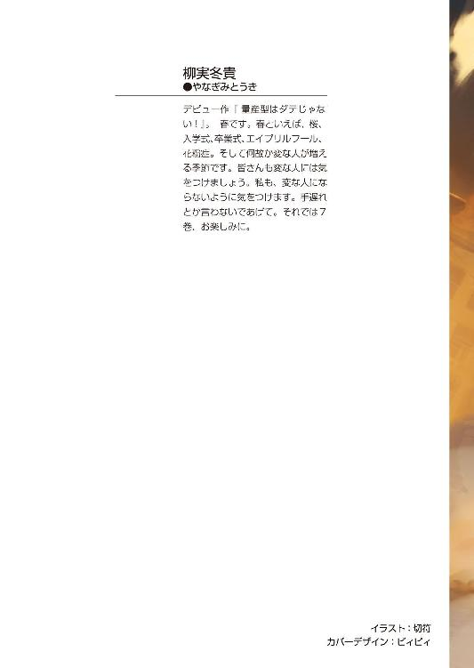
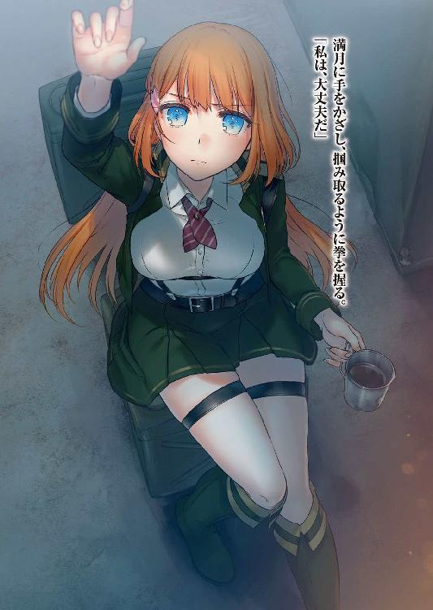
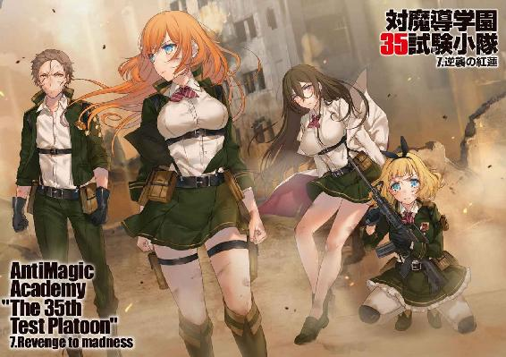
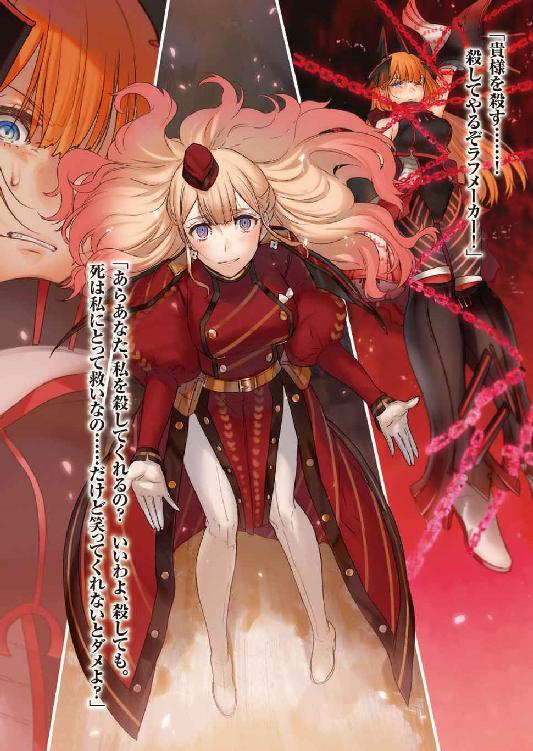
対魔導学園35試験小隊
７. 逆襲の紅蓮
柳実冬貴

富士見ファンタジア文庫
本作品の全部または一部を無断で複製、転載、配信、送信したり、ホームページ上に転載することを禁止します。また、本作品の内容を無断で改変、改ざん等を行うことも禁止します。
本作品購入時にご承諾いただいた規約により、有償・無償にかかわらず本作品を第三者に譲渡することはできません。
本作品を示すサムネイルなどのイメージ画像は、再ダウンロード時に予告なく変更される場合があります。
本作品は縦書きでレイアウトされています。
また、ご覧になるリーディングシステムにより、表示の差が認められることがあります。
口絵・本文イラスト 切符
プロローグ
タケルが内側の世界へ転送された四日後。
外側の世界では、異端審問会査問委員会が開かれていた。
法廷は被告席のみがライトアップされており、裁く側である幹部達の顔は闇に包まれて窺えない。
審問会幹部達の席は被告席を取り囲むように高い位置に設置されており、被告人は手枷をかけられた状態で立っている。
被告人は鳳桜花。
容疑は脱獄と公務執行妨害、及び逃亡幇助である。
「では一連の騒動は、君の独断で行われたというわけかね？」
幹部の一人が桜花へ問いかけると、桜花は背筋をピンと伸ばした。
「はい。脱獄の提案は私がしました。隊長は反対していましたが、私が半ば強行したと言っていいでしょう。三五試験小隊の他のメンバーも、私の命令に従ったに過ぎません」
「主犯は自分であると......そう言いたいわけか」
「はい。責任は全て私にあると、そう言っているのです」
桜花がはっきりと述べると、幹部の一人が呆れたように笑った。
「馬鹿を言うな。隊長は草薙タケルだ。君にそんな命令を下す権限は無い。だいいち部下が従うはずがなかろう」
「ご存じの通り、三五試験小隊の実績が飛躍的に伸びたのは、私が入隊した後です。部下の私が言うのは憚られますが、お世辞にも草薙タケルは優秀な生徒ではありませんでした。今や部下の信頼は私の方が厚いと言っていいでしょう」
桜花は幹部を前にしても一切怯まずに言い放つ。
「隊長に対してえらく反抗的な言動をするのだな」
「試験小隊は学生です。階級は存在しませんし、上下関係は形式的なものでしかありませんので、侮辱罪には該当しません」
桜花の態度に、幹部の一人がため息を吐く音が響く。
「口の利き方に気をつけたまえ。禁固刑だけでは済まない。本来ならば君は極刑に処されるはずなのだぞ？」
「承知しています。私はどのような判決でも受け入れるつもりですのでご心配無く」
「......君が罪を一人で被ろうとしているのはわかっている。我々も未成年である君に死をもって償えとは言わん。だが、連帯責任という言葉があるように──」
「あなた方が私を殺さないのは、私が会長の娘だからでしょう」
無礼な物言いに、幹部連中がどよめいた。
桜花は引かない。本物の査問はこんなに緩い空気ではない。茶番であることはとっくに見抜いていた。結局のところ、幹部達は傀儡に過ぎないのだ。少し前までは反体制派とまでは呼べないまでも、倫理委員会寄りの人間もいるにはいた。
しかし、ここ数か月の間にそれら不穏分子はすでに淘汰されている。
今ここにいるのは、会長、鳳颯月の腰巾着ばかりだ。
この査問委員会がどのように運ばれようとも、決定権は颯月にある。草薙キセキや幻想教団との戦闘について、内々に処理しようという魂胆が見え透いていた。桜花にできることと言えば、なるべく仲間達に責任が生じないようにすることだけだった。
「よく口の回るお嬢さんですな、会長のご息女は」
幹部の一人が査問席の中央を見やる。
そこには、口に手を当てて必死に笑いを堪えている颯月の姿があった。
桜花の目が刃のように鋭くなり、颯月を睨んだ。
「育て方を間違えたかな......いやまったく、目の上のたんこぶとはこのことだ」
颯月が机に脚を投げ出しながら、肘掛けに頰杖を突く。
まるで自分の足下で足搔く蟻でも眺めるように、颯月は桜花を見下ろした。
「桜花、彼らの言うことももっともだよ。あまり意地の悪いことを言うもんじゃない」
颯月の言葉は、会長の娘だから温情をかけている、ということが事実だと言っているようなものだった。
幹部連中が咳払いしたのを聞いて、桜花はふんと小さく鼻を鳴らす。
「桜花の言う通り自分の娘を死刑になどしたくないのは事実だが、このまま無罪放免というのも会長として示しがつかないんだ。身内だからといって犯罪行為をもみ消すのは、私の審問官としてのプライドが許さないしね」
プライドという言葉に縁遠い人間が何を言うのかと、桜花は忌々しげに眉根を寄せた。
颯月はその表情を見て、口元にいやらしく弧を描かせる。
「といっても、今は一介の試験小隊にかまけている暇はない。桜花も聞かされているだろう......すでに敵は我々の領域へ侵略を開始した」
桜花はタケルが姿を消してから数日間独房に閉じ込められていたため、現在の情勢を知る術が無かった。
この事実を聞かされたのは、今から数時間前のことである。
颯月は笑みを消して、慎重に事実のみを口にした。
「現在、灰色都市及び境界線は、一時的に魔女達の手に落ちた状態にある。騎士団も魔女狩りも街の防衛に徹している。前線に割ける戦力はそう多くはない」
「......敵の戦力はどの程度なのです？」
「二〇〇〇名以上。魔導兵器の類も確認されている。数としては小規模だが、一人一人が魔女であるのなら話は別だ。十分脅威と言えるだろう」
「その程度であれば、こちらの数で圧倒できるはずです。様子見などせず、敵が陣形を整える前に物量で叩くべきでした。今は犠牲を恐れている時ではないと私は判断します」
「敵は転送魔法を開発し、テレポーテーションのように瞬間移動してくる。禁忌区域や審問会施設に直接部隊を転送された時のことを考慮すればわかるだろう。街や学園の守備を手薄にすることはできない」
颯月の言うことはそれらしく聞こえるが、桜花には彼に他の思惑があるように思えてならなかった。キセキの護送作戦失敗は、初めから仕組まれていたと見て間違い無いだろう。キセキの護衛役に霧ヶ谷京夜が抜擢されたことがまずおかしい。颯月ならば、京夜があのような行動を取ることは予め予想できていたことだし、幻想教団の襲撃も読んでいたに違いない。
街にあれだけ大規模な破壊を招いた理由は桜花にはまだわからないが、その後の『純血の徒』を名乗る部隊の襲撃はあまりに都合が良すぎた。
魔女の軍隊が攻めてきたことと重なったことで、キセキの一件は敵軍のテロということで処理されたに違いない。テロという敵の行動は、審問会が大義名分を振りかざし、支持を得るための材料になる。
（さっさと敵勢力を鎮圧しないのも、戦いを長引かせるためか？ 何かから世間の気を逸らそうとしている......？ 裏で動いているのは間違い無いはずだ）
握った拳が、ギチリと音を立てる。
考えれば考えるほど、鳳颯月という男の全容が霞んでいく。
いつもそうだった。手を伸ばせば伸ばすほど、あの薄気味の悪い笑みの裏に何が隠されているのかわからなくなる。
思えば桜花が彼に引き取られ、養女として迎え入れられた時から不可解に思っていた。
何の縁もない孤児を引き取る理由がわからないのだ。
復讐の機会と力を与えてくれたことには感謝している。
しかし、彼の一挙手一投足に全て裏があるように思えてならなかった。
「状況が状況だ。今は禁固刑だのなんだのと言っている余裕も我々には無い」
颯月は身を乗り出して、にっこりと微笑みながら顎に手を当てた。
「そこで。君達三五試験小隊には少々特殊な罰を受けてもらうよ」
「特殊な罰......？」
「なに、そう構えることはないよ。君達の成長にとっても有益な罰だと思うんだ。何事も経験だというしね」
桜花は颯月を睨みながら、彼の判決に耳を傾ける。
颯月は微笑んだまま、静かに口を開いた。
「明日から君達には──騎士団や魔女狩りと同じように、最前線で敵の鎮圧に当たってもらいたい」
「......なっ......！」
その命令は、桜花の想像の斜め上をいっていた。
「装備や弾薬は試験小隊の制限を解除。好きなものを用いて構わないし、要求されたものは全て用意させてもらうよ」
「馬鹿な！ あり得ません！ 学生で構成された試験小隊が前線に投入されるなど前代未聞です！」
「そうでもないよ？ 英雄テロの時だって学生が防衛を手伝ってくれたし、今回だって志願した者は街の守りに当たらせている」
「学生を投入せずとも戦力は十分のはずです！」
「もちろんそうだよ。だから最初から言っているじゃないか、これは君達に科せられた罰だと。これで君の罪......そして、草薙君の罪も帳消しにできるのだから、安いものだろう？」
絶句する桜花の言葉に、颯月は涼しい顔でそう返した。
「君達の活動に期待している。がんばって生き残りたまえ。草薙君のためにも、ね？」
明かりが落ちて、颯月の姿が見えなくなる。
桜花は悔しさを耐えるために拳を握りながら、これから小隊に降ってかかる危機を想像して、ある決意を固めた。
草薙タケルが帰ってくるまでは......必ず私が、三五小隊を守る、と。
第一章 戦場
クリスマスを控えた一二月中旬、草薙キセキ護送作戦の失敗により、街の一区画が百鬼夜行に吞み込まれ、甚大な被害を出した。汚染された区画は現在も閉鎖されており、審問会関係者、及びアルケミストの限定された社員しか中の状況を知る者はいない。
犠牲者は不明だが、三〇〇〇人近くの人間が行方不明となったのは間違いない。その中には、キセキの兄である草薙タケルも含まれていた。
気を失った桜花を担いで、斑鳩とうさぎは百鬼夜行の波を回避しながら、閉鎖された隔壁までたどり着いた。押し寄せる赤い肉の群れに吞み込まれそうになった時、突然肉塊の活動が停止。灰のように崩れ去ったことにより、小隊メンバーはなんとか生き残った。
だが、その後桜花の身柄は審問会により拘束され、うさぎと斑鳩も検査という名目で薬師病棟に軟禁状態となっていた。
解放されたのは、タケルが失踪してから一週間後だった。
そして、三五試験小隊の純血の徒殲滅作戦への参加が決定した二日後。
桜花達は境界線、灰色都市北東部、第五防衛線第七中隊待機所のテントにいた。
聖域が近いこともあり元々廃れていた灰色都市だが、前にも増して荒廃していた。建物の崩壊が進み、至る所で銃声が響いている。
すでにこの場所は、戦場と化していた。
「遊撃隊......ですか？」
ブリーフィングに参加していた桜花は、作戦参加に当たり三五試験小隊の役割を指揮官より聞かされていた。
相手は第七中隊の指揮を任された男だった。
「そうだ。お前達は私の命令を聞く必要はない。任意で動けとのお達しだ」
「中隊長の指揮下につけと聞き及んでいるのですが......それに、目的の無い遊撃隊に意味があるのですか？」
「我々の目的は敵の殲滅だ。お前達はその最終目的に沿って、端で好きに行動すればいい。ただし、くれぐれも前へ出るな。中隊行動の妨げになる」
「......しかし」
「私からは以上だ」
中隊長は机の上の書類を脇に抱えると、一度桜花を横目で睨んでからテントを出て行った。残された桜花は作戦概要が書かれたホワイトボードを見て、深くため息を吐いた。
「......邪魔をするなということか」
中隊長が言いたいことはつまりそういうことだろう。
会長命令であるから仕方なく三五試験小隊を配置したはいいが、もてあますのも無理は無い。会長お抱えの学生部隊など、古参の部隊に受け入れられるわけがなかった。
こういう古参の手合いには実力を示して認めてもらうしかない。
「............」
敵のボーダーライン侵攻作戦が開始され、審問会は不意を打たれる形で灰色都市を占領されてしまった。
しかし、そこからの審問会の動きは速かった。まるで予期していたかのように騎士団が出撃し、防衛線を配置。街や施設への侵攻を阻止することに成功した。
住民の疎開は行われたが、街への被害はほとんど無い。他の境界線に被害がないことから、敵の作戦は関東地方に限定された局地的なものだろう。
敵の情報は少ない。捕虜を獲ろうとしても、彼らは即時自害してしまう。
だが、世間がこの異常事態に危機感を抱かないわけがなかった。
正式な発表は為されていないが、すでに世界は自覚しつつあった。
戦争はすでに始まっているのだ......と。
──迫撃魔弾が目の前で破裂し、西園寺うさぎは咄嗟に建物の陰に身体を隠した。
魔力を凝固させて構築された破片が頰を掠めた直後、うさぎの身体は衝撃で崩れた瓦礫の下敷きになった。
一瞬、意識が飛んだ。身体に痛みは無かったが、轟音と衝撃により耳鳴りが酷い。
《──園寺！ 西園寺！ 大丈夫か!?》
うさぎは無線から聞こえる桜花の声で目を覚まし、もがきながら土砂の中から這い出した。土砂から顔を出し、深く息を吸い込むと、塵が肺に入り込んでたまらずむせた。
「げほっ......だ、大丈夫ですわ」
《よく無事で......！》
「遮蔽物が多すぎて狙えなくて、近づき過ぎました......以後気をつけますわ」
《今の爆撃を最後に敵は撤退を始めた。動けるようならば、西園寺は騎士団の援護をしろ。私は引き続き上空の敵を殲滅する！》
うさぎは気力を振り絞り、塵で真っ白になった顔を袖で拭うと、素早くライフルの調子を確認してから銃口を前へ向けた。
そこで、うさぎは愕然とした。
真っ白に彩られた道の先に、赤い箇所がいくつもある。
それは、うさぎが援護していた騎士団の部隊の残骸だった。ただの肉塊と化してしまったそれらの残骸が、コンクリートの塵で白くなった道に赤い斑点のように点在していた。斑点は見る見る内に広がって、白かった世界を赤く染めていく。
「......う......っ」
うさぎは失われた目の前の命に、顔を強張らせて銃を抱きしめ、縮こまってしまった。
「だい、じょうぶ......大丈夫......も、もう、わたくしは弱くない......っ。このくらいのことで......！」
自分を奮い立たせようとしても、身体は動かず、涙で視界が歪んでいく。
過呼吸はなんとか堪えたが、立ち上がることがどうしてもできなかった。
「どうしてぇ......克服したはずですのに......っ」
うさぎは下唇を嚙みながら、ぎゅっと目を瞑る。
「くさ、なぎ......っ」
泣き出してしまいそうな状況の中、うさぎは自分を救ってくれた彼の名を小さく呟いた。
魔女狩り化により、真紅のマントを翼のように広げて飛行していた桜花は、うさぎの様子がおかしいことに気づき、一旦朽ち果てたビルの屋上に着地した。
「西園寺......？ 負傷したのか!?」
無線からすすり泣くような声が聞こえてきて、桜花は息を吞む。
うさぎから返答は無い。桜花が救出に向かおうとしたところへ、無線が鼓膜を震わせた。
《......うさぎは放置して。後続の部隊に回収してもらうように頼んでみる。鳳が行っても悪化させかねないし》
「杉波、どういう意味だ？ 西園寺が怪我をしたのかもしれないのだぞっ」
《私の言っている意味がわからないようじゃダメ。あんたは残存勢力を駆逐して》
「しかし！」
桜花が無線に怒鳴ると、斑鳩がため息を吐く。
《まだ連絡が来てないけど、中隊の第四、第五小隊はさっきの迫撃魔弾の掃射でほぼ壊滅。たぶんこっちから追撃はしないわ。本部は部隊を立て直すことを優先するでしょう》
「......っ」
桜花は息を吞んだ。第五小隊は、うさぎに援護させていた部隊だ。あれだけの迫撃砲を浴びせられて生き残ったのは不幸中の幸いだが、部隊は壊滅。
多くの死者が出たことで、うさぎは萎縮してしまったのだろう。
無理も無い話だった。いくら修羅場をくぐり、実戦経験があると言っても大人数を相手にしたのはアルケミスト第五研究所での一件だけだ。
あの時は敵も味方もドラグーンに搭乗していたが、閉所も多いため今回は生身の人間が大多数。多くの死を目の前にしたのは初めてだろう。
怯えるなというほうが無理な話だった。
（最初くらい一緒に行動すべきだった。戦果を上げて認めてもらおうと功を急ぎすぎた。一人一人のポテンシャルを最大限に引き出そうとしたのは早計だ......）
腕を信頼してのことだったが、戦場で単独行動をさせられるほどの精神力はうさぎには無い。桜花ですら、こうした状況下での戦闘は初めてだ。
まして隊長をした経験は無い。試験小隊は本来六人構成であるし、審問会の部隊は分隊ですら一〇人構成だ。四人で戦果を上げろと言われても無理な話だった。
だからといって、隊員の命を危険にさらしたことの言い訳にはならない。
（草薙だったら......もっと上手くやれたのだろうか）
本来の隊長であるタケルの手腕を思い出す。
彼のスキルは接近戦以外絶望的であり、指揮官として優秀とは言い難いが、精神面でのサポートはきっちりこなしていた。三五小隊の個々の能力は優秀だ。そのポテンシャルを引き出すのに一番大切なのは、戦闘の指示ではなく精神の連携。
彼ならばどんな状況でも、うさぎを奮い立たせてみせたはずだ。
（不甲斐ないな......草薙に隊長失格だなどと言っていた頃の自分が恥ずかしい）
失格なのは自分の方だ、と、桜花はうなだれた。
その時、近くの路上で爆音が響き、煙が上がった。
桜花は憂いでいた自分を戒めながら、再びマントを翼のように展開して銃を構える。
「ヴラド、索敵できるか！」
《余は探査タイプではないが......ふっ、見くびるでない。血の匂いを察知することぐらいはできる》
「自慢はいい！ さっさとやれ！」
《本契約を済ませたというのに相も変わらず口が悪いな、汝は......》
ヴラドが愚痴りながら索敵性能を発揮する。
桜花の嗅覚が、半径一キロメートル内の血液の匂いだけを捉えた。
《魔女の血の匂いは異質である。血中に混じった魔力は風味が違う。嗅げばわかろう......強敵ならばなおのことだ。無論、敵が血を流していればの話だがな》
言われた通り空気を吸い込むと、むせかえるような血の匂いが鼻を刺激した。
灰色都市に夥しい量の血が流れた証拠だ。魔女、審問官問わず、ここは死で溢れている。
桜花はまず死者と生者の匂いを嗅ぎ分け、次に生きている敵の匂いの質を分析する。
付近に残存している敵の中に、異質な匂いを感知した。
普通の魔力を持った魔女ではない。
「古代属性保持者か......！」
《部隊が壊滅し、孤立したまま逃げ遅れたのだろう。審問官を道連れに決死の覚悟で特攻......といったところか》
ヴラドの推測を耳にしながら、桜花は斑鳩に通信を送る。
「無人偵察機で偵察できるか？ 正確な位置を知りたい」
《とっくに破壊されてるわよ。支給品の出来じゃ強度なんて高が知れているし、とろくさくて使えたもんじゃない》
「杉波らしくないな......」
《出撃まで二日しかなかったんだから勘弁しなさい。うさぎの武器だって支給品を持たせるしかなかったし。私だってそこまで仕事早くないわよ》
無理もないと桜花は思った。
物資を好きに利用して構わないと言っても、二日で改良を施すのは無理だろう。
桜花は索敵を諦めて爆発の起こった場所へ飛行した。
ビルの屋上から飛び立った直後、真横から魔弾が頰を掠めた。
遠方に飛行触媒に乗った魔法使いが、こちらを狙撃用の杖で狙っていた。
桜花は左右に揺れながら飛行して、銃口を魔法使いへ定める。もう一発、魔弾が頭部スレスレを掠めた瞬間、桜花は対物特化杭に換装した杭を放った。飛行中なため弾道が歪んだが、この程度のズレは予測していた。
魔力の杭は飛行触媒に直撃し、魔法使いは地面に落下して行った。
周りを見てみれば、敵の残党達が古代属性保持者が暴れている方向へ集まっていた。
最後の抵抗。決死の特攻を仕掛ける気だ。
「ヴラド！ 敵側に魔力通信を送れるか!?」
《障壁がかかっている。暗号術式が解読できねば不可能だ》
「くっ」
《聞く耳などもたぬさ。降伏要求などやめておけ。はなから死ぬつもりの連中に慈悲などくれてやる必要があるものか》
桜花だってそんなことはわかっている。
だが、本隊が撤退したというのに、戦うことの無意味さが何故理解できないのだろうか。こちらにも犠牲が出る以上、双方にとって利益の無い行為だ。
歯がゆかった。魔力を噴射させて、桜花は爆心地へ集まってきた魔法使い達を撃ち落としていく。地上の騎士団の隊員が対空砲などを用いて迎撃を開始。再び戦場は乱戦状態へ。
「アイツはどうした!? どこで何をやっている!?」
桜花が斑鳩へ怒鳴るように尋ねる。
《さあ？ 作戦開始時からずっと無線切ってやがるわよ。どうせ独断専行しているんでしょう。昔のあんたみたいにさ》
昔の自分と言われて、桜花は反論できなかった。
新たな爆炎が上がる。桜花は急降下して、敵を追った。
「うらあああああああああああああ！」
闇市の露店が並んでいたであろう通りで、片目が潰れた赤いローブの男が咆哮する。足下の空色の魔法陣が激しく回転し、魔法が発動。露店の陰から男に向かって射撃していた騎士団二名の周りを、半透明の膜が覆った。膜の内側にいた騎士団は狼狽し、膜に向かって射撃する。銃弾は膜の内側を跳弾し、騎士団の身体を貫いた。
息も絶え絶えで膜の中で手を伸ばし、なおもハンドガンで応戦しようとする騎士団の隊員に、古代属性保持者は怒りの形相で手の平を開き、握りつぶすように拳を作った。
直後、覆っていた膜が圧縮されて、中にいた騎士団の隊員はゴルフボールほどの大きさまで一気に収縮されてしまう。
魔法が解けた瞬間、膜が破裂して中身の血液やら肉片が飛び散った。
「『圧縮』属性か......！」
建物の陰から状況を窺っていた騎士団の一人が、無線を使って全部隊に敵の属性を報告しようとする。
だが、次の瞬間、身を隠していた建物自体の表面に膜が出現。
膜は建物を一気に圧縮。建物そのものが鞠のように小さく凝縮されてしまう。
身を隠す場所を失った騎士団はその場を飛び退こうとしたが、無駄に終わった。
古代属性保持者が握った拳を開いた瞬間、圧縮された建物が圧力を失い一気に破裂した。
破裂した建物の破片は、砲弾のような勢いで周りの障害物や騎士団などを全てなぎ倒した。まるで爆撃にでもさらされたかのように、周辺一帯が瓦礫と化す。
その場にいた者で生き残ったのはたった一人。破損したアーマーの隙間から血を流す騎士団だった。
助けを求めるように手を伸ばす彼に、古代属性保持者が立ちはだかる。
「はぁ......はぁ......貴様らの中隊本部はどこだ......！」
息を荒らげ、血走った目を向けながら、騎士団に問う。
「たす......け......」
「どこだと聞いている！」
「......死にた......く......な」
助けを請うてきた騎士団に舌打ちをして、古代属性保持者は容赦無く彼の身体を膜で覆い、握り潰した。
顔にかかった血飛沫を拭いもせずに、古代属性保持者は通りを歩く。
そこへ、真紅の鎧とマントを身に纏った桜花が舞い降りた。
桜花は着地すると同時にヴラドを構え、敵と対峙する。
「今すぐ戦闘を停止しろ！ これ以上は双方にとって得は無い！」
「............」
「わからないのか!? お前はすでに我々に包囲されている！ 他の残党も制圧されるのは時間の問題だ！ 命を無駄に散らすことはないだろう！」
「............今、無駄と言ったか？」
桜花の必死の説得に、古代属性保持者の男は怒りに身体を震わせた。
「我らの闘争を、我らの無念を......我らの復讐を無駄と言ったか、貴様！」
憎しみに濁った男の瞳に、桜花は寒気を覚えた。
彼の怒りに怯んだのではない。この目と同じものを、鏡の前で見たことがあったからだ。
「っ、今すぐ魔法陣を消せ！ 私のレリックイーターはどんな魔法も貫通する！ この距離ならば外さない！」
「紛い物の魔導遺産など恐るるに足らず！ エグゼの一人も道連れにできれば重畳！ 我らの闘争が無駄ではないことを証明してやる！」
男の怒号に応じて空色の魔法陣が激しく回転し、巨大化していく。
何かの大魔法を使用しようとしているのは明らかだった。
桜花は一瞬迷ったが、ヴラドの銃口を男の頭ではなく、足へと向けて射撃した。
予め展開されていた防護障壁を貫通して、ヴラドの杭が男の左足を吹き飛ばした。
体勢を崩して男が地面に倒れる。
だが、なおも魔法陣は消えなかった。痛みに耐えて、男は術式構築を続けていた。
（殺すしかない......！）
心を鬼にして頭へ銃口を向けるも、桜花の照準はぶれていた。
（腑抜けるな鳳桜花！ これは戦争なのだ。今までだって散々やってきたではないか！）
自分を叱咤して、トリガーに指をかける。
その時。倒れ伏した男の頭を、突然上空から降ってきた緑色の影が鷲摑んだ。
影は男の頭を摑んだまま天高く掲げて、桜花に向かってつまらなそうな顔を向けた。
「敵を前にして躊躇かよ。エグゼの連中から聞いてた話とずいぶん違うじゃねぇか。マヌケになったもんだな、鳳」
「霧ヶ谷......今までどこにいた」
「何でてめぇに答えなきゃいけねぇんだよ。俺の上司でもねぇくせに」
「......隊長は私だぞ」
「仮の、だろ？ それに俺は雑魚小隊になんざ入ったつもりはねぇ」
「会長の命令で、貴様は私の指揮下についたはずだ。独断専行は許さん」
桜花の言葉を聞いてか聞かずか、霧ヶ谷京夜は摑んだ男の頭をギチギチと軋ませた。
男が頭蓋骨の痛みに苦悶の声を上げると、足下の魔法陣が消失。
「術式は頭で考えるもんなんだろ？ だったら頭に苦痛を与えてやりゃいい」
苦痛に悲鳴をあげる男を、京夜は笑う。
「もうそいつを殺す理由はない......拘束すればいいだけの話だ」
必死に止めようとしてくる桜花へ、京夜はわからないものを見る目を向けた。
「......なんだその理屈は？ こいつらだって決死の覚悟で襲って来たんだ。拘束なんかされるよりは討ち死にしてぇと思ってるだろうよ」
「捕虜を不必要に殺すことは禁じられている。今すぐ手を離せ」
「............ハッ。だったらいいぜ、ほらよ」
京夜はきょとんとしたまま、投げ捨てるように男の頭を離した。
男はがくりと膝をついてうつむく。桜花が駆け寄って魔女狩り化を解き、捕縛用のグレイプニルを装着させようとした、その瞬間。
予め用意していたのか、男が懐から呪符を取り出した。
「──貴様らの汚れた血を浄化する！」
桜花は慌てて男の手を狙おうとしたが、それよりも早く、京夜の大型ショットガン、ネロが火を噴いた。目の前で、銃声と共に男の身体が血煙と化す。桜花は尻餅をついて、京夜の顔を見上げた。
京夜は呆れ顔で肩に銃を担いで、桜花を見下ろしている。
「......情けねぇ。あんたがそこまで落ちぶれたのは草薙のせいか？ 紅蓮姫なんてけったいなあだ名で呼ばれていた頃のあんたは、どこいっちまったんだろうな」
「............」
「......くだらねぇな。期待した俺が馬鹿だったぜ」
横目で侮蔑の視線を向けて、京夜は肩に銃を担いだまま背を向ける。
桜花は悔しさに瞳を揺らしたが、深く息を吐いて空を見上げた。
雲一つ無い青。その青空に不釣り合いな銃声の数々は、数分と経たぬうちに数を減らし、やがて消えた。
今回は戦果だけを見れば審問会の勝利だった。この戦いを経て、審問会の前線はわずかに前進、闇市会場を占領した。日に日に敵を追い込んでいるのは間違いない。
だが、いまだ地の利は向こうにある。境界線や灰色都市は地上だけではなく、地下があるのだ。使われなくなった地下鉄や地下道、戦前に作られた補給物資運搬用の通路。長きにわたって放置されたそれらの空間は、審問会ですら全てを把握できているわけではない。
地下からの奇襲により、審問会側の戦死者は一〇〇名近くに及んでいた。初期の戦場に五〇〇〇はいた審問官の数も、今や三〇〇〇を切っていた。
数時間後、境界線と灰色都市の中間地点にまで中隊本部が移動し、闇市付近には審問会のキャンプが作られていた。
補給物資の段ボールを抱えて、桜花はキャンプを歩く。救護所テントから治療中の審問官達の悲鳴が聞こえてきて、桜花はそちらへ視線を向けた。
テントの中は、治療を受けている隊員でいっぱいだった。血のにじんだ包帯を巻いた患者達がベッドを埋め尽くし、比較的軽傷の患者は地べたに座っている状態だ。薬師の数も足りていないのか、騎士団が四肢の切断や患者を押さえる手伝いをしていた。
（......増援はいつになったらくるのだろう）
ここへ来てもう三日になるが、戦果を上げても状況は悪くなる一方だった。
第五防衛線はまだマシだと聞いている。第二、第三防衛線では魔導竜騎兵......英雄の襲撃が行われたという報告があった。エグゼの隊員により殲滅されたらしいが、最新型のドラグーンでも太刀打ちできなかったと、桜花は聞いている。
今の状態で英雄が襲ってきたらと考えるとぞっとした。
第五防衛線にエグゼはいない。レリックイーター契約者はいるが、ミスティルテインに吸収されかけたヴラドは調子が悪いため、桜花だけでは心許ない。
もう一人の契約者といえば、独断専行の傾向が強い霧ヶ谷京夜だ。
彼はさきの護送作戦で命令違反の責任を課せられ、降格処分扱いで三五試験小隊に配属させられていた。三五小隊にやってきたばかりの頃の桜花と同じ境遇というわけだ。
（私も前は、奴と同じだったのだろうか......）
敵に対して容赦の無かった自分を思い返す。あの頃は降伏に応じない敵など、すぐさま撃ち殺していた。今は、敵を捕縛するための最大限の努力をすべきだという考えに変わっていた。倫理がどうこうより、そちらの方が得るものが多いからだ。
殺すということは、他の全ての選択肢を奪う。三五小隊で自分なりに学んだことだ。
（......困ったものだ。隊長など私に務まるのか......？）
慣れない戦場でメンバーの実力を発揮できない上に、厄介な刺客が入隊している。
何より、タケルがいないことが一番の問題だった。
桜花も、胸の中にぽっかりと穴が空いたような気持ちがずっと続いていた。
「......草薙......」
彼の名を口にしてしまったことに気づき、桜花は固く目を閉じて迷いを振り払う。
（今は生き残ることだけを考えねば。草薙が帰ってくるまで、私がこの小隊を守るのだ）
気を引き締めて、桜花は仲間達の元へと向かった。
補給物資が届いたことで状況は多少落ち着いた。
審問会が一歩前進したことで、陣地構築前に敵が奪還を狙ってくるかと思われたが、幸い敵はやってこなかった。互いに消耗が激しいのだろう。敵側に補給が行われているかどうかはわからないが、アウェイである以上は敵側の方が窮地のはずだった。
「はぁ......」
熱いシャワーを浴びながら、うさぎは身体を洗いもせずにうな垂れる。数日ぶりのシャワーだった。補給品と一緒にシャワー車の出張があったので、ありがたく利用させてもらっているのである。
うさぎは味方の死に怯えて動けなかった自分を恥じている。狙撃が役割の彼女は、至近距離で人の死に触れたのは初めてだった。
克服したと思っていた自分の欠点が再発。情けない。こんなことではまた小隊の足を引っ張ってしまう。もちろん、原因が人の死だけではないことに、うさぎは気づいていた。
「......草薙」
熱い雫を顔に浴びながら、彼の背中を夢想した。もう一か月も頭を撫でてもらっていない。あまりの寂しさに涙が出そうになる。
その時。
「乙女チックセンチメンタル！」
いきなり背後から、泡だらけの手がうさぎの胸を鷲摑んだ。
「ぬぅなぁ!?」
「また寂しいと死んでしまううさぎちゃんに逆戻りなのね。いいわ、気付けに乳揉んでへろんへろんにしてあげる」
「杉波！ ちょっとは人の気持ちを──ひぁぁぁ！ どこを摘んでいるんですの!?」
斑鳩は自分の胸をうさぎの背中に押しつけながら、うさぎの胸を揉んだり摘んだりなで回したり、余すことなくいじくり回した。
頰を染めて嬌声を漏らし始めたうさぎの耳元に口を寄せて、斑鳩は目を閉じる。
「あんたの気持ちいいとこくらい......間違えた、あんたの気持ちくらいわかるわよ。草薙がいなくて寂しいんでしょ？」
「そ、そんなこと......！」
「こんな状況なんだから強がっても仕方ないでしょう？ 私も寂しいわ」
胸を揉まれているのはともかくとして、斑鳩の声は優しかった。
「大丈夫よ。あいつは絶対生きてる。一番つき合いの長い私が保証してあげる」
斑鳩が濡れたうさぎの髪を撫でると、うさぎの瞳に涙が浮かんだ。
「でも......そんなの、わからないじゃないですか」
「わかるわよ。二階堂だってついてるんだし、あの男が私達や妹のことを放って一人で死んだりするものですか。絶対に帰ってくる」
斑鳩の声に不安は無かった。
「今私達がやらなきゃいけないことは、あいつが帰ってくるまで生き残ることよ。しっかりしなさい。あんたがこんなところで死んだら、あいつは自分の責任だって思うはず。だから、地を這ってでも生きるのよ」
うさぎが頷いたのを見て、斑鳩は薄く微笑んだ。
「まあ、中隊からは私達は必要ない、自由に動いていいって言われてるわけだし、別に戦闘に参加しなくても──」
「──そういうわけにはいくまい」
斑鳩とうさぎが抱き合っているシャワー室の横から声がした。
壁は二の腕の高さまでしか無く、いつの間にか横でシャワーを浴びていた桜花の顔が二人の目に入った。斑鳩が「チッ」と舌打ちをする。
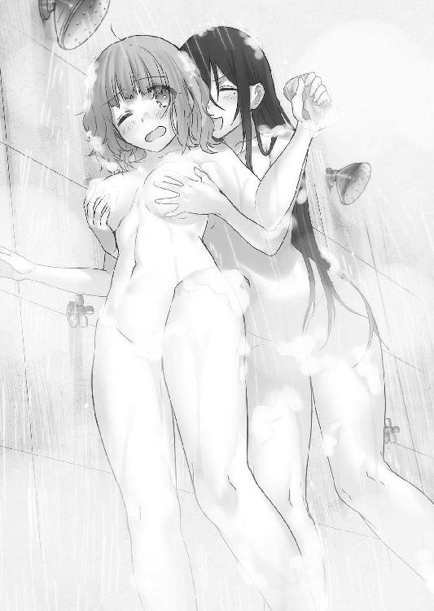
「......空気読めないにもほどがあるでしょ」
「戦場でセクハラに励むお前に言われたくないが......これはもう性分だ。許せ」
「この期に及んで審問官としての責務がどうとか言わないでよ？ 今までの仕打ちや草薙の妹の件を知っても、あんたはまだ理事長の犬でいるつもり？」
トゲのある斑鳩の言葉に、桜花は少し悲しげに目を伏せた。
「そんなつもりは毛頭無い。今の審問会に忠誠を誓うだけの価値が無いことぐらい、わかっている。だが我々に監視がついている以上、好きには動けまい」
「......霧ヶ谷のことを言っているのね」
「ああ。草薙とは知り合いのようだったが、杉波は奴のことを詳しく知らないか？」
桜花が問うと、斑鳩は濡れた髪を搔き上げながら小さくため息を吐く。
「中等部の時に同じクラスだったわ。草薙もそう。性格は......そうねぇ、口ばっかりの凡人と言いたいところだけど、努力して並の才能をコツコツ磨き上げようとするタイプかしら。努力を棚に上げて調子に乗るところがあったけど、そこそこ優秀だったわよ」
「......変わったのは模擬戦トーナメントの一件からか」
「決定的だったのはそこからね。少なくとも今のように逆恨みで他人を傷つけるような奴ではなかったわね。草薙に意味もなくつっかかってたけど、最初は結構仲が良かったのよ、あの二人」
「そうなのか......？ 想像できんな」
模擬戦トーナメント二回戦の相手としてタケルのことをボロクソに言っていたことを思い出しながら、桜花は言った。
「草薙は剣術にしがみついて努力する残念な天才で、霧ヶ谷は器用貧乏をどうにか克服しようとする凡人ってところかしら。中等部時代はよくも悪くも、二人ともがむしゃらだったから気が合ったんでしょう。でも草薙の性格が変わってしまってからは、霧ヶ谷が一方的に毛嫌いするようになった。簡単に他人に頭を下げるようになった草薙のことが気にくわなくなったんでしょうね。まあ、だからって妹をあんな風に殺そうとするような奴じゃなかったわよ」
懐かしむように遠くを見つめる斑鳩の横で、桜花は髪を洗い流しながら目を細めた。
「一五試験小隊の仇を討ち......か」
「薬師希望の吉水とは幼馴染みだって話よ。レリックイーターと契約して、治癒能力を吉水に分け与えているっていうのは本当なのかしらね」
桜花は京夜の復讐に燃える目を思い出しながら、シャワーの蛇口を閉めた。
「霧ヶ谷をこちら側に引き込めないだろうか」
「......あんた、それ本気で言ってるの？」
驚いて目を剝きながら、斑鳩が桜花を見る。桜花は顎に手を当てながら考えを述べる。
「奴は理事長が送り込んできた監視なのだから、懐柔してしまえば好きに動けるだろう。目的が復讐なら、理事長のそばにいても救いは無い。私がそうであったように」
「............」
「......霧ヶ谷の目は、半年前の私と同じものだった」
復讐心に取りつかれ、それだけに人生の全てを捧げようとしていたのは桜花も同じだった。その凍てついた心を溶かしたのはタケルだ。自分が立ち止まることができたのだから、京夜にそれができないとは思わない。
斑鳩に抱きつかれていたうさぎが、ふるふると首を横に振った。
「あの男は、キセキさんを殺そうとしたんですのよ？ 彼がいなければわたくし達もこんなことにはならなかった......！ 鳳はそんな人間を仲間にしたいんですの!?」
うさぎの言うことは正しい。桜花も同意見だ。
だが、それでは何の解決にもならない。
「仲間になれるとは思わないが、利害さえ一致していれば協力くらいはできるはずだ」
それに、と桜花はつけ加える。
「草薙だったら、そうすると思う」
「......信じられません......っ」
桜花の言葉を否定できず、うさぎはシャワー車を出て行ってしまった。
斑鳩は桜花に苦笑を送る。
「正直私も反対よ。ああいう小物が身内にいてもろくなことにならないしね」
「......そう、だろうな」
「でも今の隊長はあんた。私はあんたに従う」
斑鳩の言葉に桜花は驚いて顔を上げた。斑鳩が肩をすくめて、バスタオルを首にかける。
「だけどせめて方針くらい固めなさいよ。傾向と対策はチームワークの基本でしょ。言っておくけど、私は説得とか無理だからそのつもりでいなさい。人間関係ぶっ壊すことはできても、構築するのは不可能だから」
「うぅ......そこに関しては私も似たようなものなのだが」
コミュニケーションが小隊内で一番苦手なのが自分だと自覚している桜花にとっては、説得は難題だった。
「言い出しっぺはあんたよ。説得方法くらい自分で考えなさいね～」
斑鳩もうさぎの後を追うようにシャワー車から出て行く。入れ替わりですぐに別の隊員がシャワーを浴び始めた。
今はひとまずリラックスしようと頭を切り換え、桜花は身体を洗い始めた。次はいつシャワー車がやってくるかわからないのだから、せっかくの贅沢を味わうべきだと考えた。
桜花だって女子だ。身体はいつも清潔でありたいし、体臭だって気にする。
小隊に入ってからは特に気を遣っていた。
腕を洗い、次に脇、そして胸の辺りを泡で擦っていると、突然──
「いいなぁ......若いっていいなぁ......いろんなところに張りがあって」
斑鳩達がいたシャワーから、羨ましそうに顔を覗かせる謎の女性がそんなことを言ってきた。びっくりして桜花は仰け反った。
初対面の相手のシャワーをいきなり覗いてきた女性に、警戒心を露わにする。
黒髪のショートボブ。目がぱっちりと大きい、幼い顔立ちの女性だ。
絶対に面識は無い。誰だこの女は。
「な、なんです!?」
「はぁ......しかもおっきいなぁ。髪も綺麗だし、その完璧さは嫉妬に値しますよ。ちくしょう......私だってもう少し若ければ勝負になったと思うんですけどね。どんなに硬派を気取った男でも、やっぱ巨乳が好みなんでしょうか......嘆かわしいです」
桜花が疑問をそのまま口にしても、女性は口を尖らせて、うらやましいうらやましいと口にするばかり。そしてそのまま前に向き直って、身体を洗い始めた。
「あの......中隊の方ですよね？ どこかでお会いしましたか......？」
女性は答えず、石鹼を泡立てている。無視だった。
（なんだこの女は......馴れ馴れしい上にマイペースにもほどがあるだろう）
自分で言うのもなんだったが、桜花はそう思わずにはいられなかった。
桜花もさっさと身体を洗ってしまおうと、シャワーに集中する。
気づけば周りのシャワーに人がいなくなっていた。
この女と二人きりというのは、妙に気まずい。
桜花が先にシャワーから出ようとすると、
「──ねえ君、鐵隊長とはどういう関係なの？」
いきなりそんなことを言われて、ぎょっとしながら隣を見やる。
女性は視線すら向けずに、こしこしと身体を洗っていた。
「......は？ 鐵隊長ですか？ 何故そんなことを......もしやあなたはエグゼの......？」
「質問に答えてくださいな、鳳桜花さん」
「どういう関係と言われても......私がエグゼにいた頃にお世話になったというか、しごいてもらった上官としか......」
そこまで言って、女性が自分の名前を口にしたことに気づいた。
桜花は顔を引き締めた。
「会長の駒じゃないので安心していいですよ。しかし解せません。どうしてただの部下だったあなたなんかを気にするのでしょうね、あの仏頂面さんは」
意味のわからないことを言いつつも、女性はちらりと横目で桜花を見た。
「私は大野木彼方と言います。あなたと入れ替わりでエグゼに入った、元隠密の魔女狩りですよ」
「やはりエグゼの......何故ここに？ 第七中隊の応援ですか？」
「私は鐵隊長に頼まれて三五試験小隊の様子を見に来ただけです。あの方は戦場を飛び回っていますので、自分で視察に来られないから私を使いっ走りに寄こしたんですよ」
真相を聞いても、いまいち納得ができなかった。
鐵隼人が小隊の安否を心配している？ 何故？
「何故かと聞かれても、何も聞かされていないので答えようがありません。私個人としては、小隊の様子というよりは、あなたの様子を見てこいという風に聞こえましたけどね」
じろりと睨まれて、桜花はたじろいだ。
「......意味がわかりませんが、私と鐵隊長の接点など元上司と部下という立場しかありませんよ。部下のことを大切にする隊長でしたが、私にこだわる理由など見当つきません」
睨み返すと、彼方は桜花が噓を言っていないと判断したのか、大人しく引き下がった。
「まあ、いいでしょう。無事を確認できたのでひとまず良しとします」
「......それだけのためにここへ？」
「いえ。一応、伝言を預かっていますので、伝えますね」
伝言と言われて、桜花は彼方へ向き直った。
シャワー車には他に人はいない。恐らくエグゼの権限で人払いをさせたのだろう。
彼方は小さく咳払いをすると、隼人から預かった伝言を口にした。
「『審問会にとってお前達は草薙タケルを利用するための人質でしかなくなった。霧ヶ谷京夜を振り切って指定の場所へ逃げろ。そこに逃がし屋がいる。あとは好きにしろ』」
「............」
「......だそうです」
彼方はわざわざ隼人の声真似をして、伝言を終えた。
ちなみに全然似ていなかった。
「あの......全然わかりません。事情を説明してください。どういうことなんですかっ」
「『逃げろ』、わかればいいのはこの言葉だけです。はいこれ、場所のメモ。じゃそういうことで」
ピシッと手を上げて、バスタオル片手に彼方が出て行こうとする。
桜花は慌てて引き留めようとしたが、先に彼方が足を止めた。
「あなた達はこれ以上、戦いに関わらない方がいい......一人の大人として私もそう思います。生きてさえいれば、いずれ決着はつくでしょう。その時に審問会が勝っているか幻想教団が勝っているかはわかりませんが、世界が落ち着くまでは身を隠すべきです」
「............」
「仲間のことを守りたいと願うなら、なおのことですよ。戦いは大人の仕事ですから」
彼方はそれだけ言って、姿を消した。
文字通り、桜花が瞬きをした瞬間に姿を消したのだ。残された桜花は拳を握り、目を伏せながら、隊長として仲間のために何をすべきかを考えていた。
シャワー車を離れ、濡れた髪を乾いた風に晒しながら、桜花はキャンプを歩く。
食糧の配布が行われている広場に立ち寄った時に、焚き火を囲んでいた数人の騎士団の話が耳に入り、足を止めた。
「敵の抵抗は激しい......今の戦力だけで制圧できるかは五分といったところだな」
「いや、こっちにはまだ英雄も出てきていないし、古代属性保持者だって奥に控えてるんだ。昼間の『圧縮』属性の奴見ただろ......全力でこられたら終わりだぜ」
「上の人間は我が身可愛さで増援を寄こしもしねぇ。転送魔法が怖いからって、こんな数じゃやってけるわけがないだろ......！ こっちの身にもなれってんだ......！」
桜花はタオルで髪を拭きながら、騎士団の隊員達の会話に耳を傾ける。
中隊に不安が広がっている。よくない傾向だった。戦場のモチベーションというのは、直に戦況に影響を与えるのだ。三人の騎士団が悪態をついていると、端でライフルを抱えて縮こまっていた一人が、震えた声を上げた。
「......隠密の分隊員から、嫌な噂を聞いたんだ。夜間に敵地を偵察していた連中が、全滅したって......」
「？ 分隊の全滅なんて珍しいことじゃないだろ。まして隠密ならなおのことだ」
「いや、待て。俺も聞いたぞ。確か一人だけ生き残った奴がいたんだよな......？」
騎士団の二人が訝しげにそう言うと、縮こまっていた男がさらに銃を強く抱く。
「現場は目を背けたくなるような有様だったらしい。肉と血が飛び散って、酷い匂いだったそうだ。生き残った奴の話では、敵の待ち伏せにあって攻撃を受けたって」
それが何だ？ と周りの連中は怪訝そうな顔をする。
「敵の部隊は、敵味方関係無く無差別に殺したらしい」
「戦場で錯乱状態に陥ったのか？ 嫌な話だな......」
「違う。たぶんそうじゃない。敵は明かり一つ無い地下道で一列に並びながら、全員涙を流して満面の笑みを浮かべていたらしい」
「............」
「嫌だ......死にたくない、って泣きながら笑っていたんだってさ。いくら銃弾を浴びせても、獣みたいに飛びかかってきたそうだ。爪が剝がれて、腕が折れて、歯が砕けてもなお襲ってきたらしい」
話を聞いていた騎士団達は皆、息をするのも忘れて聞いていた。
「敵も味方も死に絶えて、ただ一人生き残った奴は......その惨劇の中央に立つ、幽霊みたいな女の姿を見たんだってさ。その女は生き残っちまった奴のそばまでやってきて、耳元で囁いたんだそうだ」
「......何を......？」
息を吞んで周りの連中が同じ問いをすると、銃を抱えていた隊員が顔を上げて、口元を引きつらせた。
「 『笑え』 」
気づかれぬように話を聞いていた桜花の顔から、表情が消えた。
「生き残った奴は、笑いながらこの話を救援部隊に伝えた後、舌を嚙み切って死んじまったそうだ。敵と同じように、嫌だ、嫌だって言いながら......」
身震いしながら話を終えて、銃を抱えていた隊員は下唇を嚙んだ。
聞いていた隊員達がどっと息を吐いて、恐怖を誤魔化すように笑い合った。
「......よ、よくある都市伝説なんじゃないのか？」
「戦場でそういう噂はつきものだっていうしな」
さっさと話題を変えようとしたが、内一人が神妙な顔で目を細める。
「......俺は聞いたことがあるぜ。確か審問会のデータベースに、そういう魔女の記録があったはずだ。十年くらい前から定期的に事件を起こしていた猟奇殺人者......」
続けて、彼はその名を口にする。
「通称ラフメーカー。精神汚染系統の魔法を使うＡ級危険指定......分隊が遭遇した状況に事件性が似ているのは確かだ」
「そいつ......まだ捕まってないのか？」
「いや、一度捕縛されたが......鉄の処女に軟禁される前に脱獄したんだ。以降、魔女狩りはずっとラフメーカーを追って──」
その時、突然背後から騎士団の肩を桜花が摑んだ。
桜花は騎士団の胸ぐらを摑み、強制的に自分の方へ向かせた。
「──そいつのことを詳しく話せ」
「い、いきなりなんだ!?」
「いいから話せ。分隊が遭遇した場所はどこだ？ 言え」
「......会長の命令で参加している試験小隊だな？ 上官に向かって貴様──」
不快な顔をした直後、桜花は騎士団の顔を睨んだ。彼女の瞳に怒りは無く、まるで地獄の底から手を伸ばす亡者のような薄暗い炎を宿していた。
長年修羅場を経験していた騎士団達は、この瞳を何度か見たことがある。
仲間を失った味方。自爆テロをしかけてきた魔女。境界線で膝を抱えて人々を睨みつける子供。
それらの者達はいずれも何かを失い、そしてある決意を瞳に宿していた。
復讐。ただそれだけのために生きるという決意だけを。
第二章 仲間か、復讐か
アルケミスト社第一研究所は都市部から離れた山間に設けられており、近隣一帯は関係者以外立ち入り禁止となっている。他の研究所と違い、この場所はレベル５以上の兵器開発が主となっており、危険かつ非人道的な実験が行われていた。
ただし杉波伊砂の独断で管理されていた第五研究所とは違い、審問会公認である。
「さすがに仕事が早いですね、朱雀さん」
鳳颯月はガラス張りの向こう側に広がる光景を見ながら、満足そうに頷いた。
横にいた灰色の髪の女性がニコニコしながら胸を張った。
「当然でございましょう？ 正当な報酬がある以上、アルケミストはご依頼人の期待を裏切ることはございません。すでに量産を開始しておりますので、境界線の小競り合いの決着がつく前には投入できるかと存じます」
誉めて誉めて、とアルケミスト社代表取締役、杉波朱雀は子供っぽく颯月に擦り寄る。
颯月は朱雀の額を手で押し返しながら、冷ややかに眼下の光景を見やる。
「完成品を提供する代わりに、燃料となる物資の提供を交換条件に出すとは......相変わらずあなたはマッドサイエンティストの鑑ですね」
「杉波の理念はもうご存じでしょう？ 我々が企業という体制を取っているのは、偏に資金を調達して自分達の研究欲を満たすためであり、どの組織にも組み込まれない中立を保っていたのは、勢力争いやくだらない政治闘争で自由な研究を阻害されないためでございます。杉波にとって資金とは研究をするための燃料でしかありませんので」
「......手の平を返したように我々の専属になった今となっては、説得力の無い理念だ」
颯月が言うと、朱雀は「失礼な！」と口に空気をためた。
「あなた方に全面協力を約束したのは、百鬼夜行の研究の全権を握れるからです！ この戦争の勝敗になんか微塵も興味はございません！」
プンスカと手足をばたつかせる朱雀に、颯月は嫌悪感を募らせた。
自分達の理念を馬鹿にされてふてくされるその様子は、本当に子供のようだった。
アルケミスト社という危うい組織を成り立たせている杉波の人間は異常だ。特にアルケミストの頭角を為す杉波朱雀という女は、杉波の中にあってなお異質だった。
朱雀は杉波の遺伝子を持つ『作られた天才』の中で唯一、魔力を持つ異端児なのだ。
「......百鬼夜行の研究は進んでいるのですか？」
颯月が問うと、朱雀は瞳を輝かせた。
「ええもちろんでございます！ 呪いという代物は実に面白い！ 転生のメカニズムの解明まではまだ至っていませんが、制御方法は判明致しました。魂との連結を切ってしまえば上手くいくと考えていたのですが、百鬼夜行の呪いの徹底ぶりは素晴らしい。魂とのリンクが切れると鬼の肉体も死滅してしまうのです」
「では、草薙キセキの魂を維持したままコントロールを図るわけですか。百鬼夜行の身体の主導権は草薙キセキにあるはずだ。私のインノケンティウスですら主導権を奪うことはできなかった。どんな方法を用いるので？」
朱雀は、チッチッチッと人差し指を揺らした。
「コントロールに必要なのは魔法でもなければ高度な機械技術でもありません。むしろそんな物であのバケモノをどうにかできるわけがないのです。つけ入る隙があるとすれば、それは草薙キセキの心でございます」
「心......魂ではなく、ですか」
「人間の心だって、機械のようなものなのですよ。電気信号を与えれば反応しますし、癒すことも荒ぶらせることもできます。人心をコントロールすることに関しては、あなた様の方が心得ておいででしょう？」
「............」
「ヒントは夢。そして大好きなお兄ちゃんと恋敵、でございます」
ウィンクをして、朱雀は可愛らしく振る舞う。颯月はやれやれと首を横に振った。
「なるほど。悪趣味だ」
「あら、お好きでございましょう？ こういうの」
「いいえ。私は確かに外道かもしれないが、噓を吐くのは好きではないのでね」
「心にもないことをおっしゃる。あなたは噓だらけの人間でございましょう？ そもそも人間かどうかも怪しいですし」
「少なくともこれは本心ですよ。人の心を折るのは噓ではなく、いつだって真実ですから。私が吐く噓に踊らされているようでは、真実には到底耐えられません」
颯月は腰の後ろに両手を置きながら、くるりと背を向けた。
「ひとまず今は百鬼夜行よりも先に例の物の量産化を急いでください。敵軍の抵抗は予想よりも激しい。人民を安心させるためにも仮初めの力は必要だ」
「承っておりますよ。量産型レリックイーター......我々の手にかかればすぐにでも」
颯月は一度だけ振り返り、不敵な笑みを浮かべて立つ朱雀の背後を見た。
ガラス張りの向こう側に、地獄のような光景が広がっている。
朱雀の背後には、培養器が遥か遠くまで並ぶプラントがあった。薄緑色の液体で満たされた試験管のようなものの中には、身体中に管を通された裸の人間が入れられていた。
それらは全て、過去に審問会が捕縛した魔女や魔法使い達だ。
「燃料の提供、ありがとうございます。人格のある魔導遺産を人工的に生み出すには降霊術や長い年月が必須となりますが、魔力源と新鮮な脳があれば、従来のどんな魔導遺産よりも扱い易い兵器を作れちゃうのですっ。今までのように精霊や人間霊などを物質に宿らせる必要はなくなりました。生きた人間で代用できてしまうのですから」
試験管の中の人間に刺さっている管は、そのまま培養器の上部に直接繫がっていた。
上部の機材と一体化しているのは、漆黒のケースだ。ケースの表面には《The Malleus Maleficarum Production ModelGuillotine》と記されている。
「今から実施試験が楽しみでございますね」
うきうきしながら、朱雀は自らの成果に対して誇らしげに笑うのだった。
騎士団達を問い詰めたが、結局桜花はろくな情報が得られなかった。
爪を嚙みながら、虚ろな瞳を地面に向けて桜花は歩く。
──ラフメーカーは、桜花の家族の仇だ。
過去に数多くの事件を起こし、街中を恐怖に陥れた猟奇殺人犯。一度は逮捕されたが、移送中に逃亡を果たし、その時に桜花の家族は殺されたのである。
長年指名手配犯として審問会が追っていた魔女だ。桜花も魔女狩りだった頃からずっと追ってきたが、どんなに必死に情報を集めようとも、足取りはさっぱり摑めなかった。
「鳳？」
聞き慣れた声がして、桜花は顔を上げた。
焚き火のそばに座りながら、こちらを見上げてくるうさぎがいた。
いつの間にか三五小隊のテントまで歩いてきていたらしい。焚き火でお湯を沸かしていたうさぎは、怯えたような表情で桜花を見つめていた。
近くには斑鳩も座っており、睨むように桜花の様子を窺っている。
「......すまない。考え事をしていた。食糧をもらってきたぞ。軍用レーションがほとんどだが、コンソメと、豆と肉の缶詰もある。全部混ぜるとスープになるはずだ」
「鳳......何かあったんですの？」
食糧をバックパックから取り出していると、うさぎが心配そうに顔を覗き込んできた。
桜花が怪訝そうにすると、コーヒーを口に運びながら斑鳩が目を細めた。
「あんた......今自分がどういう表情をしているか気づいてる？」
「......？」
「今から誰かを殺しに行きそうなくらい、不気味な顔をしているわよ」
自分の頰に触れてみて、初めて桜花は自分の顔が強張っていることに気づいた。
斑鳩は、自分の表情に驚いている桜花に呆れ顔を向けた。
「まるで半年前のあんたを見ているようだったわ。うさぎが怖がるからやめなさい」
「す、すまない。今後のことについていろいろと考えていたのでな。自然と表情が硬くなってしまった」
桜花はコンクリートブロックの上にしゃがみこみ、両手を焚き火に当てて暖をとった。
「西園寺、集められたもので何か作れないだろうか？ ずっと動き通しだったから空腹だ」
薄く微笑みながら頼むと、うさぎはようやく安心したのかコクンと頷いた。
桜花が集めた食糧を確認しつつ、うさぎはうーんと思案する。
「......やはりこんな食材では厳しいか」
桜花が肩を落とすと、うさぎはフンと胸を張った。
「舐めないでくださいまし。食材に頼るようでは二流ですわ。いかなる食材であろうと味を最大限に引き出す。それが良き妻になる鉄則であると、お祖母様から教わっています」
それに、と言って、うさぎはバックパックの中からキャベツとトマトを取り出した。
「闇市を占拠した後で、放置されていた野菜を確保いたしましたわ。放っておいても腐ってしまいますしねっ」
「おお、素晴らしいではないか。勲章ものだぞ」
誉められたことで、うさぎはふふんと鼻を鳴らして料理に取りかかる。
大きめの二つの飯ごうに水を入れて焚き火に吊るし、片方はスープ用に温めて、もう片方で缶詰を温める。うさぎは湯を沸かしている間に、木の板の上で野菜をきざみ始めた。
表情は戦闘中よりもだいぶマシになったが、それでも無理をしているのが桜花にさえわかってしまう。人の死を前に動けなくなってしまった償いに、せめて得意な料理くらいは腕を振るおうとがんばっているのだろう。
弱音を吐かないうさぎの姿勢を立派だと桜花は思う。
うさぎに一人で行動させてしまったことを謝ろうと思っていたが、やめることにした。うさぎの健気さを無下にはできないし、斑鳩の言う通り、自分のような口べたな人間が何か言ったところで却って傷つけてしまうと思ったからだ。
疲れているせいか、三人に会話は無かった。
桜花は燃える焚き火を眺めながら、今も煮え立つ胸中をどうにか抑えようとしていた。
（......どれだけ自分勝手なのだ、私は）
膝を抱えた腕に爪を食い込ませて、桜花は自分を戒める。
（今は自分のために動いていい時ではない。守らなければならない仲間がいるのだ......草薙が帰ってくるまでは、私が......）
そうは思っても、渦巻く憎しみは消えはしなかった。今にもラフメーカーを探し出し、考え得る限りの残虐な死を与えてやりたいと強く願ってしまう。死ぬ間際の妹の顔が、頭から離れない。まるで呪いのように、癒されかけていた桜花の心を蝕む。
「......何を一人で抱え込んでいるか知らないけれど、見ていて落ち着かないんだけど」
突然、斑鳩がそんなことを言った。
ハッとして顔を上げれば、斑鳩が探るような目で桜花を観察していた。
うさぎも、料理を続けながら心配そうに桜花を見つめている。
桜花は慌てて表情を取り繕った。
「なんでもない。少し、疲れているだけだ」
「噓が下手なんてレベルじゃないわね。これでも私達はあんたと半年間一緒にいたのよ。さすがに気づくわよ」
「......らしくないな。まさか私のことを心配してくれているのか？」
冗談交じりにそう言うと、斑鳩は真顔で、
「当たり前じゃない。悪い？」
はっきりと言った。桜花は目を剝いた。うさぎも同じように、ぽかんとしながら湯をかき混ぜていたスプーンを落としそうになっていた。
「......何よその反応？」
「い、いや......すまない、ありがとう。嬉しく思う」
「ご、ごめんなさいですわ。あまりにも似合わない台詞でしたので」
「言っておくけど、私はあんた達個人個人だけじゃなくて、雑魚小隊全体の心配をして言っているのよ。こんなぐだぐだのまんまじゃ生き残れる気がしないわ」
ごめんなさい、と反射的に謝ってきた二人に、斑鳩はほんのちょっぴりだけ不満そうな顔をしつつ、長い髪を搔き上げた。
「前振りが面倒ね。私、前戯ってまどろっこしくてイライラするタイプだわ、きっと」
下品なことを言い始めた斑鳩に、桜花は疑問符を浮かべる。
斑鳩は声にため息を交えてこう言った。
「この際だからはっきりさせておきましょう」
「......何をだ？」
「私の過去を、よ」
桜花は息を吞んだ。
「草薙の妹を助けようとした時に、約束したでしょう。終わったら全部説明するって」
「......そうだったな。慌ただしくて忘れていた」
「教えるわよ、私のこと全部」
胸に手を当てて、けだるそうに斑鳩は言った。
自分のことをほとんど話さない斑鳩が、こんなことを言い出すとは思いもしなかった。
「別にあんた達にも過去をさらけ出せって強要するわけじゃないから安心しなさい。私がすっきりしたいだけだから」
そう言って、斑鳩は全てを話し始めた。
自分がアルケミストの実験により生まれた『作られた天才』の一人であること。伊砂という親友がいて、一緒にエルフの実験に荷担していたこと。カナリアというエルフの子供を作り、道徳に目覚めてしまったことで施設を抜け出したこと。
数か月前の第五研究所の騒動で、伊砂が死に、カナリアが生きていることを知ったこと。
錬金術で禁忌とされている『賢者の石』を作成し、自らの体内に埋め込んだこと。
あまりに壮絶な過去に、桜花とうさぎは言葉を失った。
「今まで、私は私の人生にしか興味が無かった。自分の居場所を守れればそれでいいと思ってきた。でも、私にはまだ置いてきてしまった感情があるの。まだ背負わなきゃいけないものが残ってたのよ」
「............」
「だから私は、今ここにいる。戦う理由がちゃんとある。この戦いだって、参加する以上無駄にするつもりはないわ。敵を捕らえて、必ずカナリアの居場所を突き止めてみせる」
言い終えて、斑鳩は小さく息を吐いた。
「咎めたければ咎めていいわよ。私は鳳が心底嫌うような犯罪者の一人だし、体内に魔導の産物が埋め込まれている異端者。逮捕したければしなさい、抗うけど」
斑鳩の言葉に、桜花は首を横に振った。
「......そんなつもりはない。賢者の石は危険なものだが、その力に私達が今まで助けられてきたのは紛れもない事実だ」
思い返してみても、今までの斑鳩の開発は不自然だった。絶対に手に入らないような貴重な抗魔素材で武器を作り上げ、敵の撃退に貢献してきた。
きっとあれらの代物は賢者の石によって生成していたのだろう。
「お前を裁いてしまえば、レリックイーターを使っている私も同罪ということになる。魔導の力は使う者によって善し悪しが決められるのだ。杉波は悪用などしていない。その力はお前が持つべき力だと私は思う」
かつての自分ならば、絶対にこんなことは口にしなかった。
これも全てタケルのおかげ......というより、マリのおかげだった。
マリの魔導に対する姿勢が桜花を変えたのだ。
「ま、これで全部よ。私の秘密はすっからかんね。思いの外気分がいいわ」
そう言いつつも、斑鳩は思い出したかのようにぽんと両手を合わせた。
「あ、もう一つあったわ、すっごく重要な秘密」
「「？」」
「──私ね、草薙のことが異性として好きなのよ」
うさぎと桜花は一瞬スルーしそうになったが、すぐにギョッとして立ち上がった。
「「噓ぉ!?」」
「そこまで驚くことなの？」
怪訝そうにする斑鳩に、桜花は他所を見ながら口を引きつらせた。
「す、杉波はてっきり......その......男に興味が無いのかと思っていた」
「どっちもいける口よ？」
実に嫌な告白だった。
「わ、わたくしへの日頃のスキンシップが冗談であることは確信していましたが......あろうことか草薙ですの......!?」
「失礼ね！ あんたへのスキンシップは冗談じゃないわ！ 本気よ!?」
「全力で否定されてもそれはそれで嫌ですわ！」
「まあでも、異性として好きっていうのは草薙なのよ。悪いけどもうあいつの唇は無理矢理奪わせてもらったから、そのつもりで」
「「何ぃ!?」」
ごちそうさまでした、と言って、斑鳩は横に置いていた冷めたコーヒーを口に運んだ。
うさぎと桜花は心中穏やかではなかったが、無理矢理ということはタケルが望んだわけではないのだと信じたかった。
（（......いや、どうだろう？））
「うふふ、なんか修学旅行みたいな空気になっちゃったわね～」
疑惑が拭いきれない二人を、斑鳩はいやらしい笑みで見守っていた。
斑鳩の告白が発火剤になったのか、しばらくしてうさぎが顔を上げた。
「......わ、わたくしも、話しますわ。家の事情はもう知っているとは思いますが、わたくしのトラウマについては詳しく伝えていなかったので」
シートの上に正座しながら、うさぎは肩を上げてたどたどしく話を始めた。
自分が愛人の娘で、西園寺家から無下にされてきたこと。兄を事故で亡くし、その原因を自分のせいだと言われ続けてきたこと。真明路礼真に精神的に追い詰められてきたこと。
「真明路礼真が行方不明になったことで婚約は解消されましたわ。西園寺家の衰退は歯止めが利かなくなったでしょうが......わたくしはそれでよかったと思っています。あの家にわたくしの居場所はありませんでしたが、いつかきちんと独立して審問官になることができたら、胸を張って復讐してやるんです。わたくしはこんなにも強くなったのだと、あの家族にわからせてみせますわ」
復讐。言葉の意味は同じでも、うさぎの復讐と桜花の復讐の本質は違う。
まっとうなやり方で復讐しようとするうさぎが、桜花には眩しく見えた。
「そ......そのためにも、今日のような失態はもう二度とするわけにはいきません」
弱気だった顔を引き締めて、うさぎはアルミ製のコップに出来上がったスープをよそう。
手に持ったコップが急に震えでカタカタと音を立てた。
「そ、そそ、それとぉ、わた、わたくしは！ しょ、しょしょしょ将来、草薙のお嫁さんになる予定ですので！ そのつもりでいてくださいですわ！」
顔を真っ赤にしてあわあわしながら、うさぎは一番重要なことを告白した。
斑鳩も桜花も別に驚いた様子は一切無かった。
「な、なんで驚かないんですの!?」
予想外の反応にあたふたしているうさぎに、桜花は頰を搔きながら苦笑した。
「いや......まあ......今までの経緯からそれはなんとなく」
「バレバレどころの話じゃないわよね？ お嫁さん宣言までいくとは思わなかったけど」
斑鳩が桜花へ相づちを打つと、うさぎは涙目になった。
「ふえ～～～～っ!? いつからですの!?」
「最初からよ。はいはいテンパらないの。スープこぼすでしょ」
斑鳩がうさぎからスープの入ったコップを受け取る。
桜花もぷるぷるしているうさぎからコップを受け取って、手の平で包んだ。
温かい。一口含めば、本当に即席なのか疑うほどに美味しかった。昨日から何も食べていなかったが、空腹だったことをいまさら思い出した。
桜花はいつの間にか平静を取り戻した自分の心に、不甲斐なさを覚えた。
助けられているのは自分の方だ。三五小隊を守るなどと決めておきながら、実際に救われているのは自分自身。
それなのに自分は、過去の復讐しか頭に無かった......。
情けなくて苦笑が漏れてしまう。
（一番小隊のことを考えているのは、もしかすると杉波なのかもしれないな......）
彼女は仲間の精神状態をよく理解しているのだろう。
あの斑鳩が自分の過去を語ってまで桜花のことを知ろうとしている。
ここで話さないのは、本当の意味で空気が読めないことになってしまう。
「......私は、孤児でな。理事長に引き取られる前は、峰城桜花という名前だった」
自分の過去をしゃべり始めた桜花に、斑鳩は首を傾げた。
「峰城......？ 理事長との親子関係が義理だってことは知っていたけれど」
「といっても、峰城という姓も本当の名前ではない。峰城の家は私を最初に引き取った家族の名だ。鳳は二番目ということになる。私の本当の親が誰なのかはわかっていない。物心つく前に養護施設に預けられ、長い間名無しのまま育てられた」
自分のことを話すのは、タケルに話して以来だった。
以降、うさぎと斑鳩は黙って桜花の声に耳を傾けた。
「桜花という名前は、峰城の家族がつけてくれた名だ」
桜花は迷いつつも、曇天を見上げて自らの思い出を口にする。
──輝くような日々と、心が壊れるほどの絶望。
──自らの手で家族を殺させた、憎き仇の話を。
壮絶な桜花の過去に、うさぎと斑鳩は黙り込んでいた。
桜花は苦笑して飲み終わったスープのコップを地面に置いた。
「すまない......食事中にするような話ではなかったな」
破損した建造物の木材を焚き火に放り込みながら、桜花は膝を抱えた。
妙な気分だった。恥ずかしいとか、スッキリしたとか、そういう気持ちは少ない。
むしろ申し訳ない気分になった。自分のような人間の過去など聞かされても、迷惑なだけなのではないか、と。
「......なるほどね。今日のあんたの様子がおかしいのはそういうわけか」
悟ったような斑鳩の言葉に、桜花は首を傾げる。
「あんたの仇──この戦場にいるんでしょ？」
的中した斑鳩の予想に、桜花は顔を伏せた。
本当にこの少女には敵わない、と思う。
「ラフメーカー......私もそいつが起こした事件はいくつか知っているし、この場所にいるかもしれないという噂も耳にしたわ」
「......噂だ。確証は無い」
静かに目を閉じながら言うと、斑鳩は自分の胸に手を当てた。
「復讐したいんでしょ、そいつに」
「............」
「手伝ってあげてもいいわよ」
桜花は驚いて顔を上げた。
「どうせここにいてもまともな待遇なんてしてもらえないしね。好きに動いていいって言われてるんだから、ラフメーカー討伐のために動いたっていいでしょう」
「しかし......本当にいるかもわからないのだぞ」
「わからないなら探せばいいわ。このままでいても、あんたの心中は荒んだままだしね。近くに仇がいるのに動けないなんて、生殺しもいいとこだわ」
斑鳩はわずかに目を細めて、胸の前で拳を握る。
「私だって......近くにカナリアがいるとわかったら、あんた達の力を借りてでも探しに行く。草薙だって妹を救うために私達の力を借りたでしょう？」
「............」
「まあ、決めるのはあんたよ」
決断を委ねられて、桜花は下唇を嚙んだ。
「わ、わたくしも手伝わさせていただきます！ 今の話を聞いて復讐するなというほうが無理ですわ！ なんとしてもその異常者を叩き潰してやりましょう！」
うさぎは瞳に浮かんだ涙を拭いながら、はきはきとそう言った。
桜花は、やはり話すべきではなかったのではないかと思ってしまう。共感を得て、復讐に荷担させることは決していいことではない。
嬉しくはあった。二人が自分のためにここまで積極的になってくれたことが、涙が出るほど嬉しい。友人のいない桜花にとって、二人はすでにかけがえのない大切な存在だった。
でも、だからこそ桜花は──
「──その話、俺ものったぜ」
声がしたのは、倒壊した建物の陰からだった。
目を向ければ、崩れかけた壁に背を預けた姿勢で霧ヶ谷京夜が立っていた。
表情は笑ってもいなければ嘲ってもいない。
かつての桜花のような憎しみの炎を宿した瞳だけが爛々と輝いていた。
「......霧ヶ谷京夜！ 盗み聞きなんて趣味が悪いですわよ！」
うさぎが立ち上がって、京夜へ向かって威嚇する。
「うっせぇ、小動物は引っ込んでろ」
「な、な、なんですってー！」
激怒するうさぎに一瞥もくれずに、京夜は壁から背を離した。京夜は無表情で桜花のそばまでやってくると、弾帯を放り投げて軽機関銃を剣のように地面に突き刺した。
「仇をぶっ殺すんだろう？ そういうことなら俺も協力してやる」
意外な提案に、桜花は不審感を抱いた。
「......どういう風の吹き回しだ。お前は我々の監視役のはずだ」
「糞理事長からはお前らを見張ってろとしか命令されてねぇよ。協力するなとは一言も言われてねぇ」
「だからといってお前が私の仇討ちに荷担する理由にはならない」
桜花が刺すような視線を向けると、京夜はそれ以上に凶悪な視線を返した。
「復讐は俺の生きる意味だ。あんたが魔導に対して憎しみを抱いてんなら、手を貸さない理由は無い。目的が同じなんだ、協力すれば早く片がつく」
「私はお前のように、魔導の全てを憎んでいるわけではない」
「んなことはどうでもいい。憎しみの方向が同じなら俺は構わねぇ」
京夜は、噓偽りなどどこにもないとでもいうように、桜花を真っ直ぐに見つめている。
「あんたの憎しみは理解できるぜ。俺も同じだからな」
ここで断れば、おそらく京夜は桜花に失望するだろう。彼を味方に引き入れるという目論見は水泡に帰す。桜花は目を閉じて、しばし考えた。
結論はすぐに出た。
「......すまない。皆の気持ちはありがたいが、小隊での単独行動は避けたい」
うさぎは驚いたが、斑鳩と京夜は驚かなかった。桜花は続ける。
「敵地に我々だけで侵入するのはあまりに無謀だ。私の個人的な復讐で、お前達を巻き込みたくはない」
「水くさいですわよ。鳳は、今までわたくし達の個人的なことにも手を貸してくれていたではありませんかっ。わたくし達のことを信用できないとでもいうんですのっ？」
うさぎが両手を広げながら言う。
桜花は首を横に振った。
「西園寺......それは違う。私はお前達のことを心から信頼しているし、お前達の助けが必要な時は迷わない」
「......だったら」
「私の復讐は......遂げられたとしても、救われる者がすでにこの世にいないのだ」
うさぎは絶句して言葉を失い、黙り込んでしまった。
「私が戦う意味は、お前達とは違う。西園寺のように未来のあるものでもなければ、杉波のように救いたい相手がいるわけでもない。草薙のように救うべき妹が生きているわけでもない」
「......でもっ」
「もちろん復讐はするつもりだ。家族の無念と私自身の煮え切らない想いを遂げるためにも、やめるつもりはない。だが、今の状況でお前達を巻き込むのは......あまりに不毛だ。無念を晴らすという目的だけのために、私はお前達を失いたくはない。私の最優先事項は、この小隊を守ることだ」
うさぎは桜花の気持ちを理解して、うつむいたまま大人しく焚き火の横に座った。斑鳩も、何も言わずに薄く微笑みを浮かべるだけだった。
これが桜花の本心だった。救うべき相手がいるのなら、仲間の力は借りる。目の前に仇がいるのなら、仲間と協力して仇を討つ。
だが今は、その時ではない。小隊を守ることが、今最優先で行うべきことなのだ。
「──納得いかねぇ。てめぇも草薙と同じ穴の狢か？」
京夜が、視線に殺意を載せて桜花を睨んだ。
「腹ん中の憎しみ抱えたまま、仮面被って生きていくのか？ そんなことは不可能だって何でわからない。憎しみってのは腹ん中で燃えたぎって、内臓を焼いて肉を溶かして外側にあふれ出てくるもんだろうが。吐き出さねぇと自分の何もかもを蝕むんだぞ」
「今はその時ではないと言っているのだ。優先すべきは復讐ではない」
「ざけんな！ 俺と違って近くに仇がいるんだぞ!? 何もかも振り払ってぶっ殺しに行かねぇでどうすんだ！ どんなに取り繕っても、平静を装っても、自分の中で折り合いがついてねぇのが見え見えなんだよ！」
怒りに任せて京夜が怒鳴る。京夜からしてみれば桜花の状況が羨ましいはずだった。彼の仇、ホーンテッドはここにはいない。だからこそ、彼は桜花の判断に納得できないのだ。
桜花もそれは十分に理解している。理解した上で、首を横に振った。
「私とお前は違うよ、霧ヶ谷」
「何が違うってんだ......！ どんなに強がったって人間はそういうもんだろうが！」
「そうではない。私がお前とは違うのではなく、お前が私とは違うのだ」
言葉の意味がわからず、京夜が顔をしかめる。
「お前の救いたい相手は、まだ生きている」
「──！」
京夜は髪を逆立てて、歯をガチリと鳴らした。
「吉水はまだ生きている。お前は復讐ではなく、彼女を救うために戦うべきだ」
「......あの明はクローンだ！ 本物のあいつはもう死んでんだよ！ クローンてのは身体の作りや記憶は同じでも魂は一緒じゃねぇ！ 別人なんだよ、あいつは！」
腕を振り払い、京夜は桜花の言葉を否定した。
桜花は動じず、静かに京夜の矛盾を突いた。
「ならば何故、レリックイーターの治癒能力を吉水に回すような真似をしている？」
「っ、てめぇには関係ねぇだろ......！」
「復讐よりも、優先すべきは吉水ではないのか？ 彼女を救うことがお前の最優先事項ではないのか？」
京夜はますます表情を険しくして、握った拳を震わせる。
「吉水を救う方法は必ずあるはずだ。お前が望むのならば、私も手を貸そう」
「......うるせぇ......」
「お前は今、曲がりなりにも三五試験小隊のメンバーなのだからな」
「──見くびるんじゃねぇよ！」
京夜は咆哮して、軽機関銃を地面から抜いて肩に担いだ。
「てめぇらみたいな気色の悪いお遊戯小隊の世話になるのなんざ御免だ......！ せいぜい甘ちゃん同士戦場で惨めにのたれ死ね、クソが......！」
背を向けて、京夜は去って行く。
桜花は彼の背中を見つめていたが、すぐにため息をついてうな垂れた。
「......鳳、本当にいいんですの？」
うさぎが不安げに、桜花へ尋ねた。桜花は強く頷いた。
「もちろんだ。私にとっては、復讐よりもお前達の方が大切だからな。ヴラドとの本契約を済ませたのも、復讐のためではなく仲間のためだ」
しかし、とつけ加えて、桜花は顎に手を当てる。
「......やはり霧ヶ谷を味方にするのは難しいか」
「あんたも変なことするわね。あんな奴を味方にしようとするなんて、やっぱりどうかしてるわよ」
斑鳩が言うと、桜花は胸の前で腕を組んだ。
「私もそう思っているさ。個人的にはあのような粗暴な男は味方にしたくない。それでも、吉水を救おうとする気持ちは理解できる。キセキを殺害しようとしたことは絶対に許せないが......そのことに関して奴をどう処罰するかは、草薙が決めることだ」
冷静な桜花へ向けて、斑鳩は苦笑した。
「ちなみに鳳は、草薙だったらあいつをどうすると思う？」
問われて、桜花は「うーん」と空を見上げながら考えた。
「たぶんだが......ボコボコの、三分の二殺しくらいにはするのではないだろうか？」
「......三分の二殺しって、ほとんど死んでるじゃない」
斑鳩のツッコミに、桜花はニコニコと笑った。
「でもきっと殺しはしないだろう。あいつはそういう奴だ。お人好しで、強がりで、人一倍仲間のことを考えて、自分のことは二の次な大馬鹿者だからな。霧ヶ谷を殺したら吉水が悲しむ......とかなんとか言って、奴を許す気がするぞ」
懐かしむように空を眺めて、桜花は笑う。
まだ少ししか離ればなれになっていないのに、タケルのことが酷く懐かしかった。それは皆も同じだろうと桜花は思う。
彼がいないという状況は、皆に寂しさを植えつけている。
（あいつはメンバーにとって仲間であり、隊長であり、恩人だ。私にとっても......）
そこまで考えて、桜花は胸の中がズキンと痛んだ。
この痛みは寂しさだ。
桜花は思っていた以上に自分が寂しがっていたことに気づいて、微かに顔を赤くした。
斑鳩はちょっとだけ意地悪そうに笑う。
「......一番恋する乙女の顔しちゃってるのって、実は鳳よね」
「!? い、いきなり何を言ってる!?」
声を裏返しながら立ち上がった桜花へ、うさぎもじと目を向けた。
「......敵の顔をしていますわ」
「西園寺まで!? だ、だいたい私は、お前達と違って草薙のことなどなんともっ」
「「はいはい」」
「～～～～っ！ なんだというんだお前達はー！」
呆れ顔の二人へ食ってかかる桜花。
戦場の夜は更けていく。この日、恐怖と疲労と寒さに震え、静まりかえっていた審問会テントの中で、雑魚小隊のテントだけが修学旅行のように騒がしかったため、ますます騎士団達に悪い印象を与えてしまうのだった。
三五小隊メンバーから離れた京夜は、薄暗い灰色都市の路地裏を一人で歩いていた。
うつむきながら、ぶつぶつと独り言を呟いている。
「わかってんだよ......言われなくたって、んなこと俺が一番わかってんだよ」
京夜は桜花に言われた言葉が頭から離れずにいた。
優先すべきは明を救うこと。京夜はとっくの昔にわかっていた。
身体が弱く、寿命も短いとされているクローンを延命させるには限界がある。胚から育てて生み出されたクローンならまだしも、無理矢理急速成長を施されたクローンはなおさら脆弱だ。現代の審問会の装置を利用しても普通の生活を送らせてやることすらできない。
方法が見つかるまで彼女を生きながらえさせるには、ネロの力を借りるしかないのだ。
「......これ以外に方法がねぇんだ......」
京夜は辛そうに顔を歪めながら、懐から一枚の写真を取り出す。
それは、一五試験小隊のメンバーで撮った集合写真だった。
前列にヤンキー座りをしながらカメラに向けてがんを飛ばしている四人組と、その後ろでだるそうな顔でアサルトライフルを肩に担いでいる京夜。
そして、彼の腕に抱きついてピースをしている、明の姿があった。
京夜は復讐心を失わないために、いつもこの写真を見ることにしていた。
楽しかった日々を思い出し、次いで失った日の記憶を思い出す。全てを奪った怨敵を思い出す。そうすることで、京夜は憎しみを再確認することができた。
でも、今回はそれが上手くいかなかった。桜花の言葉が脳裏を過り、写真に写る明の姿を見ると、復讐心が消え去って、焦燥感だけが残ってしまう。復讐などしている場合ではない。明を救う方法を見つけなければ間に合わなくなってしまう。
クローンであろうと──彼女はまだ生きている。
「──ダメだよタイチョー。ちゃんと仇をとってくれなきゃ、私許さないから」
京夜はハッとして顔を上げた。
暗い路地裏の先に、深緑色のドレスを着た影が立っている。
衣装こそ異質だが、その顔は見知った顔だった。
「......な～んてね。ご主人の心が揺れていたみたいだから、私が思い出させてあげようと思って駆けつけたげたよ♪」
顔の作りは明と同じだったが、その表情は似ても似つかない。
彼女は吉水明ではない。レリックイーター、『ネロ』だ。
「......その姿はやめろって何度言ったらわかる......！ 人の幼馴染みの真似しくさって、何様のつもりだ！」
険しい声で言うと、ネロは踊るように京夜のそばまでやってくる。
そして、どすの利いた声で耳元で囁いた。
「──何様のつもりだ、はこっちの台詞なんだよ、ご主人」
「......っ！」
「なんで復讐より、複製を救うこと考えてんのさ？ ネロ言ったよね？ 復讐心を抱き続けなきゃ複製の延命には協力しないって、そう言ったよね？」
ネロの脅迫じみた言葉に、京夜は下を向く。
彼の葛藤を見て、ネロは唇を小さな舌でぺろりと舐めた。
「わかってるよ～、ご主人はどんなに強がっても、仇以外の魔女は殺したくないって本心では思ってる。あなたは優しすぎるから、ネロが煽ってあげないとちゃんと戦えないんだよね？ そうしないと憎めないんだよね？」
「......黙れ」
「でもいつか、この無差別な復讐心をデフォルトにしてもらわなくちゃ困るんですけど？ ヴラドが欲するのが血液なように、私が欲するのは復讐心。いちいち毒でドーピングしてあげないと勃たないご主人様なんて、ネロは嫌だよ？」
「......黙れよ......！」
「複製を延命させたいならなおさらだっつーの。ご主人の復讐心が消えちゃったら、ネロの治癒能力も消えちゃうんだから......ねぇ？ キャハハハハハ！」
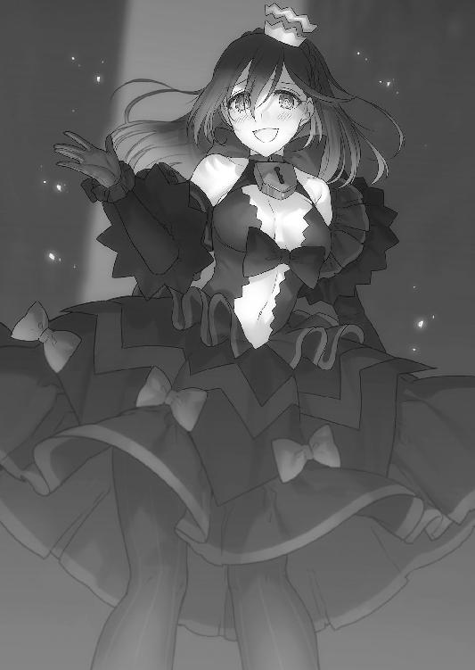
「それ以上......明の声で囀るんじゃねえ！」
京夜は耳を塞ぐ代わりに、軽機関銃でネロを思い切り振り払った。しかし機関銃は空を切り、何も無い空間に放り出される。ネロの姿はすでにそこには無かった。
《わかったらシャキッとしてよね～ご主人～。愛しい愛しい複製のためにも～》
「......くっ......！」
《これでも私はご主人様のことが好きで好きでしょうがないんだよ？ でも仕方ないんだ、ネロはそういう風に出来ているから。それだけは覚えておいてよねん♪》
「消え失せろ！ クソ銃が！」
怒鳴ると、ようやくネロの笑い声が頭の中から消えて行った。
京夜は肩で息をしながら地面に落ちた写真を拾い上げ、一度だけ皆の顔を見てから、すぐに懐にしまい込んだ。
そして、辛そうに下を向きながら、ポケットに両手を突っ込んで歩き始めた。
その姿に、かつて胸を張って仲間と歩いていた頃の面影は無い。
背を丸め、暗い路地を一人で歩く姿は、酷く寂しげだった。
第三章 ラフメーカー
＊＊＊
桜花達が食事を終えたのと同じ頃。
幻想教団、純血の徒のキャンプは地下鉄の駅に設置されており、灰色都市の中央部を占拠していた。ボーダーライン侵攻作戦で幻想教団が有利だったのは出だしだけだった。灰色都市は元々審問会の手の届かない無法地帯であったので制圧は容易だったが、境界線からはそうはいかなかった。審問会の布陣の敷き方は迅速であり、まるで想定済みのようだった。地下を利用できると言っても、数の上では審問会側の有利。その上、市街戦闘は審問会の方が手慣れていたのである。
幻想教団側は徐々に数を減らし、残存兵力はすでに半分を切っていた。
地下鉄のキャンプには、ところ狭しと純血の徒達が肩を寄せ合っている。
現在、彼らの兵糧は底をつきかけている。転送装置から救援物資が一切届かなくなってしまったのだ。内側の世界、ひいては純血の徒を外側へ送り込んだエリザベーテに何かあったのではないかと皆が噂していた。
そんな意気消沈している兵士達の中を、一人の女性が静かに歩いていた。
歳は若い。クリーム色の髪を揺らしながら背筋を伸ばし、傷ついた兵士達を案ずるような悲痛な表情を浮かべている。
純血の徒のローブを羽織りつつも、他の者とは違い人間味のある女だった。
「......ミムラス様......」
「ミムラス様だぞ......！」
兵士達はその女性をミムラスと呼び、羽織っていた毛布を捨てて立ち上がった。
ミムラスは疲弊した兵士達のそばに寄って、一人一人傷を癒していた。
簡単な治癒魔法だが、独自にアレンジされた術式により効果は強い。傷ついた兵士は裂傷部に彼女の温かい手を当てられただけで、涙を浮かべていた。
「きっと転送装置が故障でもしたのでしょう。物資さえ届けばきちんとした治療が受けられるわ。今はこれで我慢してね」
「す......すみません......っ、ミムラス様のお手を煩わせて......自分が不甲斐ないです」
まだ若い兵士が涙を拭うと、ミムラスは優しく微笑んだ。
「あなた達は少ない物資と戦力で立派にやっているわ。謝るべきは私達古代属性保持者よ......魔導竜騎兵の準備に手間取って、まともに戦闘にも参加できていないのだから」
ミムラスが言うと、兵士は恐れ多いのか何度も頭を下げながら涙を流した。
彼の頭を優しく撫でて、ミムラスは立ち上がる。
そして、疲弊した兵士達をもう一度眺めながら声を張った。
「ついさっき兵器の準備が整った！ 我々は数日の間に敵陣へ総攻撃を仕掛ける！ みんな、もう少しの辛抱よ......！ 次の攻撃が成功すれば灰色都市は完全に制圧できる......そうなれば無能者達に私達の脅威は十分に伝わるだろう！」
兵士達が感嘆の声を上げ、希望が表情に宿った。
ミムラスは腰に手を当てて、凜々しく皆へ告げる。
「エリザベーテ様はさらなる大部隊をヨーロッパシェルターから送り込むと約束してくれた。灰色都市の戦闘が落ち着けば、あなた達は家に帰れるはず。勝利の日は近いのよ！」
周りから歓声が上がり、兵士達が決起する。
ミムラスは歓声の中を歩く。
「ミムラス様......少しお話が」
と、そこへ下士官の一人がそばへやってきて、ミムラスに耳打ちした。
「どうした？」
「ミムラス様にご相談するほどのことでもないかと思ったのですが、報告はすべきかと」
下士官の顔色を見て、ミムラスは少しだけ顔を険しくした。
「言ってみなさい」
「ハッ、ご覧の通り、特に若い兵士の疲労は心身共に蓄積しています。中には、ＰＴＳＤになった者も」
「......仕方のないことよ。皆、戦争の経験なんて無いのだし、無能者が相手といえど人を殺すということに慣れるものではない......その者達には私が直接話してみよう」
「いえ......そうではないのです。実は......」
下士官から話を聞くと、ミムラスの表情はさらに険しくなった。
地下鉄の駅員室では、痛々しい打撃音が響いていた。
三人の兵士を引き連れたミムラスは、駅員室のドアまで行くと思い切り開け放った。
「何をしている......！」
ミムラスが戦慄くような声を上げると、中にいた兵士達が顔を上げた。
駅員室は血のにおいで充満していた。
四人の精鋭により、若い兵士への暴力が行われていることが一目でわかる。
少年兵の胸ぐらを摑み、拳を振り上げている男へミムラスは詰め寄った。
「ミ、ミムラス様......いかがされたので？」
「貴様......！ これはどういうつもりだ！」
「落ち着いてくださいっ......我々はただ、敵前逃亡を働いた者へ折檻を」
精鋭は少年兵から手を離し、強く狼狽した。
「こいつらのような臆病者達の恐怖心は周りに伝播します。本来なら処刑するのがセオリーのはずでは......？」
「戦力を削いでどうする!? 怖れを抱いた兵士は殺す!? 冗談ではないぞ！」
「し、しかし、純血の徒である我々に逃亡は許されません！ この連中は味方を見捨てて逃げたのですよ!? こいつらの血はもはや純血ではありません、濁っているのです！」
必死で説明する男へ、ミムラスは蔑むような怒りの視線を向けた。
「そんなことどうでもいいのよ。純血がどうだとか、そういう固定観念は捨てなさい」
「......ば、馬鹿な」
「戦場では誰も彼も一緒よ。流れる血は混ざり合って純度なんてわからなくなる。今は無駄にできる人員なんて一人もいないということがわからないの？」
ミムラスは精鋭から離れると、駅員室の端で縮こまる兵士達の前で膝を床についた。
「ミム......ラス......様......申し訳......」
「しゃべらないでいい。すぐに傷を治してあげるわ。そしてまた、一緒に戦ってほしい」
治癒魔法を兵士にかけ始めると、兵士は顔をくしゃくしゃにして唇を震わせた。
「......も、もう......戦いたく、ありません......」
兵士が弱音を吐くと、背後の精鋭が怒声を張り上げた。
ミムラスは精鋭を睨んで止めると、兵士へ微笑みを浮かべた。
「私もそうよ。誰だってこんな戦い、早く終わればいいと思っているわ」
「......っ......ぅぅ」
「でも、生きて帰るためにはあなた達の力が必要なの。だから私に話してみて、あなた達に何があったのかを」
ミムラスが穏やかに諭すと、逃亡兵達はぽつぽつと語り始めた。
大半は、殺した敵兵の濁った瞳が頭から離れない、眠っていても耳元で銃声が響いている、周りの味方が全滅していて敵に包囲されてしまった時のことが忘れられない......など、典型的な戦場でのトラウマが原因だった。
聞き終えたミムラスは一人一人に言葉による癒しを与えた。
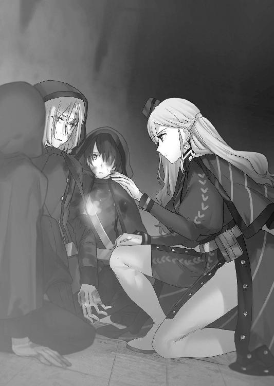
兵士達の顔色や身体の震えは、彼女の言葉だけで徐々に収まっていく。
精鋭達も彼女の言葉には心を打たれたのか、黙って聞いていた。
兵士達はこぞってミムラスのそばへやってくると、涙を流しながら彼女へ頭を下げた。
「自分が情けないです......！ 僕はもう迷いません！ ミムラス様のためだったら、最前線でもどこへでも行ってみせます！」
「俺も、目が覚めました......っ、何があろうともう逃げないと約束します！」
十人近い兵士達が、全員ミムラスへ頭を垂れる。
ミムラスは強く頷き、立ち上がって腰に手を当てた。
「気持ちは嬉しいけど、心の傷はそう簡単に癒えるものでもないわ。あなた達はここで休みなさい。今は膠着状態が続いているし、しばらく大きな作戦は無いから」
慈悲深い言葉に、ますます兵士達は涙する。
ミムラスは彼らに笑顔を向けながら、言った。
「恐怖を抱くことは普通のことよ。恥じることはない。でもせめて、仲間といる時は笑っていなさい。どんなに絶望的な状況でも、笑顔さえあれば──」
ミムラスが『笑顔』と言った、その時だった。
「ひ、ひぃ......ぅ......ひあああああああああああああっ!!」
部屋の端にいた男が奇声を上げてミムラスから距離を取ろうとした。
男は頭を搔き毟り、部屋から這い出ようと転げ回っている。
ミムラスが驚いていると、立ち直った兵士の一人が気の毒そうな顔をした。
「あいつはたぶん、もうダメです。完全に壊れてしまっていて......」
「何があったの？」
「それが......あいつがいた部隊に、ラフメーカーが援護に来たらしいんです」
ラフメーカーと聞いて、ミムラスは顔をしかめた。転げ回っていた男は机や椅子に身体をぶつけ散らした後、身体を丸めて自分の腕に嚙みついた。
「わ、わ、わ、わら、笑えって......言ったんだ、お、お、俺達に......て、てて敵味方関係なく......みんな笑えって言ったんだ......みみ、みみみんな笑ってた......笑いながら泣きながら吐きながらこ、こここ殺し合ってた......わらって泣いて、わ、わら、わら、は、えは、えははははははは」
ミムラスは男が笑い始めたのを見て、絶句する。
「えははははやだやだあははははもう笑いたく、笑えたくな、えは、へははははははは」
人形のように笑う男を見ていられず、ミムラスは顔を背けた。
「......ラフメーカーの所在は摑めていないのか？」
駅員室まで連れてきた下士官に、ミムラスは問うた。
「奴は本作戦で唯一、単独行動を許された魔女です。実際に姿を見た者すらいません。エリザ様の後ろ盾がある以上、何を言ったところで戦い方を改めることはないでしょう」
「奴の居場所がわかり次第私に報告しろ。エリザ様は何故、あのような輩を我々に同行させたのか......」
歯がゆそうに爪を嚙んで、ミムラスは駅員室から出て、線路を走る簡易トロッコへ乗り込んだ。
「お前達はキャンプへ戻りなさい。くれぐれも、ラフメーカーのことは他の兵達へ口外しないように頼むわよ」
「「ハッ」」
敬礼した兵士二人と下士官へ、ミムラスは優しく微笑んだ。
「苦労をかけてごめんなさいね。何かあればすぐに私へ報告しなさい。たいした力にはなってやれないかもしれないけれど」
そう言い残して、ミムラスはトロッコに乗って去って行く。
残された兵士達は、去って行くミムラスの姿を見送る。
遠ざかっていく彼女を眺めながら、兵の一人がふにゃっと顔を崩した。
「聖母というのはああいう方のことを言うのだろうな......不謹慎だけど、前の副隊長からミムラス様に代わってくれてよかったよ」
「だな......優しいし、あったけーし、かっこいいし、何より美人だし......歳、いくつなんだろう。俺なんかより若く見えるよなぁ」
デレデレとした態度の兵二人に、ミムラスを見送った下士官がゴホンと咳払いをした。
慌てて兵士二人は直立する。
「上官に対して欲情する馬鹿共がいるようだが......？」
「「よ、欲情など、決して！」」
「吞気な貴様らと違って、ミムラス様は心を痛めておいでだ......先の戦いで、受け持っていた隊を失っている。我々があの方を支えねばならんのに、貴様らときたら......」
そう言う下士官の表情は、他の純血の徒達と違い、穏やかなものだった。
下士官は去って行ったミムラスの方を見つめながら、静かに目を閉じる。
（馬鹿げた戦いかと思っていたが......もしかしたら、本当にこの戦いに生き残ることができるかもしれんな。統制に躍起になる者が多い純血の徒の中で、彼女だけが正気を保っている。立派なお方だ）
純血の徒といえども、誰も彼もがエリザベーテのように混血や無能者を淘汰しようと思っているわけではない。確かに魔女狩り戦争の因縁で無能者を憎む者が大多数だが、中には『高貴なる純血者のみが弱き者を守り、世界を正しく導ける』という信念を持つ者もいた。本当に少数ではあるが、この戦いに疑問を抱いている者もいる。自らの血筋のせいでウェストサイドに拠る以外に選択肢が無いものもいるのだった。
この下士官もその一人だ。
（あのお方ならたとえ敗北したとしても、仲間を守るための最善の方法を取ってくれるかもしれない）
淡い希望を抱きながら、下士官は兵士達を連れてキャンプへと帰って行く。
その間も、ラフメーカーに遭遇した兵士の絶叫は、絶えることなく地下鉄に響いていた。
＊＊＊
一週間後、桜花達雑魚小隊は、順調に騎士団の援護を行っていた。最初こそちぐはぐだったが、今は本調子を取り戻し、適格な連携も行えるようになっている。
「鳳！ 三時の方向、時計塔からスナイパーが狙っています！」
うさぎが走りながら無線に叫ぶ。指示した時計塔は死角になっており、本来ならば絶対に見ることができないはずだったが、うさぎの指示は的確だった。
《了解！》
桜花が身体を反転させて、ヴラドの杭を時計塔へ直撃させる。スナイパー本人を狙わずとも、物理特化杭のワラキアを連射することで、桜花は時計塔自体を破壊した。
時計塔の瓦礫が敵の部隊を巻き込む。防護魔法を使用していたため死んではいないだろうが、戦闘復帰は無理だろう。
《ナイスようさぎ》
斑鳩の賞賛の声を聞きながら、うさぎは透明なゴーグルを指で押し上げて、こみ上げてきた吐き気にえずいた。
「視界が三つ増えるというのは......結構酔ってしまいますわね」
《慣れるまで時間がかかるのは仕方ないわ。私はオンラインＦＰＳゲームでオペレーターやってたから慣れてるけど》
「ゲ、ゲームって......」
《最近のゲームってすごいのよ？ 馬鹿にできないわ》
気持ち悪くて顔を青くしていると、羽音のような音色を奏でながら三つの球体がうさぎのそばに飛んできた。球体は妖精のようにうさぎの周りをくるくる回っている。
見た目、空を飛びまわる目玉だけの機械生命体である。実に不気味だった。
これは斑鳩が作成した無人偵察機だった。戦闘機能は無いが、強度が減った分小型で敵の視界に入りづらく、なおかつ操作は斑鳩の脳に直結しており、彼女の思考で動いている。斑鳩は、三つのセントリーボットを同時に操るという人外じみたことをやってのけていた。
《二階堂の『愚者の火』を参考にさせてもらったの......ふふ、可愛いでしょ？》
ブンブンと羽音を立てながら、セントリーボットがうさぎにちょっかいを出す。
主に乳をつんつん突き始めた。
「やめてくださいですわっ！ なんですのこのセクハラロボットっ、シッシッ！」
《あんっ、強度無いんだから本気で叩くんじゃないわよ。結構敏感なの......痛くしないで？》
「え......感覚まで繫がってるんですの!?」
《そんなことできるわけないじゃない冗談に決まってるでしょ》
「ぬなーっ！」
からかわれて激怒するうさぎの声が無線に響く。
《お前達！ 戦闘中だぞ、真面目にやらんか！》
インカムから桜花の怒声が響いて、うさぎは慌てて戦闘に集中した。
空中で戦闘中の桜花は、いつものノリになってしまったうさぎと斑鳩にため息を吐いた。
戦場に慣れたのはいいことだが、慣れすぎるというのも考えものだった。第七中隊からの信頼を得るためにがんばってきたが、最近では小隊室で行うようなアホなやりとりを見られてしまって、陰で笑われている気がしてならない。
ともあれ、こういう空気が小隊の実力を発揮するのに最適だというのもまた事実。
自ら危険に突っ込まず騎士団の援護に回ることで、ある程度の安全も確保できている。お互いに離れすぎず、前衛の桜花、後衛のうさぎ、偵察の斑鳩の連携が上手く回っていた。三人でもなんとかなるものである。
いずれ審問会側が敵殲滅のために総攻撃を仕掛けるだろうが、その頃には敵の数は今よりも減っているはずだ。不安要素の京夜は監視の役割をきちんとこなしているとは思えないが、こうしてきちんと戦闘に参加しているのだから、近況を報告されても理事長に文句を言われることは無いだろう。
（......この戦いを生き抜けるかもしれない。希望が見えてきたぞ）
だが、その希望はすぐに揺らいだ。
全隊通信に戦慄が走る。
《敵機動兵器確認──英雄だ......！ 繰り返す、ポイントＤ３に英雄が出現した！》
吞気に漫才を繰り広げていたうさぎと斑鳩が息を吞むのが聞こえ、桜花は制空権を確保すると同時に眼下の廃墟群に目を凝らす。
嫌に静かで、銃声一つ上がらないかと思われた、その時。
辛うじて立っていた廃ビル群が轟音を立てて一列に倒壊した。
桜花の顔が青ざめる。ビルが倒れた場所はうさぎがいる場所に非常に近い。
「ヴラド！」
《この異様な魔力の波......英雄だ。単騎であるところから察するに、護送作戦の折に出現した消耗品共とは異なるはずだ。以前相まみえたアーサー王クラスの者であると考えるのが妥当であろう》
桜花はマントから魔力を噴かせて、うさぎのいる場所へと急いだ。
守っていた通りのビルが倒壊したことで、騎士団の援護を行っていたうさぎは放心してしまった。
また死んだ。一瞬で奪われてしまった。
さっきまで目の前にいた騎士団達が、ビルの下敷きになってしまった。
うさぎの足先から、じわりと恐怖と自責の念がわき起こってくる。
その時、全滅したかに思われた味方の隊がいた場所から、声が上がった。
「くそっ、どうなってやがる......おい、生きてるか!? 動けるか!?」
「......ダメだ......足が潰されちまった......」
「こっちも、腕をやられた......」
生き残った三名の騎士団が負傷した身体を引きずって瓦礫の陰に身を隠していた。
無傷の一名が足を負傷した者を肩に担ごうとした時、
ガシャリと......重くるしい足音が彼らの耳に届いた。
前方、ビルの瓦礫を乗り越えて、巨人のような巨体が姿を現す。漆黒の装甲は無機質で、まるでざらついた墓石のようだ。その墓石のような装甲の表面には、魔力の侵食の痕跡と見受けられる赤い紋様が浮かび上がっていた。
英雄──魔導竜騎兵と呼ばれる敵軍の新兵器。
自我の無い、かつてこの世界で名を轟かせた勇者の残骸である。
──オオオオオオオオオオオオオオオオオオオオオオオオオ！
小高く積み上げられた瓦礫の上で、英雄が咆哮する。
その姿にかつての栄光や雄々しさは無く、怒れる憎悪のみが具現されていた。
ただの咆哮にあらず。英雄から放たれた音の波は、その場にいた全ての者達へ計り知れない恐怖を与えた。
「......ひっ......」
うさぎの身体が竦み上がる。騎士団の三人も戦意を喪失し、戦うことを放棄した。英雄の赤くギラつく機械仕掛けの瞳が、血管を思わせる筋を浮かび上がらせてぎょろりと騎士団の三人を捉える。
「に......逃げ......ないと......」
うさぎが怯えを口にしながら後ずさる。
不意に、自分が口にした言葉が頭の中で蘇った。
家族に、胸を張って復讐を果たす。自分は立派になったのだ。もう自分のことを出来損ないなどと言わせない。胸を張って、西園寺の人間に見せつけてやるのではなかったのか？
このままじゃ家族どころか──タケルにだって顔向けできない。
「は......ぅぐ！」
うさぎは歯を食いしばり、後ずさりしようとした足を前へ踏み出した。
アンチマテリアルライフルを構えたままうさぎは英雄へ向かって走り出した。
《ちょ、ちょっとうさぎ!? あんた何考えて──》
斑鳩の制止も振り切って、うさぎは引き金を絞った。跳ね上がる銃身に翻弄されながらも、うさぎは無理矢理得物を押し沈めて照準を即座に合わせた。
再び射撃。合計三発の弾を発射すると同時に、うさぎは騎士団の三人の元へ滑り込んだ。
そして瓦礫の上にバイポットを展開。銃身を固定させると、再び射撃。
救援にやってきた小さな少女の姿に、騎士団の三人は呆けた顔を向けた。
「お、お前......」
「仲間を連れて早く逃げてくださいまし！ ここはわたくしが請け負いますわ！」
いきなりやってきてライフルをぶちかましている少女に何も言い返せず、騎士団は言われるがままに足を失った仲間を担いだ。
「すまねぇ......恩に着るぜ！」
一言礼を言って去って行く騎士団を背にしながら、うさぎは敵のダメージを確認する。
ビルの瓦礫の上に立つ英雄は、装甲に傷一つついていなかった。
それどころか着弾時の衝撃すら身に受けておらず、何もかも弾いていた。
「っ、全然効いてませんわね......！」
《......あと一日あれば新兵器完成したんだけど、それにしたって異常な防御力ね。支給品でも装甲車の装甲くらいだったら貫通できるんだけど》
真横で羽音を立てるセントリーボットからの映像を見て、斑鳩が分析する。
うさぎはこれ以上の攻撃は無駄だと判断して、さっさと撤退しようとした。
まったく同じタイミングで、敵のレールガンがこちらへ向く。
恐怖だとかピンチだとか、逃げたって無駄だとか、そんなことを考えても仕方が無い。馬鹿をやってしまったのだから行動あるのみ。
うさぎは全力で地を蹴ってその場から退避した。
大丈夫。必ず助けにやって来る。
できるだけ距離を取れば、そうすれば、きっと──
「《伯爵の牙》ッ！」
──きっと、信頼できる仲間が駆けつけてくれるはずだから。
英雄の頭上。脳天を貫くようにして、巨大な真紅の射突杭が炸裂する。
衝撃により周辺一帯の瓦礫は吹き飛び、駆け出したうさぎも暴風に吹き飛ばされそうになっていた。
《伯爵の牙》を直撃させた桜花は、英雄から距離を取って地面に着地した。
「間に合ったか！ やはり近くにいて正解だった......！」
《安堵している暇などない。見るがいい》
ヴラドの言う通り──敵は無傷だ。
あれだけの破壊を身に受けても、身体を捩らせもしなかった。
「あそこまでの防御力を持つ魔法はそうそう無いはずだが......」
《否、魔法ではなく呪いに近い......草薙キセキの特性と似通った代物だ》
不死と伝えられている英雄は何人も名が残っているが、治癒ならまだしもここまでの絶対防御を持つ者はそう多くはない。
防御が魔法じゃないとするならば、ヴラドの対魔特化杭『ツェペシュ』は通用しない。
（絶対防御など実現不可能......必ず何か弱点が存在するはずだ）
英雄はかつて無敵と呼ばれた人物達だが、彼らはすでに死んでいるのだ。
アーサー王がそうであったように、この敵の不死にも穴があるのは間違い無い。
（──まずは正体を明らかにする！）
桜花は両腕の肘に杭を展開させて、対峙する英雄へ襲いかかった。
背中とふくらはぎから魔力を噴射して、ホバリングのように一気に地面を滑って英雄の懐へ入り込む。
そしてもう一撃、敵の腹部へ牙を放った。けたたましい衝撃音と瓦礫をなぎ倒す余波が周辺一帯へ広がったものの、装甲には傷一つつくどころか後退すらしていない。
桜花は続けて牙を連射する。格闘の要領で連続で射突杭を撃ち放ち、身体のどこかに弱い部分が無いかを確かめようとした。
敵の動きはそこまで素早くはない。魔導竜騎兵と言っても所詮身体は機械。
スピードは桜花の方が圧倒的に──
「──ッ！」
明確な殺気を感じて身体を沈ませると、桜花の頭頂部数センチのところを鋭い刃がすり抜けた。夕焼け色の髪が一房切り裂かれ、宙を舞う。
直後、遥か遠方の廃ビルまでもが真っ二つに両断され、倒壊した。
「......は？」
さすがの桜花も乾いた笑いが漏れた。まるで遠近を無視したかのような斬撃。
桜花のいる場所から倒れたビルまでは、実に一〇〇メートル近く離れていた。
《気を抜くなたわけ！ こやつ腕は確かな上、得物の領域は見えている範囲よりも遥かに広い！》
加えてあの切れ味。まるで豆腐でも切るかのようにビルを真っ二つにした。
あんなものを喰らえばただで済むはずがなかった。
《形はレールガンだけど剣としての機能が向上してる。前に戦った奴のものより性能はいいはずよ。つまり、斬ってよし撃ってよしってこと》
斑鳩が軽い口調でそんなことを言ってくる。
「っ、あのリーチで射撃もできるのかっ、何の冗談だ！」
改めて英雄の脅威性を思い知る。
敵の斬撃と射撃が始まり、桜花は回避と並行して攻撃を繰り出すことにした。
動きが鈍いというのは誤りだ。機械の身体でありながらかなりのスピードで桜花へ攻撃を繰り出してくる。こちらから攻撃をしても相手は無傷。衝撃すら受けつけない。
だが、桜花は冷静に相手の動きと特性を分析していた。
《射撃は見かけ倒しだろう。一点集中型で濃度は高いが、エクスカリバ─ほどの破壊力と範囲は有していない。斬撃のリーチと切れ味が最大の特徴と言ったところか》
（加えて絶対防御......）
桜花は頭の中の情報を整理し、該当しそうな英雄を検索する。
嗅覚を鋭くさせて、英雄から発せられている魔力の匂いを調べた。
（微かだが、血のにおいがする）
《人のものではない。これは──竜だ》
ヴラドの分析を耳にして、桜花はついに敵の正体を見抜いた。
切れ味。無敵の防御。そして竜の血の香り。該当する英雄は一人しかいない。
「ジークフリート......！」
得物はＳクラス魔導遺産『バルムンク』で、恐らく間違い無い。
斬撃にこれだけのリーチを発揮していたという記録は無いが、敵の正体がジークフリートであるのなら──この英雄を倒すのは容易い。
「西園寺、聞こえるか？」
《ええ、すでに見えていますわ。指示を》
命令を望む声が聞こえてくる。
桜花は敵へ牙を放つと同時に、簡潔に言った。
「──背中を狙え」
《了解》
うさぎの冷静な声が聞こえた瞬間、敵の背後、瓦礫の陰で銃口が光った。
発射された対物ライフルの弾が、空気を押し潰しながら敵の背後に迫る。
英雄はうさぎの殺気を察知したのか、上半身のみを反転。腰部から上半身を独立駆動させてうさぎの放った弾丸を弾いた。
背中を守る時の反応速度が異常だった。英雄にとって背後が弱点であることの証明だ。
英雄ジークフリートは、邪竜ファーフニルを討伐し、その血を浴びて不死を得たという。しかし彼の背中に竜の血は届いておらず、後に背中を貫かれ絶命したと伝説にあった。
背中を守っている。それが確認できただけでも重畳だった。
ターゲットをうさぎへ変えて、英雄が障害物ごと彼女を両断しようとしたその時、
真紅の魔法陣を展開させた桜花が、英雄の背中一点へ向けて足を踏ん張った。
「──ハァァ......ッ！」
桜花は体内の血流を加速させて反射速度と運動速度を向上させる。心臓にあまりにも負担がかかるためタケルの掃魔刀ほど連発はできないが、一瞬だけで十分だった。
左足は前、右足は後方へ。狙いを定めて、上半身ごと右腕を振りかぶる。
両腕に装着されていた射突機構は一瞬霧散し、右腕にのみ再構築された。
出現したのは右腕の巨大なパイルバンカー。
一点集中された魔力が肘部に巨大な杭を発生させる。
そして次の瞬間、桜花は射突装置から濃縮された『赤夜』属性の魔力射突杭を射出した。
杭は英雄の背中の中央へ直撃。
五〇メートルはあろうかという巨大な杭が英雄の身体を一気に貫いた。
桜花は、杭に貫かれてもがく英雄をそのまま真上へ持ち上げる。
「《逆十字磔刑》！」
桜花が魔法名を告げた瞬間、英雄の体内から夥しい数の杭が飛び出した。
天高く掲げられた英雄の亡骸は弾け飛び、跡形もなく吹き飛んだ。
桜花は英雄の破片が降り注ぐ中、腕を横薙ぎに振るって魔女狩り化を解除した。
「......くっ」
たまらず膝をついて目眩に首を振る。
《見事だ......が、本契約を済ませたとて、自らの血液のみを魔力に変換するのは辛かろう。幸いここは戦場、余るほどの血で溢れているぞ？》
消耗している桜花へ、ヴラドがえげつないことを勧めてくる。桜花は首を横に振った。
「断る......それだけは私のプライドが許さん」
《............》
桜花の譲らない態度に、ヴラドは黙った。
いつも「強情だ」だの、「反抗的な態度だ」だの悪態を吐いてくるヴラドだったが、今日はやけに大人しかった。やはりミスティルテインにやられたことで調子が悪いのだろうか？ 桜花が少なからずヴラドのことを心配に思っていると、背後からうさぎが走ってきて桜花へ肩を貸した。
「......すまないな、西園寺には助けられてばかりだ」
「何を言ってますのかしら。わたくしには英雄の倒し方なんて見当つきませんでしたわ」
弱々しく笑って、桜花はうさぎに体重を預ける。
遠くから騎士団の大部隊がやってくるのが見えた。うさぎが身を挺して助けた騎士団達もその中にいる。中隊が総力を挙げて援護に来てくれたのだろう。
うさぎが彼らに事情を話し、英雄を倒したという事実を伝えると、皆から歓声が上がった。桜花は救護車に乗り込みながら、うさぎを賞賛する中隊員達を眺めた。
（これで少しは受け入れてもらえるだろう......）
そう思いながら、桜花は静かに目を閉じるのだった。
ジークフリート討伐から三日後。
雑魚小隊の中隊での立場は確実にいい方向へ向かっていた。英雄を単独で討伐したことにより、小隊の力が審問会会長の贔屓ではないことを証明できたのが大きい。
「うさぎちゃん、背小さいんだからもっと食べな」
食糧配布係が、実に不味そうなスープやオートミールを山盛りでトレイに盛りつけてうさぎに手渡した。
「こんな不味いものたくさんは食べれませんわよ！」
配給係の前でプンスカするうさぎを、周りの騎士団達が笑う。
「さっすがいいとこのお嬢様だ。舌が肥えていらっしゃる」
「うさぎちゃんには戦場は似合わないけど、射撃の腕がすごいのはいいもん食ってるからかね？ 何食ったらあんなバケモノ銃を扱えるんだ？」
「食べなきゃやってけないわよ～。栄養あるんだし、贅沢言うんじゃありません」
後列に並んで配給を待っている連中がからかうと、うさぎはふんすと鼻息を荒くして簡易キッチンの裏手に回った。
そしておもむろに配給係からエプロンを奪い取った。
「栄養があっても美味しくなければ力が出ないんですのよっ。もういいですわ。ここにある食材でわたくしが皆さんに料理を振る舞って差し上げますわ！」
うさぎを中心に笑い声と歓声が起こる。やれやれーと囃し立てるギャラリーに、うさぎはやる気に満ちた顔で料理に取りかかっていた。
桜花はそんなうさぎを遠目に見ながら、薄く微笑んだ。
続いて、今度は整備班のいるテントの方を見やる。
斑鳩が銃器の山を前にして、鍛冶師達と魔改造について話し合っていた。
「──このＰＤＷは欠陥持ちよ。マガジンの作りが雑だから、給弾不良が発生しやすいの。最新の特殊加工弾が撃てるから重宝されているし、旧式よりは威力も貫通力も優れているけど、手を加えないと使えたものじゃないわ」
斑鳩が作業机で銃を片手に持ちながら、鍛冶師達に銃の欠点を話している。
鍛冶師達は神妙な顔つきで斑鳩の話に相づちを打っていた。
「この作戦で初めて実戦投入されたからなぁ。テストも不十分だったらしいのによく採用したよな。アホなプライドなんか捨てて、素直にアルケミストに外注すりゃいいのに......開発部は何やってんだか」
「給弾不良を解決するのは無理だよね。弾倉の設計からやり直さないといけないし。今回投入されてるのだけでも二〇〇挺くらいあるよ。加工弾もすごい余ってる。やっぱり無用の長物かなぁ。反動も少ないし、威力もいいんだけどねぇ。デザインもセクシーだし」
鍛冶師二名がそう言うと、斑鳩は人差し指を立てた。
「境界線の検問所は銃の入れ替えが行われたばかりだから、旧式のバリエーションがかなり大量に残っているはずよ。それを運んでもらえばなんとかなるわ」
「てことは、旧式使うってこと？」
「旧式のままじゃバレルの強度が柔すぎて特殊加工弾を撃つと危険だし、弾がバラけるから敵の最新防護魔法に対応できない。だから、旧式のマガジンだけを検問所から取り寄せてもらいましょう。加工弾が適応されないのは旧式銃本体だけで、マガジンに加工弾が入るのは確認済み。旧式マガジン自体も、あの何のためについてんだかよくわからないでっぱりを少し削れば新型に装着できるわ」
「マ、マジ......？ さすがに急ごしらえすぎて危なくない？」
「加工弾自体は私から見ても画期的だと思うから、無駄にするのはもったいないわ。はいこれ、手を加えた旧式マガジン。新型にリロードさせて撃ってみなさい」
旧式マガジンを受け取った鍛冶師が、新型のＰＤＷに装着させて試し撃ちをした。
マガジン内の加工弾は全て問題無く射撃できた。
「......普通に撃てる。むしろしっくりくる」
「旧式を送ってもらって少し削るだけで撃てるようになるんだから、使わない手はないでしょう？ あとコッキングレバーも指を引っかけられれば十分だから、三分の一くらいに切り詰めておくといいかもね。長すぎて撃つ時にガチャガチャうるさいのよ」
「あのさ、斑鳩ちゃんってほんとに何者なの......？ 学生なのにどうして採用されたばっかりの新型ＰＤＷの欠陥や、その解消法まで知ってるの？」
「企業秘密よ」
斑鳩は斑鳩で中隊の兵器事情に貢献していた。不十分な物資と欠陥兵器でなんとかやりくりしていた中隊にとって、斑鳩の発想は少々ぶっ飛んでいるものの有益なようだった。
桜花はテント脇の灯油缶の上に座り、アルミ製のコップに入ったコーヒーを飲みながら、悴む手を温めた。
「......部下を救ってくれたそうだな」
休息していると、中隊長が桜花の横へやってきた。
桜花は立ち上がって敬礼をしようとしたが、中隊長に止められてしまう。
「休息に集中してくれて構わない。ただ礼を言いたかっただけだ」
「助けたのは私ではありません。あそこにいる西園寺うさぎです」
「......そうか、後で礼を言っておこう。しかし君がいなければ英雄を撃退できなかった。ありがとう、君は我々を救ってくれた」
中隊長に礼を言われて、桜花は若干バツの悪そうな顔をした。
「私はただレリックイーターを使っただけです......それに、私の力を発揮できるのは仲間の助けがあってこそです」
謙遜でもなんでもなく、桜花は事実を口にした。
「レリックイーターに選ばれたのは君だ。そして君はその力を正しく使用している。誇っていいことだと私は思うぞ」
寡黙そうな中隊長は桜花の顔をじっと見つめた。
「君のレリックイーター......確か、ヴラドと言ったか」
「ご存じなのですか？」
「......ああ。昔、少しだけ世話になった」
昔......とはつまり、前の契約者が中隊長の知り合いなのだろうか？
中隊長はため息を吐きつつ、静かに目を閉じた。
「できることなら、君達のような子供を戦闘に参加させたくはなかった。子供に頼らなければならないのは、偏に我々が不甲斐ないということの証だ......」
少しだけ申し訳無さそうに、中隊長は呟いた。
三五試験小隊を遊撃隊として前線に出ないように指示したのは、まだ子供である小隊メンバーを血なまぐさいことに巻き込みたくなかったからだろう。
恐らく彼は、試験小隊という制度自体に懐疑的なのだ。
中隊長は閉じた目を開き、深く息を吐いた。
「だが、今はそうも言っていられない状況になってしまった......今後の作戦は、君達にも正式に参加してもらいたい」
桜花は立ち上がって敬礼をした。
「隠密の部隊が敵の拠点を発見したと報告が入った。どうやら奴らは地下鉄のホームを根城にしているらしい。明日、攻撃を仕掛ける予定だ」
「地下......厄介ですね」
「明朝、敵の見張り交替の時間を見計らって精鋭部隊で地下へ侵入し、支柱にＣ４爆弾を仕掛け撤退する」
「爆破して地下鉄ごと潰すのですか？」
作戦内容に桜花は顔を強張らせた。灰色都市の地下鉄は戦前のものであるため、非常にもろい。支柱に爆弾をしかければ簡単に崩落するだろう。
だが、危険を伴う作戦な上に、非人道的でもあった。
「......仕方あるまい。拠点には危険な古代属性保持者や魔導竜騎兵の倉庫があるという情報もきている......今は手段を選んでいられる時ではない」
危険な古代属性保持者と聞いて、桜花の頭にラフメーカーの存在が過った。
血が沸騰しそうになるのを無理矢理堪えて、桜花は冷静さをなんとか保つ。
「ブリーフィングは今夜〇時に行う。今日は早めに休んでおけ」
去って行く中隊長の背中へ敬礼しながら、桜花は拳を握りしめる。明日の作戦でラフメーカーと相まみえるかもしれないという可能性が、桜花の心をざわつかせた。
その焦燥感とも歓喜とも言えぬ感情を押しとどめる。
うさぎと斑鳩、そしてタケルとマリの顔を思い浮かべて、桜花は深く息を吐いた。
「............大丈夫だ」
一人ごちて、桜花は座り直してコーヒーをすすりながら空を見上げた。
不意に、
《......前の契約者も、よくそうして空を見上げながら「大丈夫だ」、などと呟いて、自分を保とうとしておったわ。汝同様に弱い人間ではあったが、射撃の腕だけは確かだった》
頭の中で、ヴラドの声が響いた。普段ならば、魔導遺産風情が勝手にしゃべるなと怒鳴ってやるところだが、不思議と今はそんな気分にならなかった。
ヴラドの声は太く重いが、不思議と心を落ち着かせてくれる魅力がある。
こうして嫌悪せずに落ち着いて聞くと、何故か懐かしい気持ちにさせてくれるのだ。
桜花はそもそも魔導遺産というものがいかなる存在なのかいまいち理解していない。ヴラドは声音からして男性だし、タケルのラピス、京夜のネロは女性人格のようだ。鐵隼人のカリギュラも人格は女性だと聞いたことがあるが、しゃべるのかすらわからない。
そもそも魔導遺産の人格の原理はよくわかっていない。
以前ほどヴラドに対して嫌悪感を抱いていない桜花は、何気なく尋ねる。
「......ヴラド、お前のことを話してみろ」
《ほう、どういう風の吹き回しだ？》
「ただの暇つぶしだ。つき合え」
《......精神安定剤に余を使うか。まあよい、何が聞きたいのだ？》
自分の精神状態すらお見通しなことを不愉快に思ったが、今は怒る気にすらならない。
「そうだな......前の契約者には興味がある」
桜花が言うと、ヴラドは頭の中でため息を吐いた。
《......あやつの話か》
「問題があるのか？」
《否......構わぬ。禁則事項に触れない部分だけではあるが》
わずかに渋っているようだったが、ヴラドは大人しく主の要求を吞んだ。
《あやつは......そうな。融通が利かず、人づき合いが悪く、口べた、口よりも先に手が出る、他人に誤解を受けやすい》
前の契約者のことを言っているのだろうが、桜花にとって他人事とは思えない。
《......そのくせ信念だけは図太い。そしてその信念に振り回された挙げ句によく自滅する大馬鹿者であった。ありていに言えば汝によく似ている男だ》
「悪意を感じる。貴様の物言いに私は明確な悪意を感じるぞ。融通が利かない口べたの何が悪いっ、信念無くして異端審問官は務まらんのだっ」
《信念は復讐心を隠すためのものではないということを知れ。汝とは違い、かつての契約者は少なくともそれだけはよくわかっておったぞ》
ヴラドの言葉に桜花はぐうの音も出ない。
なんだろう。日頃辛く当たっていることへの腹いせだろうか。
《ふん......つまりはそういう男だ。異端審問官とはなんぞや。魔導とはなんぞや。敵とはなんぞや。そんなことをぐじぐじと考えながら苦悩するような男だった》
「......立派な人だったのだな」
《だがそれ故、組織の一部となるには向かなかった》
ヴラドの声音が変わったことに桜花は気づき、黙り込んだ。
《あやつは第零殲滅機動隊、エグゼの前隊長だったのだ》
「!? お前、エグゼの隊長のレリックイーターだったのか!?」
《何を驚く。余ほどの銃と比較すれば他のレリックイーターなど赤子のようなものよ》
燃費が悪い上に、反動がでかすぎて使い勝手の悪い奴が何を言っているのか。
あえて口には出さなかったが、桜花はヴラドの自画自賛に目を線にする。
《『レッドグレア』と、あやつは仲間内でそう呼ばれていた。汝のあだ名である紅蓮姫と同じく、不名誉な意味合いが強いな》
「......忌まわしい紅い光、か」
桜花はその姿を夢想する。巨大な二挺拳銃を持ち、炎の中に立ってこちらに背を向ける男の姿が、不思議なことにはっきりと想像できた。しかし、それだけ有名な異端審問官だったのなら桜花の耳に入っていてもおかしくはないはずだった。
《あやつは魔導に対して強い不快感を覚えていたが、ある事件を境にその認識を改め、現在の異端審問会に疑問を持つようになったのだ。『赤い蝶の虫籠』は知っておろう》
「？ ああ、もちろんだ」
体内幻器を持つ人間の人身売買を生業とした組織だ。魔女は子孫を残すことを禁じられているため、希少価値の高い魔女の子供を生産すれば高く売れるのである。
数年前にエグゼが壊滅させた組織だった。
《あやつは虫籠を壊滅させるために組織に潜入し、そこで一人の魔女に出会った。その魔女は子供を身籠もっておったが、子供には魔力が宿らず、商品として機能しなかった。殺される運命にあったのだ》
「............」
《あやつは......その魔女に必ず救うと約束した。だが、審問会から下った命令は、『虫籠の壊滅、及び商品の排除』であった》
「......まさか、利用されていた魔女もろとも殺せと命令されたのか？」
《さよう。商品......特に魔女から生まれた子供は洗脳教育が施されておったのだ。殺してしまわねば後々厄介になると上が判断したのだ。あやつはその命令に逆らい、救うことを選んだ》
桜花はヴラドの前契約者に敬意を払う。
命令に逆らうだけでなく、救うという行動に出たことに感銘を受けた。
《だが時既に遅く、あやつが駆けつけた時には、虫籠の連中が証拠隠滅のために商品を全て処分した後だった。救おうとしていた魔女も、事切れていた》
「............」
《あやつは単独で組織を壊滅させた。商品の子供も......幾人かは殺さざるを得なかった。無論虫籠は巨大であったが故、支部の一つを壊滅させることしかできなんだが......唯一の救いがあるとすれば、救おうとしていた魔女の子供が生き残ったことだ》
『赤い蝶の虫籠』と審問会は長い間戦いを続けてきた。実に二〇年に及ぶ歳月をかけて、鐵隼人の代でようやく決着がついたのである。
桜花もその抗争には参加していたため、虫籠の非道な行いはよく知っていた。
《そこからだ。あやつが審問会を内側から変えようと足搔くようになったのは......》
審問会は、時として納得できない決断を下す。英雄襲撃事件の時や、模擬戦トーナメントの時もそうだ。犠牲を厭わず、魔導を利用する面も持ち合わせている。
審問会には確実に闇があるのだ。
《あやつを慕う者は多かったが、上の命令に逆らい続けておればやがて孤立する。上層部には煙たがられ、果ては審問会の暗部に手を出したことで辞職を余儀なくされた》
「......その後、どうなったのだ？」
《死んだ。審問官を辞めてからすぐに、何者かに殺された。おそらく虫籠の残党であろう......連中はあやつに恨みを抱いていて当然だろうからな》
ヴラドの声は酷く平坦ではあったが、そこに悲しみが無いとは断定できなかった。
《無念ではあっただろうが、悔いなど微塵もなかったであろうと断言できる。あの者は、余の選んだ契約者なのだからな》
審問官をクビになったのだとしたら、契約は解除されていたはずだ。
ヴラドからは、無関係となった元契約者に対しての感情が窺える。
魔導遺産にも心があるというのは本当なのだろうと、桜花は思った。
《我が主、桜花よ》
不意にヴラドが桜花の名を呼んだ。
《余が契約者を選ぶ基準は──その者の気高さだ。余の求めるものは、気高き血なのだ。善か悪かが問題なのではない。己の信念に殉じ、貫徹する意志......それが余の求める気高さだ。あやつは曲がりなりにもその意志を貫いた。汝にそれができるか？》
「............」
《復讐などという執念に惑わされず、貫徹すると誓えるか？ 汝の魔を払う者としての信念は本物か？》
「............」
《汝の『大丈夫』......を、余は信じてもよいのか？》
問われて、桜花は下を向いたまま立ち上がった。
「生き残ったという魔女の娘は、今も生きているのか？」
《......ああ、生きている。幸せかどうかは知らぬが、恐らく健やかに育ったであろう》
「そうか......ならば無駄ではなかったのだな。その方の願いは、成就されたのだな」
桜花は空を見上げ、口を一文字に結んだ。
雲一つ無い空には、孤独な満月が輝いていた。
「形こそ違えど本質は私と同じだと思う。審問会に疑問を抱き、たった一人で戦っていたその人のことを......私は尊敬する」
《............》
「ヴラド」
満月に手をかざし、摑み取るように拳を握る。
「私は、大丈夫だ」
桜花は自信に満ちた笑みを浮かべて、はっきりとヴラドに告げた。
「志半ばで命を落としたこと、さぞや無念であっただろう。その無念、その信念......その紅蓮の意志は、私が受け継ごう」
《............》
「だから以前の契約者と同じように......私を信じてほしい」
桜花の要求に、ヴラドは黙り込む。数秒の間が迷いによるものなのか、それとも感慨によるものなのかは桜花には判別できない。
ヴラドは、結果として主の願いに応えた。
《誇りにかけて......汝の気高さを信じよう、我が主よ》
彼の答えに、桜花は満足そうに頷き、小さく笑みを浮かべた。
かつての自分ならば考えられないようなことだったが、契約を結んだ以上、ヴラドと自分が一心同体であることは事実なのだ。否定するよりも、まずは知ることが大事だと、桜花はタケルやマリから学んだ。
たとえ魔導の産物であろうと、ヴラドは命を預ける相棒なのだと......この時桜花は、初めてヴラドの存在を受け入れたのだった。
＊＊＊
桜花の魂に寄り添いながら、ヴラドは己が戒めに嘆く。
桜花への言葉に噓はない。彼女の気高さを信じているという言葉は、本当だ。
どこにも噓は無い。
ただ、ヴラドは全てを彼女に打ち明けたわけではなかった。
（許せ主よ。余は所詮、王の傀儡に過ぎぬ。真実を打ち明けることは決して叶わぬのだ）
迷いなく歩く桜花の中で、ヴラドは前の契約者と桜花の姿を重ねていた。
（因果なものだ。あやつの意志を継ぐ者が、よりによって汝とはな......）
まだ幼い主を見守りながら、ヴラドは苦笑する。
そして願わくばこの少女を裏切らずに済むようにと、誰にともなく祈るのだった。
第四章 復讐鬼
幻想教団『純血の徒』第二魔導中隊副隊長、ミムラス・ヴァレンシュタインは憂いを孕んだ表情で中隊指揮所へやってきた。
部下達を安心させるために救援が来ると言ったが、あれは全て噓だった。名前つきの英雄を連隊本部から寄こしてもらったが、初の出撃で敵のエグゼ隊員に撃破されてしまった。
いまだ内側の世界からの連絡は無く、ミムラスの中隊は地下鉄で孤立した状況にある。
連隊本部の指揮系統もぐだぐだ状態になっており、この戦いの敗色は濃厚だった。
「......失礼します」
ため息を吐きつつ、ミムラスは中隊長室のドアを開けた。
ドアを開ければ、中隊を指揮している男が、ランプの明かりの下で背を向けて座っていた。手紙でも書いているのか、古風な筆ペンの先をインクで濡らして文字を記していた。
「ミムラス、状況はどうだったかね？」
老人と呼んで差し支えない年齢の男は、ミムラスに尋ねた。
「......聞かれずともおわかりでしょう。兵の消耗はもはや限界をとうに超えています。絶望的と言って差し支えないでしょう」
嘆息しながら言うと、老人は手紙を書き続けながら整えられた髭を撫でた。
「つまり戦力として使い物にならないというわけだな？」
「はい。早急に帰還させ、治療と休息を与えてやるべきです。これだけの兵で数千に及ぶ審問会を抑え続けてきたのですから、彼らには相応の労いをかけてやるべきでしょう。エリザ様との通信はまだ途絶したままなのですか？ 物資の補給すらままならないのであっては、どうにも......」
「状況が変わったのだよ。内側で抗争があり、エリザ様は殉死なされたそうだ」
エリザベーテが死んだと聞かされても、ミムラスは動じなかった。
むしろスッとしたというような顔をしている。
「代わりの理事長が着任するまでは救援も補給も見込めん」
「......では、いかようになさるので？」
「結界発動を予定より早める。範囲内の敵をできるだけ駆逐し、外側に我々の領土を建設させるのだ。いずれ送られてくる後続のためにも、灰色都市は死守せねばならん」
ミムラスは目を細めて、考え込むように口元に手を当てた。
当初の予定では、灰色都市及び境界線の全てを即座に制圧し、聖域内のシェルターと同様の超強力な防護結界を張って敵の侵入を阻むことで、外側の世界に魔女達の領土を構築しようというのがこの侵攻作戦の目的だった。
予定よりも審問会の抵抗は激しく、陣地を敷くのも速かった。
防護結界の術式完了までの間に、陣地はほとんど奪い返されてしまっていた。
「偵察部隊が、敵の次の目標は我が中隊であるとの報告があった。いずれこの場所も敵が雪崩れ込んでくるだろう......上は放棄することに決定した」
「地下鉄を？ 隊を移動させるのですか......？ 負傷兵を運ぶための人員が足りません」
「いや......上の連中は、中隊自体を放棄すると言っているのだ」
老人の言葉の意味を理解した時、ミムラスは思わず怒鳴りつけていた。
「彼らを見捨てるというのですか!?」
「捨て置け。敵の戦力がここへ集中しているうちに全英雄、及び機械竜を起動させて範囲内に設置された敵キャンプを壊滅させるのだ」
「部下を囮に使うのか......！ 部下を置いて、我々二人だけで本部へ逃げると!? そんな決定を認めるわけにはいかない！」
「ウェストサイドの総意だ。逆らえんよ」
「っ、ならばあなただけ逃げればいい......！ 私はキャンプに残ります！ 仲間と共に戦って死んだ方がマシだ......！」
口調を荒らげて、ミムラスは老人にくってかかる。老人はゆっくりと椅子を回して振り返り、老眼鏡をデスクに置いた。目尻の皺は深く、まるで疲れの結晶のようだった。頰の瘦け具合と土気色の肌から、どこかに病を患っているのが一目でわかる。
老人は、悲しげにミムラスを見つめる。
我が子を哀れむ父親のように。
「上の命令で長年お前を預かってきたが......こういう未来もあったのだと思うと、無念でならんよ」
老人は背もたれに背中を預けながら天井を見上げた。突然意味のわからないことを言い始めた老人に、ミムラスは眉根を寄せた。
「......何の話です？」
「今のお前のことだよ。歪むことなくまっとうに育っていたなら、このように気高く......正しき純血として、美しく育っていたというのに......」
ますますわからなくなり、ついにボケてしまったのかと勘ぐる。
老人とミムラスはつき合いが長い。彼は孤児だったミムラスを引き取り、一人前の魔女として育ててくれた。あまり純血にこだわりの無いミムラスと衝突することは少なくはなかったが、このような卑劣な命令を良しとする人ではない。
「私はあなたのおかげでこういう人間になれたのです......！ あなたの背中を見ながら育ったのです！ だからお願いです......私の理想を裏切らないでください！」
ミムラスの必死の説得に、老人は耐えられなくなり顔を両手で覆った。
「私は憎む。お前の心を崩壊させてバケモノにした虫籠の連中も、お前を利用することしか考えないウェストサイドも......その命令に逆らえずに従ってきた私自身も......」
「どうしたというのですか中隊長......！ さっきから何を言っているのです!?」
「結局、私のしてきたことは全て無駄だったのだ......全てを忘れさせてお前に普通の人間としての人生を歩ませようとした私は、ただの偽善者でしかない......」
老人はおもむろにデスクの引き出しを開けて、中から拳銃を取り出した。
銃口が、自らのこめかみに当てられる。
「もはや私程度の魔法使いでは、お前を抑え続けることはできんよ」
彼が自殺しようとしているのだと理解したミムラスは、宙に手を伸ばして首を振った。
「まさか......やめてください......何故ですか？ 私のせいなのですか？ だったら理由を話してください！ あなたを失えば我々はどうなるのですか!? 私はどうすれば!?」
「上が求めているのはお前の解放だ。本作戦で何度かお前を一時的に解放してきたが、もうあんな娘を見るのは耐えられそうにはない。弱い父を許してくれ、ミムラス......お前を使うのはこれが最後だ」
トリガーに指がかけられ、力が籠もる。
「やめて！ お父さん！」
ミムラスは咄嗟に老人へ駆け寄ろうとする。
老人の乾いた唇が震え、言葉を紡ぐ。
「笑え───ラフメーカー」
銃弾が発射される直前に聞こえた言霊により、ミムラスの足は止まった。
銃声と共に頭が吹き飛んで、老人が椅子から倒れる音がした。
ミムラスの頰を血飛沫が濡らす。
彼女は表情を凍りつかせたまま、血を拭いもしなかった。
「............」
見開かれた目で、老人の死体を見下ろす。頭を銃弾が貫通して、脳漿と血が床を汚しているその光景からわかるのは、育ての親の死だった。
だがミムラスが理解したのは父の死ではなく、枷が外れたという事実だけ。
頭の中で、記憶と経験が濁流のように蘇る。
自分が誰なのかを思い出す。何者なのかを思い出す。
ミムラスは瞳に涙を浮かべた。
その透明な雫は頰を伝い、やがて老人の血痕と混じり合って赤く染まる。
それが合図だった。
全てを思い出した。今の自分が偽りであること。目の前の死体は自分の父親ではないということ。ミムラスなどという人間は最初から存在していないこと。
自分が虚構の中で生きていたことを自覚し、全てを思い出したことで、ミムラスは──
「ああ......そう、だった。私は......」
──ラフメーカーは、凄絶に微笑んだ。
＊＊＊
瓦礫と化した眼下の風景を眺めながら、廃ビルの屋上に鐵隼人は立っていた。
魔女狩り化した隼人の姿は他のエグゼとは一線を画す。
彼のレリックイーターは、『カリギュラ』と『マクシミリアン』の二つだ。エグゼの歴史に、二つのレリックイーターに魅入られた前例は無い。
漆黒と白銀の装甲は、禍々しさと神々しさを併せ持ち、それぞれの魔力属性である『暴君』と『革命』を象徴しているかのようだった。
隼人は魔女狩り化を解除し、ガンスピンを行いながら腰のホルスターへ銃を収納した。
「......何度見てもあまりの大量破壊っぷりで引きますよ、鐵隊長」
背後から声がしても、隼人は振り向かない。淡々と声に応えるだけだった。
「大野木、すぐに戻れと命令したはずだ。おかげで無駄な手間がかかった」
「人のことパシリに使っておいてそれですか。伝言、桜花さんにちゃんと伝えましたよ」
彼方は口を尖らせながら、隼人の横に並んだ。眼下には英雄の残骸と敵の古代属性保持者の死体が転がっているが、数に見合わない大量破壊が行われたことは明らかだ。ただでさえ自然崩壊しかけていた灰色都市の街並みが完全に変わってしまっていた。
「いい加減話してくれてもいいんじゃないですか？ 鳳桜花はあなたの何なんです？」
「知ってどうする」
「個人的な興味もありますけど、私だって組織の一員です。義理といえど鳳の名のつく人間は信用できません。彼女は我々反体制派にとって有害になる可能性がありますので」
反体制派と口にして、彼方は隼人の反応を待った。
隼人は相変わらず眼下の廃墟を見下ろしたまま、静かに言う。
「貴様ら反体制派の事情など知ったことか」
「これまで何かと手を貸してあげてきたのに、その言い草はあんまりじゃないですか？」
「俺が貴様らに依頼したのは三五試験小隊を逃がすことだけだ。彼らを懐柔しようというのなら、たとえ貴様でも容赦はしない」
「星白さんがどう思おうが、私が一番懐柔したいのはあなたなんですけど？」
「俺は反体制派のようなテロリストに与するつもりはない」
突き放すような返答に、彼方はため息を吐く。
「......どうしてそこまで頑ななんですか？ あなただって、今の異端審問会に反逆しようとしているでしょうに」
「俺は俺のやり方でやる。魔女狩りを捨てるつもりはない」
「私だって捨てたつもりはありませんよ。でもこのままじゃ、鳳颯月の傀儡で一生を終えてしまう。あの男のせいで、世界が滅びかねないんですよ？」
「............」
「あなたが審問官にこだわる理由は何です？ 鳳桜花も関係しているんでしょう？」
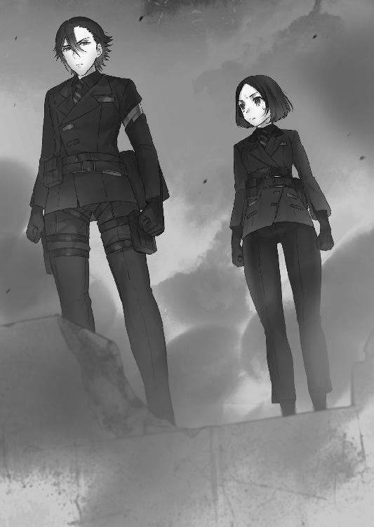
彼方が隼人の顔をのぞき込む。
今まで表情に反応を示さなかった隼人だが、じろりと瞳だけを動かして彼方を見た。
「──とぼけるな。捻り潰すぞ。伝言を伝えるにしては時間がかかりすぎていた。すでに鳳桜花について調べ尽くしているのだろうが、貴様は」
隼人の語気が荒れる。不出来な部下に対して指導という形で拳を振るうことはあっても、隼人の口調や瞳はいつだって平坦だった。
それが今、怒りに充ち満ちているのが手に取るようにわかる。隠密のエースであり、数々の修羅場と地獄を経験してきた彼方であろうと、彼の殺気には怯み上がった。
これ以上噓を言ったところで、有言実行されてしまうのがオチだ。
この男は、捻り潰すと言ったら実際に捻り潰す男だ。
「......桜花さんのご両親について、今までどんなにデータを漁っても手がかりすら見つかりませんでしたが、星白さんにある人物を調べるように言われて見当がつきました」
「............」
「──レッドグレア、かつてあなたの上司だった男です。任期は短かったものの一時はエグゼの隊長までのぼりつめた魔女狩りでしたが、審問会への反逆行為を幾度となく繰り返し辞職を強要された。それからしばらくして、『赤い蝶の虫籠』の残党に殺された......」
隼人は彼方を冷ややかに見つめたまま動かない。
彼方は構わず続けた。
「審問会のデータベースには、彼に関する全ての記録が抹消されていましたし、彼に協力的だったエグゼの隊員も同じ時期にクビになっていました。その後、彼と同じような目にあっています。だから審問会内部に彼の通り名を知る者は少ない」
「............」
「知っている者を探すのに苦労しましたよ。知っていたとしても、ほとんどの者は口を固く閉ざしていましたから」
彼方は資料を懐から取り出すと、隼人の胸の前に差し出した。
隼人は受け取らずに黙っている。
「本名、峰城和眞。妻と娘が一人いますが、家族には仕事のことは黙っていたそうですね。珍しいことではないですよね。私もそうですから」
「............」
「彼は、審問会を辞めた後に一人養子を引き取っています。『赤い蝶の虫籠』を襲撃した際に生き残った、魔力を持って生まれてこなかった赤ん坊です......」
彼方は資料を引っ込めて、ため息と共に隼人の顔を覗き込んだ。
「虫籠から救出されて九年近く経っていましたが......その子供が桜花さんなんですよね？」
彼方の推測に、隼人は静かに目を閉じた。
彼方はそれを肯定と受け取る。
「峰城さんは鳳颯月に疑問を持ち、かぎまわっていたそうです。だから上層部に目をつけられ......クビにされた挙げ句に殺された。違いますか？」
隼人は答えない。内に何を秘めているかすら読めない。
「恐らく峰城さんは決定的な何かを摑んでいたのでしょう。鳳颯月は隠蔽のために峰城さんを殺して、血のつながりの無い桜花さんだけを生き残らせた」
「............」
「ここからは星白さんの予想ではなく、私の勝手な推測なのですが......鳳颯月が桜花さんだけを残し養女にしたのは、あなたを裏切らせないためでは？ 鐵隊長は峰城さんに、自分に何かあれば娘を守ってほしいと......そう頼まれていたのではないですか？」
真剣に見つめてくる彼方に、隼人は冷ややかな視線を向けた。
そして、籠もった笑い声を漏らし始める。
「仮にそうだったとして......貴様に何の関係がある？」
「あ、ありますよ。そういう事情だったなら、私達反体制派にとって桜花さんやあなたは保護すべき対しょ──」
「──俺を舐めるなよ、大野木」
隼人の見開かれた瞳に秘められたものは、怒りでもなく苛立ちでもなかった。
言うなれば使命感。信念そのものが宿っている。
「貴様ら反体制派に守られるほど俺は落ちぶれてもいなければ、峰城和眞の娘を守るために鳳颯月に従っているわけではない。ましてレッドグレアのように自らの行いに悩むような柔でもない」
「......た、確かにあなたと峰城さんの仲は良好とは言えませんでしたが、それでもあなたは、彼に審問官としての──」
「奴が魔女狩りの心得を俺に仕込んだのは事実だ。感謝もしている。鳳颯月が俺を裏切らせないために桜花を養子にしたのも真実だろう。実際、俺は彼女を守ろうとしている。鳳颯月に逆らわないのはそのためだ。お前の推測は正しい」
隼人は淡々と己の置かれた状況を語る。
「だが、俺が鳳桜花を守ろうとするのは、民間人を守ることと何ら変わりはない。特別な思い入れもなければ、峰城への恩でもない。俺はただ、審問官として守るべき者を守り、駆逐すべき者を駆逐しているだけだ」
隼人の眼力に気圧されながら、彼方は息を吞んだ。
「俺は審問官として彼女を死なせるわけにはいかないだけだ。意味がわかるか、大野木」
「......あなたはあくまでも審問官としての立場を貫き、法に従うと......自分の全ての行動に情は無いと......そういうことですか？」
「俺は俺の中の法に従う。貴様ら反体制派のような違法組織に与するつもりはない。それは審問官として間違っているからだ」
曇り無き眼とは、今の彼の瞳を言うのだろうと彼方は思った。
揺るぎない信念。彼の中で凝り固まった大理石のように重たい審問官の理想像は、きっと何人たりとも動かすことはできないだろう。彼には個というものが存在しないのだ。在るのは第零殲滅機動隊隊長、異端審問官『魔女狩り』という概念のみ。
行きすぎた審問官の理想型。彼に正義は無く、悪も無く、ただそこにあるのは『法』というシステムだけ。人間がシステムとしてしか機能していないなど......壊れている。
「............」
頭を切り換えて目的を変える。鐵隼人を反体制派に引き込むのは不可能だ。彼は鳳颯月の存在を許さないだろうが、反体制派を容認したわけでもない。今でこそ星白流や自分を野放しにしているが、もしも犯罪行為を行えば、隼人は審問官として正当な処罰を与える。
味方にできないことは確定したが、敵にしておくにはあまりに危険すぎる存在だ。
なんとかして、利害一致の協力が行える程度の関係は保っておかなければならない。
この男はたとえレリックイーターが無くとも、危険な存在なのだ。
（星白さんが審問会を追われた以上、私ももう長くは潜伏していられない。桜花さんを逃がす手助けをする代わりに、せめて情報交換を行えるように要求──）
彼方が決断を下そうとした時、突然隼人の目が見開かれ、遠方のドーム状の建物を睨みつけた。彼方が何事かと思っていると、足下が震動し始めた。
「っ、地震......？」
確かに揺れている。地響きは徐々に大きくなり、やがて足下をぐらつかせた。
「大野木、信長を構えろ」
「え？」
「来るぞ。援護しろ」
隼人はホルスターからレリックイーターを抜くと、ビルから飛び降りた。
「ちょっと待っ......──!? 何よあれ......！」
彼方が隼人を引き留めようとした時、ドーム状の建物に皹が走った。スポーツ観戦場であろうその建物の外殻が、まるで卵が皹割れるように崩れていく。
彼方の背筋に怖気が走った瞬間、金切り声のようなけたたましい咆哮が轟いた。耳障りな上に腹に響くその雄叫びは、彼方の人としての本能に恐怖を刻み込んだ。
現れた脅威は三つ。鎌首をもたげて空へ産声を上げているその姿は、紛れもなく......。
「......ドラゴン......!? 第五研究所のものが量産されていたの......!?」
《装甲はブルークリスタル製ではない分防御は低いが、安定性は上だろう》
冷静な分析をする隼人の声に、彼方は青い顔をした。
敵は英雄だけでなく、機械竜まで投入してきていた。
《できるだけ距離を稼いで信長で援護しろ。背骨の浮遊機構を狙え、それが奴らの弱点だ。俺達だけで片付けるぞ》
「......っ」
《返事をしろ。貴様がまだ異端審問官である以上、俺の部下であることに変わりはない》
彼方は奥歯を嚙み締め、一瞬迷う。
ここで死ぬわけにはいかないという気持ちと、後続に控えている騎士団達の命を秤にかける。星白流率いる反体制派としての任務は、鐵隼人の勧誘と三五試験小隊を逃がすことだけだ。見捨てられる者は見捨てる。優先すべきは任務。
だがここで審問官としての任務を放棄すれば、隼人の銃口が自分に向きかねない。
正直──そっちの方が遥かに怖い。
「わかりました、わかりましたよもう......！」
彼方は魔女狩り化により鉛色の鎧を纏い、狙撃銃『信長』を構えた。
敵は擬似幻想召喚により生み出されたドラゴンの紛い物が三匹。圧倒的不利な状況でありながら、彼方はヤケクソ気味に信長のトリガーを引き絞るのだった。
中隊キャンプから一〇キロ地点に、ターゲットである地下鉄はあった。
地下通路から入ることができる地下鉄には、現在三五試験小隊を含めた精鋭部隊が侵入していた。鉄格子やバリケードを突破して、明かり一つない地下を桜花達は進む。暗視スコープを装着して、桜花は電話ボックスの陰から改札のあるエントランスを覗き込む。
人がいた形跡はあるものの、肝心の敵影は発見できなかった。
「......クリア」
桜花が無線で報告すると、後ろからうさぎを含めた騎士団が数名、腰を低くしながらぞろぞろとやってくる。
「変ですわ......見張りすら見当たりません」
うさぎの不安そうな顔を見つつ、桜花はエントランスに張られたテントのそばに近づく。魔力で稼働するヒーターの上に載ったコーヒーポットに手を当てると、まだ熱かった。
周りを見てみても、慌てて逃げ出した形跡は無い。
人だけが忽然と姿を消している状態だった。
別ルートを担当している隊からも同じ状況だとの通信が入る。逃げたわけではなく、さらに下へと避難したか、もしくはどこかに潜伏している可能性が高い。
《罠なんじゃないの？ 作戦中止したほうがいいと思うけど》
「......それは私が決めることではない......が、打診くらいはさせてもらう」
斑鳩の推測はもっともだ。仲間の身を危険に晒してまで作戦を続行する利点は無い。
桜花が中隊長に連絡を取ろうとすると、背後から肩を摑む者がいた。
「余計なことするんじゃねぇよ。この作戦が終われば俺達の勝利は決まったようなもんなんだぜ？ 止める意味がわからねぇぞ」
霧ヶ谷京夜が肩にネロを担ぎながら、桜花を睨んでいた。
いつも独断で動いていた京夜だったが、今回は何故か三五小隊と行動を共にしていた。
桜花も負けじと睨み返す。
「人員の大多数をこの作戦に割いているのだ。ここで我々がやられれば、キャンプだけでなく第五防衛線が襲われてしまう」
「ハッ、お仲間の心配してんならなおのことさっさと終わらせてやれ。柔な連中は精神的にも肉体的にも限界だ......ここで決めなきゃ先はねぇぞ」
一理ある。補給こそあるものの増援が無い現状、初期から生き残っている審問官達は一月半もの間ぶっ続けで前線に留まっている。気が休まらない場所で寝起きするのは疲弊するばかりで、精神を病んでいる者は数知れない。第七中隊の人員も二〇〇人を切った。
ここまで来たら、皆さっさと終わらせて生きて帰りたいはずだ。
「............わかった。だが、先へ進むのはお前と私だけだ」
「あ？」
「なんだ？ 怖いのか？」
桜花が挑発すると、京夜は頰をひくつかせてこめかみに血管を浮き上がらせた。
「誰にものを言ってんだてめぇ......殴られてぇのか......！」
「では証明してみせろ。私は駅のホームを、お前は連絡通路だ」
「命令すんじゃねぇよ、俺は──」
「怖いならここに残っていいのだぞ。ホームも連絡通路も私一人で十分だからな」
「......っ............クソが！」
京夜は舌打ちしつつもかったるそうにＣ４爆弾の入ったバッグを騎士団から奪い取り、連絡通路の方へ歩き始めた。
「......意外と、扱い易い男だと思わんか？」
肩をすくめて後ろに控えている連中に両手を上げると、うさぎが顔を横へ向けて噴き出した。自分も単純な人間だと思っているが、京夜はそれ以上だと桜花は思う。
気性が荒く粗暴だが、それ故に軌道修正がし易い。
「他の者はこの場所で退路を確保しておいてほしい。別ルートの通信や私達二人の報告によって危険と判断したのなら、迷わず逃げてくれ」
騎士団やうさぎにそう告げて、桜花は走り出した。
「鳳......！」
背後からうさぎが、引き留めるように声をかけてくる。
桜花は一度だけ振り返った。
「大丈夫だ西園寺。草薙が帰ってくるまでは隊長代理である私が勝手にくたばるわけにはいかん。必ず戻ってくるから安心してくれ」
優しげに微笑むと、うさぎは顔を赤くしつつもそっぽを向いた。
「......わ、わかっていれば......いいんですのよ？ あなたは曲がりなりにも臨時の隊長なのですから......死なれると、こ、困りますわ」
「うん。心得ている。お前達を置いて死んだりするものか」
桜花が自信を持ってそう言うと、うさぎも安心したのか小さく頷いてみせた。
桜花は再び背を向けて、改札を越えて階段を下りて行った。
＊＊＊
騎士団達とエントランスに残ったうさぎは、せめて自分にできることをしようと、周辺の調査を行った。
テントを一つ一つ調べてみて、わかったことが一つある。ここにあるものは、全て普通の人間が扱う物ばかりだということだ。アルミ製のマグカップに飯ごう。使い古された寝袋や、歯ブラシに洗顔料。娯楽用に持ってきたのであろうギター、年代物のレコード、ハーモニカ。グラビア雑誌の切り抜きや、駒を空薬莢で代用したチェス。
戦友との集合写真。家族の写真。恋人への手紙。
何もかもが、ここにいた殺し合うべき対象が普通の人間であることの証明だった。
「......嫌な物を見てしまいましたわ」
泣きたくなるような心境でテントを出たところで、うさぎは駅員室の扉を発見した。
敵が潜伏している可能性を考慮して、ドアの脇に張りついてＰＤＷを構える。
片手でドアノブを摑み、開け放ってすぐさま銃口を内部へ向けた。
「.....................なっ」
駅員室に侵入したうさぎは、目の前の光景に絶句した。
敵がいたわけではない。正確には、敵だったものがそこにあったのだ。
机の横に倒れている、純血の徒の軍服を着た老人の死体。
うさぎは片膝をついて、死体の状態と脇に転がっている拳銃を確認する。
「たぶん指揮官クラスの方でしょうが......自殺ですわね」
いたたまれない気持ちで立ち上がり、部屋を詳しく調べる。
情報資料の類は全て処分された後だったが、机の上に筆ペンと手紙が置かれていた。
遺書であることが一目でわかる。自殺した人間の残した物には触れたくはなかったものの、この遺書が宛先の主に届くことは無いと思うとやるせなかった。
うさぎは手紙を手に取った。このまま誰にも読まれずにゴミと一緒にされてしまうのはあまりにも不憫だと思ったのだ。遺書は娘へ宛てたものだった。
「......ミムラス？ 花の名前ですわ」
花言葉は、『笑顔を見せて』。
素直にいい名前だと思った。だからなおのことこの老人が娘を残して自殺したことがわからなかった。たとえ敗北したとしても、捕虜となって生き残ればいつか会える日がきたかもしれないのに......。
うさぎは悲しい気持ちになりながら何気なく手紙を読んでいく。
ミムラス・ヴァレンシュタイン。我が最愛の娘へ。
お前がこの手紙を読むことは無いかもしれないが、お前が今のまま生き残ってしまった時のことを考えて、手紙を残そうと思う。
ミムラス。お前を預かって六年になる。覚えていないだろうが、私がお前と出会ったのは、お前が一四歳の時だった。いきなり思春期の子供を預かることになって狼狽したのを今でも覚えているよ。お前とは、ウェストサイドとしての意見の相違で衝突することも少なくはなかったが、私はそんな口論ですら嬉しく思っていた。
血は繫がっていなくとも、正義と純粋さに溢れるお前の父でいられることが、私の誇りだった。本当に、真っ直ぐに育ってくれたと思う。本当に......ありがとう。
遺書には娘への愛が綴られていた。血は繫がっていなくとも、どんなに娘を愛していたかが書かれている。
「......？」
しかし、一枚目を読み終えた時点で、手紙がまだ続いていることに気づいた。
しわくちゃになった紙が三枚。うさぎはさらに一枚、紙をめくった。
噓だ。こんなものはまやかしだ。
かつての私なら、この手紙のようにお前に直接言えただろう。
でももう無理だ。私はもうお前を愛しているかわからない。
どうしてだ？ お前は生まれ変わったはずなのに、何故だ？
結局私がしてきたのは全て無駄だったのだろうか？ 私が育てたミムラスは、全て偽りだったのか？ お前は陰で、純粋に我が子を育てようとする私を笑っていたのか？
答えておくれ、ミムラスよ。私はお前を愛していた。実の息子と同じように。
だが......お前は......わからない。私にはもう、お前がわからない。
文面には線が引かれ、急いで消そうとした痕跡があった。辛うじて読めるが、内容は支離滅裂だ。遺書というよりもただの独白。書き殴ったような文字が並んでいた。
うさぎは表情を強張らせていく。文面からどのような内容が語られているのか欠片もわからなかったが、滲み出るような狂気をうさぎは感じていた。
私は憎む。お前を暴行し、調教し、人工殺人鬼に仕立て上げた虫籠の連中を。
家族を人質に取り、私にお前の解放を命じたウェストサイドを憎む。
嗚呼、私はお前が怖いよミムラス。お前の笑顔が怖くて怖くてたまらない。あんな姿の娘を見るのはもう嫌だ。頭の中から離れないのだ、お前の笑顔が。あの心の底から相手を敬い、尊び、安らぎの中に浸り尽くしたような聖母のような微笑みが、頭の中から消えないのだ......！ この手紙を書いている今も、お前の笑顔が目の前に浮かんで見える！
お前は何故笑う!? あれだけのことをしておきながら何故そうも純粋に笑える!?
答えてくれミムラス、お前はいったい何なのだ!?
私はいったい、何を育てていたのだ!?
その遺書は、まるで悲鳴のようだった。自責の念、娘への愛情、そして恐怖。分裂した自己、まとまりのない精神が、そのまま記されていた。
文章はやがて、ただの文字の羅列になっていく。頭を撃ち抜いた時に飛び散ったであろう血が滲み、ほとんど読めなくなっている。
商品 調■ 人工殺■■ バ■モ■ 壊■れた■顔 笑■ 笑■ ■顔
■だ子供■った な■て酷■ことを もう■うな もう■うな もう笑■な お願■だか■、私■笑いかけない■くれ 逃■なけれ■、■げな■れば、も■私はあんな■前■見たくな■ もう笑■■く■い 嫌だ■だ嫌■ 今、ドア■向こう■音 靴■ 近づい■くる ■いつがやってきた ここ■やってきた この地下鉄に この暗■に この戦場に
──今、うしろに立っている
「な、なんですの......これ」
意味不明な文面から狂気を感じつつも、最後の一枚をめくる。
最後のページには、インクが滲みきった巨大な文字が書かれていた。
人名なのかすら疑わしいその名に、うさぎは戦慄した。
ラフメーカーはここにいる
ゾクリと、冷水を背中に流し込まれたような悪寒がうさぎを襲った。
手紙を床に投げ捨てて、うさぎは口に手を当てながら後ずさる。
「......お、鳳に......知らせなくちゃ......！」
ここは危険だ。騎士団に説明して、それから桜花を連れて地下鉄を脱出しなければ。
背中がドアにぶつかった瞬間、うさぎは部屋から飛び出す。
ドアノブを握り、思い切り錆びついたドアを開け放った。
「──ひっ......！」
目の前に、笑顔があった。
桜花は路線によって枝分かれした駅内のホームを一つ一つ索敵しながら調査する。
相も変わらず人気は無かった。
《セントリーボットで他の通路も偵察してきたけど、誰もいないわ。生体反応も今のところ無い。まあ、隠れる場所なんて山ほどあるからなんとも言えないけど》
「かなりの人数がいたはずだ......もう幻想教団側に陣地はほとんど残っていないからな」
《悪いわね......駅は狭すぎるからボットは一匹で限界》
「助かっている。問題ないさ」
丁寧にクリアリングをしながら、ホームへの階段を下る。
平静を装ってこそいるが、桜花の心中は穏やかではなかった。
この場所にラフメーカーがいるという噂が、心をざわつかせている。
《うさぎにああは言っていたけれど......実際のところ気が気じゃないんでしょう？》
斑鳩の鋭い指摘に、桜花は足を止めて少しうつむいた。
「......やはりわかってしまうか。杉波には敵わないな」
《あんたと同じ経験をしていたら、みんな同じ気持ちになるから安心なさい。人間はそんなに割り切って生きることができない生き物でしょ。恥じることではないわ》
恥じることはない。そう言われて、桜花は自分の手の平を見つめる。
手は痙攣しているのかと見紛うほどに震えていた。この震えが恐怖から来るものではないということを桜花は自覚している。
武者震いだ。復讐の対象がいるかもしれないという事実への歓喜。
「......ここにいるという、予感がするのだ」
《............》
「あいつがここに......それを考えると......っ、私は......！」
《............》
「どうにかなりそうだ......！」
桜花は自分が笑っていることに気づいて、両手で顔を覆った。
隠し通すことのできない歓喜が、笑みを通してあふれ出る。
復讐を果たせると思うと、嬉しくてしょうがなかった。
全身の血管が沸騰し、ぐつぐつと煮えたっていた。
「は、はは......大丈夫だと......思ったのだがな。笑ってくれ......この場所に入り込んだ直後からずっとだ。震えが止まらない......身体というものは、こんなにも正直なのか？ 押し殺しても、溢れてくるんだ......」
《............》
「自分がここまでおかしくなっているとは思わなかった......ここまで弱いとは思わなかったよ」
自嘲気味に笑って、桜花は震えた手を握りしめた。
《──大丈夫よ。私がついてるから》
斑鳩の一言に、桜花の震えが一瞬止まった。
桜花は引きつった笑みのまま無線に耳を傾ける。
《あんたが馬鹿やらかさないように、私が耳元で騒いであげる。安心しなさい。私があんたを復讐の鬼になんかさせないから》
「......杉、波」
《これでも長い間あんた達の戦いをサポートしてきたのよ。武器を整えて、無線で助言を出したりすることしかできないけれど......人一倍あんた達の心がわかっているつもり》
力強い斑鳩の口調に、桜花の表情が元に戻っていく。
《復讐に溺れてしまうのも理解できるわ。人の心は機械じゃない。ロジックやプログラム通りに上手く生きられる人間なんていない。だから他人がいるの》
最後に斑鳩は小さく笑って、悪戯っぽくこう言った。
《草薙っぽく言い換えましょうか？ だからこそ仲間がいるのよ》
「............っ」
《大船に乗ったつもりで頼りなさい、この私を》
通信の向こうで、斑鳩が得意げな顔で足を組んでいる姿が目に浮かぶような台詞だった。
桜花は深く息を吐き、前を向く。
そうだ。一人ではない。仲間がいる。彼らを頼っていいのは戦闘だけではない。
そう言ってくれる仲間がいるではないか。
「......本当に、あ、ありがとう。私が暴走しそうになった時は、止めてくれると助かる」
《りょーかーい》
「私は......本当にダメだな。お前達に助けられてばっかりだ」
《本当よ。どこぞのダメ隊長に似て、隊長代理も世話が焼けるんだから》
「すまない。全部済んだら、何か食べ物でも奢らせてくれ」
《食べ物なんかより、せっかくだからあんたのその二つの膨らみをおもいっきり──》
「......？」
不意に斑鳩の冗談が途切れたことで、桜花は首を傾げた。
「......杉波？ おい、どうした？」
《────》
返事は無い。ノイズすら発生せず、無線はうんともすんとも言わなかった。
故障だろうかと思い、インカムを外して指で叩く。
カツカツというインカムを叩く音だけが暗闇に響いた。
............クス......クスクス。
音に混じって、笑い声が聞こえた気がして桜花は顔を上げた。
「っ、誰だ!?」
銃を闇へ向けて声を張り上げる。
やまびこのように反響した桜花の問いかけに、笑い声が重なる。
クスクス、クスクスクス、クスクスクスクスクス。
一人のものではない。複数の、大勢の笑い声だった。
目を凝らすと、声の発生源が見えてきた。
駅のホームの線路上。そこに、ずらりと隊列を組んだ赤い服の兵士達がいた。
（っ......！ 気配は全くなかったはず......！）
焦って魔女狩り化を果たし、敵の動きを警戒する。敵は動かない。敵達は直立して頭をうな垂れたまま、ゆらゆらと左右に小さく揺れているだけだった。
異様な光景だ。まるで隊列を組む幽霊の群れだった。
敵は杖を構えもせず立っているだけ。撃つに撃てない状況に焦燥感ばかりが募る。
《......主......心せよ》
不意にヴラドが呟いた。
「何をだ」
《決して取り乱すな。我を忘れるな。汝の気高さとやら、見せてもらうぞ》
「......？」
理解できない言葉の羅列に、桜花は顔をしかめる。
ヴラドは桜花の頭の中で深く息を吐いた。
《.....................奴だ》
短い一言と同時に、敵の隊列の中央で動きがあった。
敵の笑い声が、一つだけ残して止んだ。艶美な、女の笑い声。少女のような無邪気さと、蛇が舌をちらつかせるような不気味さを併せ持つ笑い声が聞こえる。
敵の隊列の間を割るようにして、影がこちらへやってくるのが見えた。
線路の砂利を踏みしめ、ゆっくりと桜花の方へやってくる。
歪な魔力を身体中からオーラのように滲ませて、そいつは桜花の前へ姿を現した。
純血派を象徴する真っ赤な軍服。金髪に薄い血が混じったようなストロベリーブロンドの髪。曇りきった生気の無い灰色の瞳。
唇は血を吸ったかのように赤く、聖母の微笑みのような柔らかい弧を描いていた。
「こんばんは。いい夜ね」
声は優しく、柔らかい。およそ戦場には似つかわしくない澄んだ音色を奏でていた。
反して桜花の心はざわめき出す。
「ん......？ 見覚えのある綺麗な夕焼け色の髪。私、あなたのこと知っているわ」
クスクスと笑うその女は、桜花のことを知っていた。
桜花も、彼女のことを知っていた。
「確か、五年以上前に請け負った仕事だったかな。そうだ......覚えてる！ 何を言っているのかしら、この私があなたのことを忘れるわけがないじゃない！」
「────」
「幸せそうな家族の中に、あなたはいた。優しい父と母、そして仲の良さそうな姉妹。あなたはその片割れだったわよね？」
「────」
「あの仕事、すごく良かったわ。私の赤い蝶としての最後の仕事だった。今でも覚えている。あれはすごく良かった」
女は赤い唇を指で撫でて、小首を傾げながら桜花へ微笑む。
桜花の視界にはもはや女の姿しか映っていない。ヴラドの声も、遥か遠くの悲鳴も届いていない。桜花は彼女を知っている。記憶に刻みついたまま決して消えないその存在を、忘れられるわけがなかった。
女が笑う。楽しげに、優しげに、あの時と同じように──
「家族を殺している時のあなたは──すっごく、いい笑顔だったわよ」
かつて女は笑えと桜花に言った。
笑いながら妹を惨殺しろと桜花に言った。
今と同じ微笑みで、今と同じ囁くような声で、耳元で、目の前で──何もかも奪った。
ラフメーカー。桜花の人生を狂わせた忌まわしき仇が、目の前にいた。
「────────ああああああああああああああああああああああああああああああああああああああああああああああああああああああああ！」
桜花は駅のホームから飛び降りて、女の笑顔へ右腕を振り上げた。
最大出力の《伯爵の牙》。地下鉄ごと崩壊させかねない威力を誇るその一撃を、形振り構わず撃ち放とうとする。
「せっかちね」
微笑みをそのままに、ラフメーカーは唇を撫でる。
瞬間、うな垂れていた周りの兵士達が一斉に桜花へ杖を向け、巨大な魔弾を放った。
桜花に回避するという思考は無かった。魔弾は桜花の身体へ全弾ぶち当たり、大砲のような衝撃で彼女を吹き飛ばした。
桜花の身体は壁に激突して深く深くめり込んだ。
敵の魔弾は一介の兵士に練ることのできる魔力濃度ではなかった。そのどれもが英雄の一撃に匹敵している。並び立っていた兵士達が、左右の端から一斉にバタバタと昏倒した。
生命すら犠牲にして魔力を一斉放出したことで、一瞬にして絶命したのだ。
「ご苦労様......がんばったわね。あなた達の笑顔、決して忘れないわ」
慈愛に満ちた微笑みで、ラフメーカーは死んだ兵士達に労いの言葉をかけた。
死した者達は皆笑っていた。苦悶すら浮かべず、瞳だけを無念の涙に濡らして、満面の笑みで死んでいた。残った兵士達も全員笑っていた。嘆きを口にしながら、笑っていた。
──ミムラス様......どうして？
──死にたくない......もう笑いたくない......苦しいよ。
──信じていたのに......。
──頼む......部下を、殺さないでくれ......。
声は悲しく痛ましいのに、顔は満面の笑みだった。
崩れた壁の下で、桜花はその光景を目にしていた。
「──ラフメーカぁぁ！」
桜花が土煙を貫いて再びラフメーカーに襲いかかる。
「すごくストレートな子。やっぱり怒ってる？」
再びラフメーカーが唇を撫でると、兵士達が魔法陣を出現させ、魔弾ではなく図太い鎖を放った。鎖は桜花の身体に絡みつき、空中で彼女を拘束した。
「ぐ、うううううううううう......！」
鎖に拘束された桜花は、もがきながらラフメーカーを睨む。
獣のような唸り声を上げて、彼女だけを視界に捉えながら激しく暴れ回る。
《落ち着け主！ 桜花！ このような鎖、余の力であれば容易く貫けようが！》
ヴラドの制止の声も届かず、桜花はラフメーカーへ殺意を向ける。
「どうして貴様は私の家族を殺した!? 貴様と何の関係があった!? 答えろ！」
《状況を見よッ、最大出力の牙をここで放てば地下が崩壊し、仲間もろとも潰れるということがわからんのか！》
「妹はまだ五歳だった......！ 五歳だぞ！ あんなに幼い子を......貴様は......よりによって私に殺させたんだ......！ 許さない......絶対に許すものかああああ！」
牙を剝き出しにして、前へ前へと身体を押し出す。鎖は動けば動くほど絡みつく。魔女狩り化の怪力でも破壊できないほどの、あり得ない強度だった。
ラフメーカーはふわりとジャンプして駅のホーム、桜花の目の前に着地した。
顔を桜花の目の前へ伸ばして、見つめ合う。
まるで狂犬とその飼い主のような構図だった。
「そのレリックイーター......見覚えがあるわ。あなた、自分のお父さんの......レッドグレアの後継者になったの？ 血の繫がりはなくとも親子なのね」
意味深なラフメーカーの言葉に、桜花は憤怒の中にありながら一瞬動きを止めた。
ラフメーカーは続ける。
「レッドグレアの仇討ちに来たのよね？」
「何を言っている......！ レッドグレアと私に何の関係がある!?」
「あら？ もしかして知らないの？ 今あなたは、私があなたの家族を殺す理由が無いと言っていたけれど、本当はちゃんと理由はあったのよ？」
キョトンとしながら、ラフメーカーは言った。
「あなたのお父さん、峰城和眞は一般人なんかじゃない。異端審問官の魔女狩りで、かつてレッドグレアと呼ばれていたエグゼの隊長さんなのよ。彼は私の家だった『赤い蝶の虫籠』を壊滅寸前にまで追い込み、私を捕らえた」
桜花はラフメーカーの口から出た真実に絶句した。
レッドグレアが、自分の義父だったという事実に衝撃を受ける。
だがそれ以上に驚いたのは、ただそれだけの理由で自分の家族を殺されたという事実だ。
「その復讐に、妹もろとも私の家族を虐殺したというのか......!? それだけの理由でか!?」
「あはは。違う違う。別に彼を憎んでいたわけではないの。むしろ感謝していたくらいだわ。救い出してくれたヒーローですものね。私は憎しみで人を殺したりなんかしない」
桜花の頰を両手で包み、ラフメーカーは優しく撫でる。
慈愛に満ちた瞳を向けて、彼女は桜花の家族を殺した理由を口にする。
「レッドグレアを殺したのはね......彼が苦悩していたからよ」
「............な、に......？」
「彼は審問会から虫籠の壊滅を命令されて、それを実行した。処分前だった商品の子供達も何人か殺してしまったでしょう？ 私と対峙した時も......彼すごく辛そうだった。審問官としての自分と、優しい自分が鬩ぎ合っていたのが手に取るようにわかったわ」
頰を涙の雫で濡らしながら、ラフメーカーは深く吐息を吐き出した。
「──だから救ってあげたの。彼を苦しみから解放してあげたの。笑顔で死ぬことができれば、天国へ行けるから」
意味のわからない殺害動機に、桜花の心中が煮え立った。
わかることは、この女はどうしようもなく壊れているということだけだ。
「貴様は......狂っている......！」
憎しみを込めて睨みつけてくる桜花に、ラフメーカーは不思議そうな顔をする。
「どうしてそんな顔をするの？ あなたにだってわかるはずよ。だってあなたは、私と同じ赤い蝶になるはずだったんですもの」
「それ以上......戯れ言を口にするな......！ 殺してやる、今すぐに......！」
「桜花、ちゃんと話を聞いて？ 戯れ言なんかじゃないのよ。あなたの本当のお母さんは、私と同じ虫籠の商品だったの。生まれてきたあなたに魔力が宿らなかったから殺される予定だったけど、レッドグレアがあなたの母親を助けるために奔走した。母親は私が殺したから助からなかったけど、あなたは生き残った。きっと彼は、母親を救えなかった罪滅ぼしにあなたを引き取ったのね。私を殺さずに捕まえたのもきっと同じ理由だわ......そう、罪滅ぼし」
ラフメーカーは、立て続けに桜花の知らない事実を吐き出していく。
彼女の言うことが本当かどうかはわからない。けれど、ヴラドから聞いた話と繫がる部分が多かった。レッドグレアが救おうとしていた魔女が桜花の母親なら、両親が縁もゆかりも無い桜花を引き取った理由に納得がいく。
──だが、それが何だというのだ。その事実が、家族を殺した理由になるわけがない。養父も、義母も、妹も、実の母親も、こいつが殺したという真実は動かない。
憎む理由が増えただけだ。
ラフメーカーは淡々と、世間話でもするかのように過去を語る。
「大丈夫......みんな幸せそうに笑って死んだでしょう？」
「............っ」
「あなたの妹もちゃんと笑っていたわよね？ 自分の命を奪うのがお姉ちゃんでとても悲しかったけれど、がんばって笑顔で逝ったわよね？」
桜花の怒りが爆ぜて、右腕の鎖を一気に引きちぎってラフメーカーの顔面に拳を繰り出した。桜花の攻撃を、ラフメーカーは片手で容易く受け止めた。
「すごい力ね！ でも、私の古代属性もなかなかのものなのよ」
眩い白光を発しながら輝くラフメーカーの魔法陣。
桜花には一目で属性がわかった。
古代属性『輝』。強制的に限界を発揮させる強化魔法に特化した属性であり、対象の生命力を魔力に変換できる。さきほどの魔弾も桜花を拘束している鎖も、背後の兵士達の限界を発揮させて放たれたものだった。
「ねえ......そんなに怒らないで？ どんなに辛くても笑っていなくてはダメよ。私は虫籠でそう調教されたの。あなたも本当は私と同じ赤い蝶になるはずだったのだから、見習わないといけないわ」
荒ぶる桜花の頰を指で撫で、憂いを含んだ笑みを浮かべる。
「私は虫籠の商品の一人だった。物心がついた頃から心が壊れるまで暴行を受け続けた。たぶん、この世のあらゆる苦痛と絶望と恥辱を味わったわ。死にたくなるほど辛かったけれど、笑っていれば造作もないことだって気づいたの」
「知ったことか......殺してやる......！」
「今では虫籠の人々に感謝している。だって今の私はいつも笑っていられて、世界中の人々に笑顔と死を与えてあげられる。こんなに幸せなことって無いと思わない？」
「貴様を殺す......！ 殺してやるぞラフメーカー！」
「あらあなた、私を殺してくれるの？ いいわよ、殺しても。死は私にとって救いなの......だけど笑ってくれないとダメよ？ あなたは笑いながら私を殺して？ 私も笑いながらあなたに殺されてあげる」
「こ......の......狂った、殺人鬼が！」
瞳を真っ赤に染めて暴言を吐く桜花に、ラフメーカーは悲しげに目を伏せた。
「......あなたも私を狂っていると決めつけるのね。審問会から逃がしてもらった後に私を引き取った幻想教団の人々もそうだったわ。私を異常者だ、バケモノだと決めつけて記憶を封じ込めてきた。中には愛情とかうさんくさいもので教育し直そうとする人まで現れたのよ？ どうして理解してもらえないのかしら......」
一瞬沈んだ顔を見せたものの、すぐに彼女は笑顔で顔を上げた。
「でも大丈夫！ 笑っていられれば何でも上手くいくわ！ それをわかってもらうには、もっとたくさんの人々に笑顔を与えなくちゃいけないわね！」
少女のように瞳を輝かせて、ラフメーカーは意気揚々と言ってのけた。
そして、背中から魔力で構築された赤い蝶の羽根を生やし、桜花の顔を包み込んだ両手に力を込めた。
「さあ、笑ってみせて？ どんなに過酷な状況下でも幸せに笑っていられるはずよ。大丈夫怖くないわ。妹を殺した時みたいに、私を笑いながら殺せばいいだけなのだから」
何かの魔法の前兆だと予期した桜花はもがきにもがいたが、身体に力が入らない。
《──いかん......この魔法は汝には対処できん！ 離れなければ！ 奴はすでに余の力を制御し始めている！ このままでは身体の主導権を奪われるぞ！》
「あ......ぐ......」
《鎖の拘束魔法の術式は頭に入っているだろう！ ツェペシュで貫通して破壊せよ！》
「......っああああ！」
完全に暴走している桜花に、術式を頭の中で構築させることは不可能だった。
ラフメーカーの足下で魔法陣が回転し、蝶の羽根がはためく。
「さあ──あなたの笑顔を、私が作ってあげるからね」
ラフメーカーの頰を涙が伝い、魔法が発動する。もはや逃れる術は無い。家族を殺された時のように、肉体の主導権を奪われ、望まぬ笑みに沈んでしまう。
──今まさにラフメーカーの魔法が発動しようとした、その時だった。
「スラッグショット！」
真横から深緑色の魔力の塊がラフメーカーの脇腹へ突き刺さった。
身体をくの字に曲げて、ラフメーカーが吹き飛ぶ。同時に鎖が砕け、桜花の身体は自由を取り戻した。
桜花を助けたのは霧ヶ谷京夜だった。
「ちっ、威力が全然足りねぇ......！」
《地下が崩壊しちゃうからって威力抑えるのがいけないんでしょー。うちらは潰されても平気なのにさー》
「うっせぇ黙ってろクソ銃！」
改札を抜けて階段を下りてきた京夜が、ショットガンを構えながらやってくる。
すでにラフメーカーは、蝶の羽根で地下トンネルを飛んで行ってしまった。
京夜は桜花の前で急停止すると、悔しそうに舌打ちをした。
「くそっ......！ 逃がしたか......！」
《ありゃ追いつけないね。今のご主人様どんくさいから》
「てめぇの性能が悪ぃんだろうが！」
《ご主人が最近ヘタレてるからネロがまともに性能発揮できないんでしょーが。私のせいにしないでよね～》
「っ、無機物のくせに言い訳だけは一丁前か......！」
激しく悪態をつきながら、京夜は床に膝をついている桜花を横目で睨んだ。
「ハッ、一人で余裕とかぬかしてたわりにはずいぶんなお姿じゃねぇか、隊長さん」
「............」
「自分の仇を前にして地べた這いずってりゃ世話ねぇぞ」
京夜が蔑むように桜花を見下ろしながら挑発する。
「奴は俺が殺す。あんたはそこで一人で膝でも抱えてろ」
「......黙れ」
「あ？」
「──黙れ、殺すぞ」
京夜はビリビリと肌にくる途方もない殺気を向けられて、鋭く目を細めた。
長い前髪の隙間から、桜花の瞳が青い炎を宿している。紅蓮のような赤い髪と殺気の中で、彼女の瞳は一際強く、青く輝いていた。
京夜は殺意の塊と化した彼女の瞳を見て、歪に笑った。
「そうこなくっちゃな......いい顔になったじゃねぇか、鳳桜花......！」
「......奴は私が殺す。私だけの獲物だ」
「気張るじゃねぇか。だったらあいつを先に殺すのが俺かお前かで勝負といこう」
京夜がネロを構え、桜花は立ち上がると再び魔女狩り化を完了させた。
二匹の復讐鬼がトンネルの入口に立つ。
二人は地を蹴り、ラフメーカーを追うべく闇の中へ駆け出そうとした。
──桜花の耳が微かな音を拾ったのは、偶然だった。
一瞬の静寂の中で、ノイズのようなものが聞こえたのである。不審に思い音の方を見ると、魔弾で吹き飛ばされて地面に落ちてしまったインカムが目に入る。
そのスピーカーから漏れ出す弱々しい声に、桜花は──
《......おお、とり......た、助け......て》
──桜花は、ようやく正気を取り戻した。
青ざめた顔でインカムを拾い上げ、耳に装着する。
「──どうした！」
《......罠です......突然敵が笑いながら、襲ってきて......それから......息が......敵は、味方ごとわたくし達を、毒ガスで......！》
絶句しながら改札へ向かう階段の方を見ると、もくもくと赤黒い霧のようなものが下りてくるのが見えた。
激しく咳き込むうさぎの声に、身体中から血の気が引いていく。
「なんてことだ......！」
復讐に我を忘れ、仲間との通信をおろそかにしていたことを、ようやく自覚する。
「チッ、姑息な手を使いやがって......おい、急いでもど──」
京夜が言い終わるよりも先に、桜花は地を蹴って疾走を始めていた。
行く先はラフメーカーではなく、仲間のいる方向だった。
「............ふん」
切羽詰まった桜花の姿を見て、腑に落ちないながらも京夜は彼女の後を追った。
「西園寺！」
エントランスに辿り着くと、そこはすでに毒ガスで充満していた。
うさぎはすぐに見つかった。騎士団二名に肩を貸しながら動けずにいた。
周りには純血の徒達の死体と、騎士団数名の亡骸が転がっている。毒ガスと共にラフメーカーに操られた敵が襲ってきたのだろう。
「す、すみません......ゴホッ......マスクを装着したのですが......腐食性も持っているようで......」
桜花は、うさぎの姿に声が出なかった。ガスの影響か、肌のいたるところに黒い痣のようなものが浮かび上がっていた。マスクも腐食して穴が空いている。幸いうさぎの物は斑鳩の特製品だったため辛うじてもっていたが、騎士団の物は完全に崩れ落ちていた。
「......早く......外に出なければ！」
「騎士団の方々を......置いてはいけません......せめてこの二人だけでも......」
すでに身体が黒色化しているが、辛うじて息をしている二名をうさぎが気遣う。
桜花が二人の身体を担ごうとすると、
「どけ」
肩を押しのけて京夜が前へ出た。京夜は騎士団とうさぎの前にしゃがみ込むと、それぞれの額に手を当てて深緑色の魔法陣を展開した。
「ネロの属性は『毒』だからな。中和するための毒くらい生成できる」
うさぎや騎士団二名の身体から痣が消えて行く。治癒を完了させると、京夜は騎士団の一人を肩に担ぎ、もう一人の首根っこを摑んで引きずった。
「他の連中は手遅れだ。さっさと西園寺を担げ。脱出すんぞ」
「霧ヶ谷......っ、恩に着る」
「うるせぇ。クソが、完全に興が削がれちまった」
かったるそうに背を向ける京夜に従って、桜花はうさぎを両手に抱き上げた。
「おおとり......無事で、よかった......連絡が無くて、心配......したんですのよ」
「............すまない......本当に......」
「......？ どうして、泣いているんですの......？」
不思議そうにするうさぎを抱きながら、桜花は涙を流す。
謝る資格も、泣く資格もないことがわかっていながら、桜花は自分の弱さに打ちのめされていた。
仲間やヴラドに言った自分の言葉が、全て噓になってしまった。
復讐に踊らされた自分を、桜花はひたすらに責め続けるのだった。
第五章 紅蓮の継承
＊＊＊
純血の徒の輸送用転送装置は旧軍事地下道に設置されていた。
救援物資が届かなくなってから久しく、人気は無い。ほぼ全ての兵士達は地上へ出て領地構築のための最後の戦闘を行っているため、入口付近に見張り兵が五名配備されているだけだった。
ヘルメットを被った背の低い兵士はあくびをしながら、杖をペンのようにくるくると回している。他の兵士は真面目に見張りをしていた。
転送装置に反応があったのは、見張り兵があくびをしていた口を閉じたのと同時だった。
稲光を帯びたかと思えば、転送装置の中心部に魔法陣が出現し、眩い輝きを放った。
輝きは光の球体となり、装置の真上で固定されたまま徐々に巨大化していく。
その球体の中心に、何かが出現する。まるで光の中から新たに生まれてきたかのように、足先から細胞のようなものが肉体を構築していく。細胞がパズルピースのように組み合わさり、人型を形成したところで、光の球体の中から一人の少年が飛び出した。
少年は抜き身の刀を地面に突き刺して着地する。
汗に濡れた前髪から雫を垂らし、早鐘を打つ心臓に少年は呻く。
眩む視界に頭を振って、周囲を警戒。誰もいないことを確認すると、少年は自分の手の平を見つめた。
手足はある。心臓も動いている。自らの無事を確認して、少年は瞳を前方を向けた。
「帰ってきたぞ」
──内側の世界、魔導学園でキセキを救う手段を得て、草薙タケルは帰還した。
自分のすべきことを果たすために、タケルは帰ってきた。
想像だにしなかった魔導の世界との邂逅、数々の出会いや、恩師との再会。
向こう側で安息を得ることもできた。戦いに身を投じず、全てを忘れて普通に生きることもできた。
そうしなかったのは、外側の世界でやり残したことが多すぎたからだ。
約束があった。救うべき者がいた。ともに戦うべき仲間がいた。
その全てを放棄して安らぎに身を委ねることなど、タケルには断じてできなかったのだ。
草薙タケルは帰還した。
自分の大切なもの全てを、救うために。
タケルは床に突き刺した剣を杖にして立ち上がる。
「助けに行くからな......キセキ！」
だが、中腰まで身体を起こした時、
「「うわわわわっ！」」
頭上から声がしたかと思えば、いきなり何かがタケルの身体を押し潰した。
タケルは声もなくべちゃっと下敷きにされた。
「いったぁ......！ ちょっとカナちゃん......話が違うじゃない！ なんで空中に放り出されるのよ！」
「っつ、カナに言うな！ 座標がずれてた装置が悪い、カナ悪くないっ」
真上から降ってきたマリとカナリアが、タケルの身体の上で口喧嘩を始める。
後頭部にはマリのお尻。腰のところにカナリアの胸が押しつけられている。
正直劣情に浸っている状況じゃない。マリのせいで鼻を強く打ちつけ、カナリアのせいで男のシンボルが潰れかけていた。
「......そろそろ、どいてくれませんかね？」
車に轢かれたカエルみたいになりながら言うと、タケルの頭を尻で潰していることに気づいたマリが顔を真っ赤にしてスカートを押さえながら飛び退いた。カナリアものっそりと起き上がって乱れた髪を整える。
タケルは、鼻と股間の無事を確認しながら立ち上がった。
「タケルのえっち！」
「いくらなんでも理不尽すぎるだろ......」
草薙タケルは愚痴のように言いながら、辺りを見回した。
「確か、転送には時差が発生するんだったよな？」
「体感じゃ一瞬だけど、実際の時間は半日は経過しているはずよ。妙に静かね......もう戦いは終息したのかしら」
マリが周辺の静けさを不思議に思いながら言うと、カナリアが背中の剣に手をかけた。
「純血派の装置使ったから、ここ、敵の陣地のはず。十分注意しろ」
「でも真っ暗よ？ 本当に戦争中ならここは補給のための要なんだから、厳重な警備があって当然なんじゃないかしら。誰もいないなんておかしいわ」
マリも帽子の鍔を指で押し上げながら、敵の索敵を行う。
そんな中、タケルだけがすでに気配を察知した。
「いや、いるぞ。そこの五人、出てこい。降伏すれば命は取らない」
抜刀の構えを行いながら、タケルは入口の兵士に声をかけた。
ある程度の抵抗は覚悟していたが、兵士五名は両手を上げてこちらへ歩いてきた。
妙に素直な敵の態度を怪訝に感じていると、
「......わお、それ、魔導学園の制服？ へぇ～青いんだね」
先頭にいる兵士の吞気な声が聞こえ、肩透かしをくらう。五人とも純血派の赤い軍服を着ているが、ヘルメットに隠れて顔は見えない。
「抵抗する気がないのはわかった。でも拘束はさせてもらうぞ。悪く思うな」
「いや～それは困るからやめてほしいなぁ。もちろん君にとっても困ることになるけど、いいの？ 草薙くん」
名も知らぬ兵士に名前を呼ばれて、タケルは驚いた。
声には聞き覚えがあった。先頭に立つ小さな兵士に目を凝らす。のったりとしたすっとぼけた声音と、小さな体軀。ヘルメットの中から微かに見える赤い髪。
「──久しぶり、草薙くんにマリちゃん。待ってたよ～」
対魔導学園生徒会長、星白流だった。
「か、会長？ なんでこんなところに......」
タケルが驚いていると、流はヘルメットを投げ捨てて両手を広げながら走り出した。
「おかえりなさいあなた～～～～～！ ご飯にする～？ お風呂にする～？ そ・れ・と・も！ きゃはぁん☆」
笑顔で胸に飛び込んでこようとする流の頭を、タケルは無表情のまま手の平で摑んだ。流は「ほぶぅ」と言ってタケルに頭を摑まれたまま、ぷらんぷらんとぶら下がった。
「......何してんすか、あんた」
「ねぇね、首、首折れるよ？ 足が床についてない。ぷらんぷらんしちゃってる」
「どうして生徒会長がこんなとこにいるんです？」
頭から手を放して、極めて冷静にタケルが尋ねる。外側の世界に帰ってきて早々、意味のわからない状況に頭が追いつかない。
流は首をさすりつつ口を尖らせた。
「んもぅ、いけずぅ。うちは君達がくるのをずーっと待ってたんだよ？」
「待ってたって......ここ、純血の徒が管理している場所ですよね？ だいたい何で奴らの軍服をあんたが着てるんだよ」
率直な疑問を口にする。まさか純血の徒に鞍替えしたとかではあるまい。タケルを反体制派に誘っておいて、そんなことはありえない。
無いはずだ。無いと思う。
（......無いよな？）
「いや～実は純血派として審問会と戦おうと思って～」
たはーっと照れくさそうに笑う流に、タケルは刀を抜いて彼女の首もとに当てがった。
「はい冗談です。くだらないことしてごめんなさい」
「......真面目にやれ」
「冗談通じない男はモテないんだぞぅ......。本当はね、君が戻るって報告を受けていたんだ。だから純血派に潜入して、ここで待機してたのさ」
「？ どうして生徒会長がそんなことを知ってるんだ......」
流はふふんとぺったんこな胸を張った。
「君の師匠、オロチ君は少しだけうちらと協力関係にあるからね。まあ、どんなに勧誘しても完全に味方にはなってくれなかったんだけど、君を送り返すってわざわざ連絡してくれたんだ」
「師匠と生徒会長、知り合いだったのか......!?」
だとしたら、あの男は全てを知っていながらタケルを自由にしたということになる。
約束の相手が流だということも、きっと知っていたに違いない。彼女になら弟子を託してもいいと、そう判断したのだろう。
「向こうで何があったかは、だいたい彼から聞いてるよ」
「......そうですか」
「うん。よく帰ってきてくれた......約束を守るために苦労して戻ってきてくれたんでしょ？ ありがとね」
流はストレートに礼を述べると、にっこりと笑った。腹黒い人間だとは思うのだが、不覚にも笑顔は可愛いと思ってしまう。
勘づかれたのか、脇腹をマリに小突かれる。マリは流を睨んだ。
「話を聞いても全然腑に落ちないんだけど......純血の徒の中に潜入って無謀にもほどがあるし、普通に考えて無理でしょーが。あんた、何か裏があるんじゃないでしょうね？」
流は苦笑した。
「いや～実はうち、審問会から指名手配されちゃっててね～。あの時草薙君と桜花ちゃんを逃がした主犯がうちだってバレちゃって、今捕まるわけにはいかないから、審問会と敵対してる純血派が隠れ蓑に丁度よかったんよ」
「答えになってないんですけど......」
マリはじと目で流を見ていたが、さっきから気になっていた後ろの四人へ視線を向けた。
そいつらだれ？ という目で流に訴えようとしたところ、後ろの四人がヘルメットを外して顔を露わにした。
「我々は幻想教団純血の徒、ヨーロッパウェストサイド第八分隊の兵士だ」
隊長らしき男が、生真面目そうな顔でそう言った。
純血の徒と名乗られれば、警戒しないわけがない。
タケルもカナリアも剣を握ろうとした。
「あー待って待って！ 彼らはうちらの協力者なんだってばっ」
「純血の徒なんかに協力者がいるなんて噓よ......！ あいつら、向こうであたし達を襲ってきたのよ!?」
マリが怒鳴ると、流は手をパタパタさせながら殺気立つタケル達を止めに入った。
「あの人達も全員が全員同じ考えじゃないんだって。前々から連絡を取り合ってたんだけど、純血の徒の作戦に便乗してこっちにやってきてくれたのさ」
流は彼らの協力を得て、審問会から匿ってもらっていたらしい。
転送装置の見張りになるのは苦労したよ、と大げさに両手を上げる。
タケルもマリ同様に、信じられないという気持ちが強かった。カナリアは二人以上に警戒しており、いつ剣を抜いてもおかしくない状態だ。
三人の警戒心を察したのか、隊長の男が姿勢を正してタケルの前に立った。
「信じられないのは当然だと思う。お互い、この瞬間までは敵同士だったのだからな」
「......ああ。あんたらが審問会の反体制派に荷担する意味は計りかねるぜ。内側の人間だったら、イーストサイドに鞍替えするのが筋ってもんじゃないのか？」
タケルが的を射たことを述べると、隊長は静かに目を閉じた。
「勘違いするな、我々は純血の徒であることを辞めたわけではない。イーストサイドの思想には賛同できん。内側を統制し、社会を築き上げるのは純血であらねばならないと確信している」
「あんたも内側の純血派と同じで、俺達や混血を毛嫌いしてるんだな......」
「毛嫌いしているのではない。彼らの歴史が我々ほど深くも洗練されてもいないからだ。血には歴史が積み重なり、受け継がれている。魔法も同様のことが言えるだろう。純血が混血よりも優れていることが多いのは明白だ。優秀な者が世を動かすのは当然だろう」
上から目線で実にいけ好かないが、彼からは高慢さは感じられない。
事実を述べているだけだ、とでも言いたげな口調だった。
隊長は顔に影を落として、話を続けた。
「......だが、ウェストサイドは道を誤った。我々の純血主義は混血や魔力を持たない人間を淘汰し、傷つけ、追いやることが目的ではない。そんなものは唾棄すべき悪しき思想だ。力無き者を守り、導くことこそが純血としての誇りだということを、今のウェストサイドは忘れている。この侵攻作戦は力の誇示でしかない......早々に止めさせねば」
「......それでこっちの反体制派に？」
「この戦争を止めるには内側にいるよりも外側だ。星白殿とは利害が一致して協力関係にあるだけに過ぎないが、純血の誇りにかけて、少なくとも君達の邪魔をすることは無いと約束しよう」
隊長は真っ直ぐにタケルを見つめながらそう言った。
考え方はまるで違うし賛同もできないが、全否定するほど歪んでもいなかった。彼の素性も生い立ちも知らないものの、タケルはこの男に同じにおいを感じた。後ろに控えている兵士達も、顔つきから固い結束で結ばれているのがわかる。
現状を変えようと精一杯足搔く者達だった。
「はいっ、とりあえず協力し合える仲だったってことで～、握手握手～」
無理矢理タケルと隊長を握手させて、流はにぱにぱと笑う。吞気な態度と口調だが、オロチや純血派にもパイプを繫げている流の計り知れなさは異常だった。
「とりあえず難しい話や今後の話は後にしよう。まずは、今回の侵攻作戦を阻止しないといけない。純血の徒に外側の世界で領地を構築させるのは止めなくちゃダメ、審問会側が全力で報復する口実を与えてしまうことになるからね。そうなれば今度こそ一般人に大量の犠牲が出ることは避けられない。戦争が拡散するのだけは防がなきゃ」
向こうが侵略してきた時点でだいぶ手遅れだが、後顧の憂いは絶たなくてはならない。
そう言って、流は続けた。
「そしてもう一つ。草薙君には、こちらを優先してもらったほうがいいだろうね」
「......？」
「今から言うことを落ち着いて聞いてね」
タケルは嫌な予感がして、顔を強張らせる。
流は告げる。タケルが一番知りたかったことを。
「君の仲間はこの戦場にいる。みんなが──桜花ちゃんが危ない。全部説明するから、急いで助けに行ってあげておくれよ」
嫌な予感は、タケルの想像を超えていた。
＊＊＊
目の前に広がる惨劇の痕跡は、桜花達から希望を奪い去るには十分過ぎた。
地下鉄を脱出し、中隊キャンプまで戻ってきた桜花は愕然とした。
キャンプは敵の襲撃を受けた後だった。
いたるところから煙が上がり、肉の焼け焦げる匂いだけが広がっている。
テントや武器庫の残骸の中央に、死体の山が積み重なっていた。火のついた死体の山からはぐつぐつと煮え立った血があふれ出し、地面を真っ黒に染めている。
群青色の不気味な炎に焼かれた仲間の死体を見て、騎士団二名が力無く膝をつく。
「──杉波ッッ！」
うさぎが斑鳩の名前を叫びながら三五小隊のテントへと走って行く。
桜花は啞然と見送ることしかできない。
「チッ......奴ら、英雄を全機投入してきやがったな......ネロ、あの炎から魔力属性を分析できるか？」
京夜が忌々しげに襲撃跡のキャンプを見回しながら言った。
《あんなん見ればわかるじゃん。魔力自体の破壊効果が絶大な『竜』属性だよ》
「例の機械竜ってやつか......気にいらねぇな」
悪態を吐きながら、京夜は横目で桜花を見た。
桜花は、真っ青な顔でうな垂れている。
「............私のせいだ」
自分を責めることしかできなかった。
斑鳩の通信が途切れた時に、万が一を想定して一度帰投すべきだった。罠の可能性が高かったのだから、作戦の中止を呼びかけていれば、また違った結果になっていたかもしれないのに......。
復讐心に我を忘れ、目の前の仇にばかり気を取られて最悪の結果を招いた。
仲間の方が大切だと言っておきながら、桜花は最悪の選択をしてしまった。
この惨状は自分が招いたものだ。
「......別にてめぇのせいじゃねぇだろ。無駄な責任感じてへこんでんじゃねぇよ。あんたも見ただろ？ 敵は自分の味方ごと俺らを毒ガスで殺すつもりだったんだ。奴らを囮にして、その間に俺らのキャンプを狙ったんだぞ」
《そーそー。罠にまんまと引っかかったんだから、アホご主人と一緒であんたもアホだってだけの話だよ～、生きてただけ儲けものだと思っときな～》
「黙ってろクソ銃」
気遣いを見せる京夜の言葉すら、桜花には届かない。
「............あの時......私が戻っていれば」
「惨状を見る限りじゃ、敵は灰色都市の中央に一番近いここを集中的に狙ったんだろ。俺とあんたがいたって、撃退できたかどうかは怪しいもんだ」
声のトーンを落として、京夜は推測を口にする。
桜花は自分を責めることをやめなかった。
「......辛気くせぇ女だな......殺されたなら殺し返せばいいだけの話だろうが。俺はそうするつもりだ」
《そーそー。ごしゅじ～ん、復讐しよう!? 中隊の仲間達の無念を晴らしにいこう！ 連中をボッコボコにしてやろうぜぃ～！》
ネロを無視して、京夜はうな垂れる桜花をじっと見つめている。
「............」
《もしかしてご主人、仲間を失った時の自分とあの子を重ねちゃったりしてるわけ？ やーやーやーそういうのいらないから！ ネロそういうのいらないから！》
「耳障りだ......黙ってろ」
京夜には桜花にかける言葉が見つからない。ネロの言う通り、かつての自分と彼女を重ねているのだろう。
やがて桜花は、ふらふらとした足取りで三五小隊のテントへと歩いて行った。
＊＊＊
雑魚小隊のテントも、他のもの同様に荒れ果てていた。
荷物は外に放り出され、テントと一緒に燃やされていた。
斑鳩の姿はどこにもない。
うさぎは泣き叫びたいのを必死で堪えながら、斑鳩を探し回った。
「杉波ー！ 生きているのなら返事をしてくださいましー！」
敵がまだ近くにいる可能性を考慮せず、うさぎは叫ぶ。
返事は無い。遺体と残骸が燃えて、火花が弾ける音が響くだけだった。
「......っ、ぅ」
涙を拭い、煤で顔を黒くしながら瓦礫を漁る。
出てくるものは死体と、熱で歪んだ銃器類だけだった。
「......ふ、ふぇ......ん」
ぽろぽろと流れ出てくる雫は止められない。うさぎは膝をついて泣き叫ぼうとした。
その時......微かにアラームのような音が聞こえた。一瞬聞き間違いかと思ったが、それは確かに三五小隊テントの残骸の中から聞こえてきていた。
「............？」
うさぎは焼け残った木材を手に持って、灰を搔き出す。
音の発生源は、すぐに出てきた。抗魔コーティングが施された、長方形の大きな箱。斑鳩が持ってきた武器を収納するためのケースだ。うさぎは、そのケースの中身が、斑鳩が毎夜完成を急いでいた新兵器だということを知っていた。
うさぎは目を見開き、急いで箱を開けようとした。
「あつっ......！」
炎の中にあったのだから当然だが、箱はかなりの熱を持っていた。
涙目になりながら手を引っ込める。
すると、
【西園寺うさぎ ＤＮＡの認識が完了されました──Hello my master】
箱が機械音声を響かせて、突然開封した。
勢いよく開いた箱の中から出てきたのは、一挺の狙撃銃だ。今までうさぎが使っていたセミオートライフルやアンチマテリアルライフルとは異なる、近未来的なフォルム。形状は、どことなく英雄達が使用しているレールガンに似ていた。
他にも弾が詰まったマガジンらしきものと、透明な弾頭の中に虹色の光を宿した銃弾が三発。さらには同じ形状をした外殻の中に、一際眩い灰色の光を放つ銃弾が一発あった。
うさぎは無言でそれらの銃弾に触れた後、銃本体を摑んだ。
刹那、身体に電気のようなものが走った。
《──、──ぎ、───うさぎ、聞こえる？》
わずかな痛みの後、頭の中に斑鳩の声が響いた。
うさぎが驚いて目を見張る。
「杉波!? 無事なんですの!?」
《よかった......ちゃんと見つけてくれたのね。さすが私の愛しいうさぎちゃん》
「ど、どこかに隠れているんですの？ 声だけじゃなくて姿を見せてくださいましっ」
斑鳩が生きていたことが嬉しかったのか、うさぎはいつもの調子で囃し立てた。
《そういうわけにもいかないのよね......この声は私が作った銃を通してあんたの頭の中に直接電気信号を送っているだけ。その銃の中には、『賢者の石』の一部が埋め込んである。まあ、私の一部だと思ってちょうだい》
うさぎは手に持った銃を見て、思わずぎょっとする。
「ま、まさか......杉波本体はもう死んでるとかじゃないですわよね!?」
《......どうしてそういう発想になるの？ 大丈夫よ、生きているわ。今、他の騎士団と一緒に敵に捕らわれてる》
「場所は......!?」
《たぶんここはアルケミスト第五研究所の跡地ね。壁の作りに見覚えがあるわ。皮肉なものね......またここに連れてこられるなんて》
かつての古巣に対する思いが、斑鳩の声のトーンを低くしているようだった。
第五研究所。エルフ復元実験阻止のために、かつて三五小隊が戦った場所だ。
「すぐに助けに行きます！」
《もちろん来てもらうつもりだけど、その前に状況を説明しておくわ。敵は近辺の審問会をできるだけ殲滅して、結界を張るつもりよ。たぶん、一度張られてしまえば内側から装置を破壊しない限り消失不可能な強力なやつ。発動前に破壊しないと、審問会側からの救援が見込めなくなる》
「了解ですわ。鳳にもそう伝えておきますっ」
うさぎが勇んでそう言うと、斑鳩は小さくため息を吐いた。
《鳳には......一緒に戦ってあげられなくて悪かったって伝えておいて》
「？ 杉波だってサポートとして一緒に戦っていたではありませんか」
《............恥ずかしいからあんたには教えない》
斑鳩が恥ずかしいなどと口にするのが意外だったが、なんだかのけ者にされた気分がしてうさぎは不服そうにした。
《できれば急いでちょうだいね。敵は私達を生かしておくつもりは無いみたいだから、尋問が終わったら用済みになると思う。さっき仲間の悲鳴が聞こえたわ》
状況は深刻だったが、うさぎは微かな希望を摑んだことにより、もう泣きはしなかった。
少しでも希望があれば、西園寺うさぎは強いのだ。
「安心してください！ 必ず助けに行きますからね！」
《その銃の使い方を教えるわ。まあ、説明している間に声が途切れたら殺されたか慰み者にされてるかのどちらかだと思っていいわよ》
「縁起でもないこと言わないでくださいましっ！」
ブラックなジョークを口にする斑鳩に怒鳴ってから、銃の使い方を教わった。
そしてうさぎは、その銃の性能が想像を遥かに超えてとんでもないものだということを知ることになる。
＊＊＊
三五小隊のテントへ歩き出した桜花は、何かに躓いて地面に転倒した。身体を起こして足下を見てみれば、そこには黒こげになった仲間の死体が転がっている。
汚れた顔を上げて、熱気と死臭漂う自分の周りを見た。
死しか無い光景。生きたまま地獄に叩き落とされたような感覚に、息が詰まる。
「......ごめん......」
震えた声で謝罪を口にしながら、桜花は身悶えるように地面の上で蹲った。
「......ごめん、なさい......っ」
自分のせいで誰かが命を落とすということが、こんなにも苦しいとは思わなかった。
復讐を優先するという一番してはいけないことを実行してしまった自分に対して、憎しみしか湧かなかった。桜花はひたすら謝り続ける。今はそれしかできない。
そうしなければ、心がもたなかった。
「............誰に謝っているんですの？」
弱々しく顔を上げれば、うさぎが怒ったような顔で桜花を見下ろしていた。
桜花はうさぎの視線に耐えられず、顔を背けてしまう。
「この状況は鳳のせいじゃありませんわ。わたくし達は自分のすべきことをしたまでです。あの時罠に気づき、キャンプに戻っていたとしても、どの道間に合いませんでした」
「......だが、私は私情で動いていたのだぞ。西園寺が苦しんでいる時に......仲間が殺されている時に、私は......っ、復讐に我を失っていた」
「仕方のないことですわ」
「そんなわけないっ......お前達に誓った言葉は噓になってしまった。私は力の使い方を間違えた......復讐にではなく、仲間のために力を使うべきだったのだ......！」
自分を責め続ける桜花に、うさぎの視線はどんどん冷たくなっていく。
声に耳を貸さず、一人で塞ぎ込もうとしている桜花に怒りを感じているようだった。
「......仮にですよ。この状況があなたの失態が招いたものだとしましょう。それで......あなたは自分のせいだから塞ぎ込んで膝を抱えるだけなんですの？」
うさぎの問いに、桜花はすぐに答えられなかった。
自分を奮い立たせようとしても、身体が言うことを聞かない。
今の憎しみの対象は、自分自身だから。
「──鳳桜花！」
突然うさぎが桜花の胸ぐらを摑み上げ、顔を眼前に寄せた。
うさぎは瞳に涙を溜めつつも、力強い視線を桜花へ向ける。
「あなたは戦いには強くても、心の強さはわたくし以下なんですの......？ 違うでしょう？ 鳳はわたくしなんかよりも強いはずです！ 心が壊れそうなほどの絶望に耐えて、今までずっと歯を食いしばって立ち上がってきたはずです！」
「......西園寺」
「きっとあなたは、失敗や後悔に耐性が無いのでしょうね。一度くらいの失敗がなんですかっ、一度くらいの後悔がどうしたというのですかっ。何度でも立ち上がれるはずです！」
何度も失敗してきたうさぎだから言えることがある。
うさぎは自分が小隊にとって足手まといであったことを自覚していた。今でこそまともに機能するようにはなったが、かつては味方に誤射するほどのへたれスナイパーだった。今だって誉められたようなものではない。戦場に来たばかりの頃は目の前の死に震えが止まらなかった。
それでも、うさぎは立ち上がってきた。膝を抱えたままで終わらなかった。
うさぎは辛そうに顔をしかめながら、桜花を叱咤する。
「気持ちはわかりますわ。わたくしも、一人では起き上がることができませんでした。草薙や杉波、二階堂......そしてあなたがいなければきっと膝を抱えたままだったでしょう。今のわたくしがこうしていられるのは、みんなあなた方のおかげです」
感謝してもしきれないという気持ちを、うさぎは桜花へとぶつける。
服を摑む手を放し、うさぎはそっと桜花の頰を両手で包んだ。
「鳳......お願いですから、一人で蹲るのだけはやめてくださいまし。ここには草薙も杉波も二階堂もいませんが......わたくしがいます。頼りないとは思いますけど、わたくしだって、守られるだけの人間じゃないんですのよ」
自分がついていると、うさぎは桜花の背中を押す。
「杉波はまだ生きています。敵に捕まって、他の騎士団の方々と一緒にいるそうです。早く助けに行かねばなりません。どう行動するか、あなたが決めてください」
「............」
「忘れたのですか？ あなたは今、わたくし達の隊長なんですのよ！」
その言葉には、胸の奥にずしんとくる重みがあった。
正気を取り戻すには十分過ぎる一言だった。
脳裏にタケルの顔が浮かぶ。彼が帰ってくるまで、小隊を守ると誓った。
裏切ってしまった自分に、守る資格があるのか？
いや、一度裏切ってしまったからこそ、守らなければいけないのだ。
杉波は生きている。審問官達も、まだ生きている者はいる。
たとえどんなに辛くても、どんなに失敗を繰り返しても、救わねばならない。
立ち上がらなければならない。決断しなければならない。行動しなければならない。
隊長とは、そういうものなのだから。
汚名は濯ぐ。返上すべきは今なのだ。
「......その子の言う通りだ......鳳くん」
不意に、瓦礫のそばで声がした。
桜花とうさぎがそちらへ視線を移すと、腹部に重傷を負った中隊長が立っていた。
二人は慌てて駆け寄り、彼を支えながら瓦礫を背に座らせた。
「中隊長......！」
「君が責任を感じることはない......全ては、上の判断を疑わなかった私の責任だ」
「しゃべらないでください......今すぐ止血を......！」
裂傷部に手を当て、医療キットを取り出そうとした桜花の手を、中隊長は摑んだ。
そして、ゆっくりと首を横に振る。
「私はもう間に合わん。それは生き残った他の者へ使ってやれ。それよりも......君に伝えなければならないことがある」
震える身体に鞭を打ち、中隊長は桜花の肩に手を置く。
そして、まるで親が娘を見つめるように桜花を見た。
「......私は昔、君の父上と......峰城和眞と行動を共にしたことがある。虫籠の殲滅戦に、私も騎士団として参加していた」
父。峰城和眞。ラフメーカーは中隊長と同じことを口にしていた。
「ヴラド......私の父は、本当にレッドグレアなのか？ ラフメーカーが言っていたことは、噓ではないのだな？」
桜花は少しだけ下を向いて、ヴラドに尋ねた。
《............禁則事項だ。余の口からは話せん》
桜花はヴラドの心理を察する。レッドグレアについての情報が禁則事項に当たる理由はわからないが、一つ確実なのは、鳳颯月が何か隠そうとしているということだ。
「......審問会があの人の情報を隠蔽しようとしているのは事実だ。恐らく、触れてはいけない部分に深く切り込んでしまったからだろう。審問会は信じるな。......鳳颯月は、君達を......」
苦しげに息を吐いて、中隊長は言った。
桜花は父の優しい顔を思い出す。口数は少なく不器用な人だったけれど、数々の修羅場をくぐってきたような貫禄は彼には無かった。桜花は彼の優しい大きな手が大好きだった。あんなに優しい手を持つ父が審問官だった姿など、想像できない。
「もう、時間がない......君達にお願いしたい......私のせいで捕らえられた部下達を、救ってやってはくれないか......？」
中隊長が最後の力を振り絞って、桜花の手を摑んだ。
中隊長の手から伝わってきたのは、切実な願いだった。
桜花は中隊長の手を握り返して、顔を上げた。
「これから装備を整えて、他の防衛線と連絡を取りつつ敵地へ侵攻します。仲間は必ず助けます」
「......すまない。君を戦わせることは、峰城さんに対する裏切りだ......不甲斐ない私を許してほしい」
桜花と同じように、中隊長は謝罪を口にした。
桜花の手を握っていられなくなり、中隊長の手が地面に落ちる。
「......君の持つレリックイーター......ヴラドの力は、まだ発揮、されていない......」
瞳から光が失われていく中、彼は最後に告げた。
「私達の......血を使え......この場所で死んだ仲間達の想いを......無駄に......する......な」
最後に深く息を吐いて、願いを託した男は眠るように息を引き取った。
桜花はしばらく眠る彼の姿を見ていたが、立ち上がった。
そして審問官の敬礼をして、腕を下ろすと空を仰いだ。
「ヴラド、父は......峰城和眞は強い男だったか？」
《汝の父のことは知らぬ。ただレッドグレアは汝の思っているような男ではない》
「............」
《至極弱い男であった。些細なことで悩み、悔い、そして幾度も頽れた。幾度も幾度も、もう嫌だと口にしておったわ》
「......そうか」
真紅の銃を持つ父の姿は想像できなかった。
あの優しかった父には、やはり銃は不似合いだと思う。
《だが桜花よ。気高さとは強さを言い表した言葉ではない。気高さとは、弱さを強さに変えてこそ光り輝くものなのだ》
ヴラドは重く、力強く、レッドグレアをこう評した。
《故に──あの男ほど気高かった者を、余は知らぬ》
それを聞いた時、一瞬だけ、
一瞬だけ──両手に銃を握った父の背中が頭に浮かんだ。
似た背中を、桜花は以前見たことがある。剣以外に取り柄が無く、時代遅れだと笑われながら、仲間のため、妹のため、そして自分のために必死に戦ってきた男の背中。
何度折れても立ち上がり、仲間を率いて戦ってきた大きな背中。
桜花は自分を救ってくれた二人の背中を、心に焼きつけた。
「ヴラド......血を吸えば、お前の力は上がるのか？」
《契約者の血液には限界があるが、外部から血液を得ることで本来の力が解放されよう》
必要なことだけを告げて、ヴラドは黙った。
桜花は目を閉じて、息を深く吸う。今までは他者の血を奪い、力に変えることは邪悪な所行であり、罪深いことだと思ってきた。
だが、ヴラドは言った。自分の求めるものは気高き血なのだ、と。
この場所で死んだ全ての者達は、最後まで戦って気高く散っていった。
その尊い血をこのまま無駄にするのは......罪ではないのか？
「無駄になど、するものか」
桜花は目を見開くと、片手を前方へ掲げた。
「ヴラド」
《............》
「吸い尽くせ。一滴たりとも無駄にするな」
この地に眠る全ての仲間達の無念を、遺志を、桜花は受け継ぐと決めた。
《────拝領》
ヴラドが主の要求を吞んだ瞬間、足下に巨大な魔法陣が描かれる。
魔法陣は見る見る内に巨大化し、中隊キャンプ全体を覆った。
そして、その場に流れた全ての血液が魔法陣に染みこみ、桜花の元へ集まっていく。
仲間達の血液は、桜花の身体に螺旋を描くように纏わりついていく。
《血とは、その者の生きた証......その者が歩んだ歴史そのものだ。汝はこれより、その全てを継承する》
「......父の銃だったお前を、私が受け継いだようにか」
《さよう。だが心せよ──気高き血は重いぞ》
ヴラドの忠告の直後、桜花の身体を背筋の凍るような痛みが襲った。他者の血が体内に侵入している。まるで身体が無理矢理作り替えられていくような感覚に身悶えそうになる。
それは記憶だ。血が内包する死んだ者達の歩んできた道のりが、桜花にのし掛かる。
「なるほど、確かにこれは......重い......！」
桜花は苦悶に顔を歪めながらも、歯を食いしばった。
「っ、背負ってみせる......！ ここで私が潰されてしまえば、全てが無駄になる！」
《いかにも。汝が背負う限り、彼らは汝のそばにいる。いざ征かん！ 皆の気高き血と共に！》
大量の血液は桜花の身体と同化し、鎧のように身体を覆う。
痛みは頂点に達し、その先にある力を手にしたその瞬間。
死んだ者達全ての記憶が、桜花の頭の中に流れ込んだ。
全ての者に、愛する者がいた。
家族がいた。恋人がいた。親友がいた。信頼し合える仲間がいた。
それぞれの幸せな時間が、思い出が、桜花の中に流れ込んでいく。
閃光のように記憶が通り過ぎた瞬間、ヴラドによる強化は完了した。
身体の中で濃縮された仲間達の血が力となって桜花に馴染んでいた。
口の中に違和感を覚える。舌で確認すると、歯の一部が鋭く尖っているのがわかった。
視界も研ぎ澄まされ、見ただけで他人の血液の流れや心臓が動く様を確認できた。
魔女狩り化とは形状が異なり、桜花の身体を包むのは鉱石とも血肉ともつかない薄手の鎧だった。背中のマントは完全に翼と化しており、まるで悪魔のようだ。
悪魔のようであろうとも、そこに邪悪さは無く、無類の気高さが宿っている。
血でできた真紅の翼は、夜闇の中にあってもなお、気高く輝いていた。
ヴラドの固有魔法の一つ。
《吸血鬼》
他者の血を魔力へ変換しその莫大な力を応用することで、契約者の肉体を強制的に変容させる異端の魔法。その効果は文字通り、契約者を吸血鬼にするというものだった。
《汝は今や真祖の吸血鬼と同等の力を持っている。魔法を出し惜しみする必要もなく、肉体は人のそれとは一線を画す。気高き血の力......存分に振るうがよい》
自分が異端の存在となったことに、嫌悪感は無かった。
むしろ心地いいとさえ感じる。この力は、この場所で死んだ仲間達全ての力なのだ。
桜花は自分が吸収した全てを嚙み締め、両手を胸の前で交差させる。
「征こう、西園寺。仲間を救出する！」
「──了解！」
うさぎの返答を聞くと同時に、桜花は両腕を勢いよく広げた。
肘のパイルバンカーや真紅の翼から血色の魔力が噴射される。
余波に波打つ夕焼け色の髪は、魔力の光を帯びて神々しいまでに光り輝いている。
その姿はまさに──紅蓮姫と呼ぶに相応しかった。
「第五研究所までは私と霧ヶ谷が誘導する！ 騎士団と西園寺は後方からついてこい！」
《了解！》
桜花は真紅の翼を広げ、低空飛行で研究所への道を辿る。
真横を京夜が併走しているのを確認し、背後のジープがきちんとついてきているかにも気を配る。
吸血鬼化を果たした後、桜花は無線で鐵隼人に連絡を取った。抵抗を続けている他の隊はいくつか残っており、壊滅した部隊の残党も何人か合流してくれると申し出てくれた。
戦力をかき集めている時間は無い上に、合流できる見込みも低いため、それぞれが研究所へと急行する形を取らざるを得なかった。
《鳳桜花》
隼人からの通信に、桜花は聴覚を集中させる。
《敵は英雄と機械竜を投入している。できるだけ奴らとの戦闘は避けろ。時間の無駄だ》
「了解です」
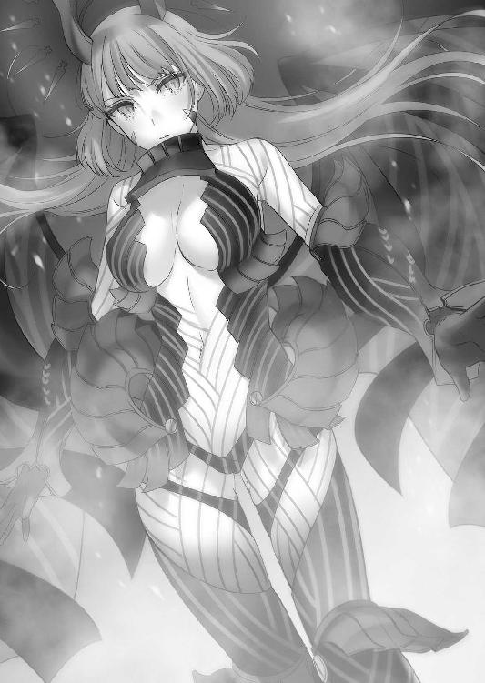
《研究所にはお前達が一番近い。敵はまだ我々が結界装置の破壊を目論んでいると気づいていない。幾分手薄だろう。辿り着いたら入口を確保、俺の到着を待て》
「......お言葉ですが鐵隊長、時は一刻を争います。我々を先に突入させてもらえないでしょうか？」
桜花が進言すると、隼人は黙り込んだ。
彼に意見する時は、どんな状況でも緊張が走る。エグゼ時代の感覚が蘇るようだった。
《......できるという確証はあるのか？》
隼人が鋭い声で問う。
敵を突破し、結界の発生装置を破壊。その上、捕虜の救出も行わなければならない。
だが、桜花は自信を持って答えた。
「やれます。今の私達なら」
《わかった。ならば俺は敵の戦力を削いでからそちらへ向かう。お前達は先行しろ》
感情は読み取れなかったが、隼人が部下の意見を受け入れること自体が異例だった。
《鳳桜花》
「はい」
《──死ぬなよ》
短い気遣いの言葉に、桜花のやる気は頂点に達する。鐵隼人という隊長は以前からこうなのだ。厳しく冷徹な印象を与えるが、その実人一倍部下のことを考えている。
冷たくも温かくもない人間だが、彼の部下への態度は噓が無く、平等だ。
だからこそ、彼の言葉は部下にやる気を与えてくれる。
「了解です！」
桜花は力強く答えて、通信を終了した。
猛スピードで角を曲がると、前方に敵影を確認。
「──止まれ......！」
桜花の指示に従い、京夜とジープが停止する。
うさぎがジープの助手席から顔を出し、双眼鏡で敵の機影を確認する。
「兵士が一〇名、英雄が五体......ワイバーン型の機械竜が一。まずいですわね」
「無駄な戦闘は避けたい。回り込もう」
桜花が提案した時、京夜が前へ出た。
「ここから回り込んだら一〇分以上のロスだ......俺がやる。てめぇらは先に行け」
意外な提案に、うさぎは目を丸くした。
桜花は一瞬判断に迷う。ここで京夜という戦力を割くのは得策ではないからだ。
「あんたが命令しても俺は聞かないぜ。あいつらは俺の獲物だ」
京夜はネロを肩に担いで、敵を睨んだ。
「見りゃわかんだろ......俺達の中隊を襲った連中だ。悠々とご帰還の最中ってこった」
「............」
「俺はあんたと違って復讐を迷ったりしねぇ。ここで連中を潰す。仲間の仇だ」
ぎらつく瞳に、もはや理性はほとんど残されていなかった。
今までの自分を見ているようで、桜花の心は痛んだ。
「さっさと行け。時間ねぇんだろうが」
敵へ向かおうとする京夜の背中に、桜花は声をかけた。
「......霧ヶ谷、私の提案を覚えているか？」
「............」
「あれは噓ではない。お前が望むなら、私達は吉水を救うために全力で手を貸そう。理事長の下にいては絶対に彼女を救えない......あの男が誰かを救うために行動することは決してない」
京夜が一度だけ足を止めて、深くため息を吐いた。
「......んなことはわかってんだ。でもこれ以外に明を生きながらえさせる方法がねぇんだよ。俺は戦うしか道が残ってねぇ......たとえ奴の羊に成り下がったとしてもな」
折れない京夜に、桜花は歯がゆい気持ちをそのまま言葉で吐き出す。
「永遠に利用されたまま終わるのか!? 方法が無いなら探せばいいではないか！」
「............」
「一緒に来い！ まだお前にも別の道があるはずだ！」
桜花の説得に、京夜は横顔を向けて乾いた笑みを浮かべる。
「じゃああんたは、俺と草薙が肩並べて一緒に戦えるとでも思ってんのか？ 俺も御免だし、あいつだって御免だろうよ。言っとくが、俺はあいつの妹を殺そうとしたことに後悔なんかしてねぇ。あそこであのバケモノを殺しとかなかったのは最悪の選択だ......特にあの妹にとっちゃ、殺されていた方が確実に幸せだったろうさ」
京夜は自嘲するように鼻を鳴らして、首を横に振る。
「こんなもんは綺麗事だな。俺はただ異端への復讐心であいつの妹を殺そうとしただけだ......偽るつもりはさらさらねぇよ」
京夜は話を終わらせて、重い足取りで敵へと向かって行く。
「行けよ。仲間を失って俺みたいになりたくねぇなら、せいぜい急いで救ってこい」
京夜の中に渦巻くものが復讐だけとは、桜花にはとても思えなかった。
しかし、今は言い争っている暇は無い。ここを直進できれば、研究所へは最短ルートでいけるのだ。これ以上京夜の申し出を拒む理由は見つからなかった。
桜花はうさぎ達へ合図を送り、翼をはためかせる。
そして、京夜の真横を高速で通り過ぎて前だけを見据えた。
「──私が敵の気を逸らす、西園寺達は霧ヶ谷の射撃後に敵を突破しろ！」
地面スレスレを飛び、敵へ接近。
英雄達がこちらへ振り返ろうとした瞬間、桜花は上空へ急上昇。
敵の視線が桜花へ向けられ、ジープが走り出したその瞬間、
「トリプルスレッド──スラッグショット！」
京夜がショットガンを大砲へと変形させ、敵の軍勢に放った。
機関銃のような勢いで、高密度の魔弾が敵を襲う。
桜花達はその隙に敵を突破し、研究所への最短ルートを確保するのだった。
＊＊＊
回転する砲身を元の形へ戻し、京夜は目を閉じて息を吸った。
横を通り過ぎる瞬間、桜花は京夜へ一言だけ呟いていった。
──諦めるな、と。
「............」
天を仰ぎ、朝焼けに白み始めた星空へ、疲れ切った瞳を向ける。
もしかしたら、あるいは──
あるいは、そういう未来もあったのかもしれないと思う。
あの時颯月の手を取らずにいたら、草薙タケルや鳳桜花と共に、吉水明を救う手立てを探している未来が、あってもおかしくはなかった。
邪道になど落ちず、まっとうに明を救うために戦えたのかもしれない。
でも、すでに自分は颯月の手を取ってしまった。明の延命のためにネロと契約したことで得たものは、終わりのない復讐の人生。この復讐心が消えてしまえば、恐らく明の命は即座に尽きるだろう。
そして颯月を裏切れば、ネロとの契約を解除されかねない。
最初の選択の時点で、もう後戻りなどできはしないのだ。
もはや全てを振り切る以外に道はない。
ただ、少し。
ほんの少しだけ、あり得たかもしれない未来に、胸が締めつけられた。
「──......さぁて！」
砲撃の煙が晴れたことで、残存している敵を確認する。
英雄が三体。兵士が五人。機械竜が一匹。
「上々だ。なかなかに滾る布陣じゃねぇか......なあ、おい、そうだろクソ銃」
《うんうん。でもご主人、治癒無しでまともに機能すると思ってんの？ ドラゴンブレスくらったらさすがのネロも泣いてごめんなさいしたくなるよ？》
「うるせぇ、んなもん全部避けりゃいいんだろうッ！」
口角を歪め、京夜は真っ正面から敵へ突っ込んだ。
右手に融合された大砲に魔力を集束させ、チャージしつつ地面を疾走。
敵の猛烈な弾幕をかいくぐり、獲物に食らいつく狼の如く、機械竜の喉笛へ向けて跳躍。
「消し飛べ異端共が！」
大砲が放たれた瞬間、周囲一帯は深緑の魔力に埋もれた。
復讐鬼は止まらない。ひたすらに我が道を歩む。
その先に、たとえ絶望しか待っていなくとも。
京夜を置いて、桜花達は研究所への道を急ぐ。
爆発と銃撃戦の音が、遠くから残響のように聞こえている。隼人や京夜が暴れているおかげか、そちらに敵が引きつけられて桜花達の進む道は手薄だった。
この好機を逃すわけにはいかない。
「第五研究所が見えてきましたわ！」
うさぎが指差す方向へ目を向けると、エルフ復元実験の際に破壊されたセントラルタワーが見えた。
「杉波はまだ無事か？」
「ええ......でも、魔女が尋問で強制的にこちらの情報を自白させているみたいですわ。杉波の番が来てしまったら、こちらの奇襲もバレてしまいます」
魔女......ラフメーカーで間違いないだろう。
奴の魔法ならば、情報をしゃべらせることなど容易い。
「急ごう！」
桜花は魔力を翼へと回して加速し、ジープはアクセル全開で通りを行く。
現地に敵がどれだけいるかわからないが、今は突き進む他無い。曲がりくねった路地を抜け、大通りへと出て右折。工場地帯通りを直進すると、やがて前方に研究所の入口が見えてきた。半壊して崩れた外壁は過去に訪れた時のまま。審問会によって調査が行われた後に閉鎖されていたはずだったが、敵の襲来と同時に占拠されてしまっていた。
灰色都市をいっそう灰色たらしめている荒廃した風景。
その中央に座すのは──一匹の巨竜だった。
「機械竜......大型ですわ！」
三〇メートルはあろうかという身体は、桜花達のいる位置からでも巨大に見える。
近づけば、それはもはや小高い丘のようであろう。
蛇のような姿形だが、その胴体の太さたるや鯨のようだ。
《あの形状、ウィルムか......翼は無いが少々厄介だぞ。きゃつらはブレスだけでなく魔法も使う》
ドラゴンが人間の言語を理解し、魔法を使用したという記録は残っている。ブレスによる攻撃、魔法による補助、そして竜の鱗が実現する防御力は最新鋭の現代兵器を用いても破壊するのは困難だと言われている。
だが、その肉体を構築しているのは機械だ。竜の鱗はどこにもない。
《......ほう、やるか主よ》
「当然だ。防御が魔法だけならば私達の敵ではない」
ドラゴンの使用する防護魔法は一つしかない。
《王者の領域》
『竜』属性魔力だけが可能とする、人間には使用不可能な魔法。竜の鱗を擬似的に魔力で構築。広範囲に覆うように展開することで結界と成す竜魔法だ。
だが、強度こそ竜の鱗に匹敵していようと、所詮魔法には変わりない。
術式さえ頭に入っていればどんなに強固な魔法であろうと、ヴラドならば貫ける。
「止まっている暇は無い──一気に貫く！」
《承知！》
桜花はパイルバンカーを右腕に集中展開し、背後に巨大な魔法陣を出現させる。
多重術式により巨大魔法陣の周辺に、同じ紋様の小さな魔法陣を次々に生み出していく。
スピードをそのままに、桜花は突貫する。
機械竜が顔を上げたかと思えば、大きく裂けた口を開放した。
直進する。桜花は赤い稲妻を伴いながら力強く翼を羽ばたかせた。
そして、
「──《血界の覇者》！」
腕を振りかぶると同時に、己が魔法の全てを放出した。
魔法陣がひときわ輝くと、機械竜の上空と真下に空間の歪みが発生。
地響きと共に現れたのは、鋭く尖った杭の雨と針の筵。それらは機械竜の防護魔法を容易く突き破り、巨大な胴体を串刺しにしてその場に固定させた。
さらには無数に展開された小型魔法陣から弾幕のごとく杭が放出され、機械竜を襲う。
全方位からの不可避の攻撃。巨体ならばなおのこと、その全てを身に受けてしまう。
あますところなく全身を串刺しにされたところへ、桜花本体が懐へ飛び込もうと接近。
だが機械竜は、王者の証たるアギトを閉じることなく、ドラゴンブレスを放った。
「はああああああああああああっ！」
まっすぐに放射されたドラゴンブレスに向かって、桜花は深紅の杭を撃ち放つ。
衝突する魔力と魔力。その対決は拮抗すらしなかった。全身全霊の《伯爵の牙》は、竜属性の波をものともせずにウィルムの口内へくらいついた。
《我がアギト、とくと味わえ！》
ヴラドの雄叫びと同時に、桜花はドラゴンの口の中へ突っ込んだ。
桜花はそのままドラゴンの頭を突き破って──外へ。
すさまじい炸裂音が轟き、ドラゴンの動きが停止する。身体にまとわりついた竜属性の魔力を翼の羽ばたきで吹き飛ばし、桜花はゆっくりと地面に着地する。
頭部を貫かれたドラゴンは声もなく身体を震わせると、一度だけ天を仰いで倒れ伏した。
竜の討伐を終えても、気を休めている暇はない。遅れてやってきたジープは研究所の入口で急停止。騎士団二人とうさぎは、急いでジープから飛び降りてきた。
「ここはわたくし達が守りますわ！ 鳳は捕虜の救出と結界装置の破壊を！」
新型の銃を構えながら、うさぎが桜花に希望を託す。
「わたくしなら大丈夫ですわ。杉波が作ったこの銃があれば、敵が集まってきてもしばらくは持ちこたえられるはずです！」
こちらに背を向けるうさぎの姿を見つめながら、桜花は頷く。
「......頼んだ。何かあればすぐに連絡しろ」
「はいっ、鳳もご武運を！」
「他の二人も、西園寺の援護を頼む！」
桜花が言うと、騎士団の二名は胸部アーマーを拳で叩いた。
「任せときな。あんたらに救われた命だ......この恩は同じ命で返させてもらう」
「こんな可愛いお嬢さんを守れるなんて、騎士団冥利に尽きるってもんだ。仲間のこと、頼んだぜ！」
二人の激励に頷いて、桜花は自分の行くべき道を睨んだ。
目的は結界発生装置の破壊と捕虜の救出だ。敵の討伐ではない。
（今度は決して......間違えない！）
背中を預けられる仲間のいることのありがたさ。守るべき者がいることの喜び。
もう自分は、復讐のためだけに生きる鬼ではない。
たとえどんなに憎い相手が目の前にいたとしても、よそ見などするものか。
魂に活を入れ、桜花は己の戦場へ飛び込んだ。
最終章 隣を歩く
＊＊＊
「マリ！ 本当にこっちで合ってるのか!?」
タケルは灰色都市を走りながらマリを問いただした。
カナリアは真横を走っており、マリはタケルにお姫様だっこをされていた。
空を飛ぶと敵に見つかる可能性が高いため、仕方なくこうして腕に抱いているのである。
マリはニヘニヘと笑いながら、問いかけを右から左へ聞き流し、タケルの胸に顔を埋めて悦に浸っていた。
「えへ、えへへ......魔導学園で一歩リードできるかなぁとか淡い期待を抱いてたものの、幼女にお株を奪われ苦節一か月......まさか帰ってきた時にこんな美味しい思いができるなんて～、えへへへへへへ、しゃーわせ～」
横を走っていたカナリアが、マリの鼻を指で思い切り弾いた。
「ひでぶー！ だにずんのよ......！」
「デレデレするな。じょーきょー考えろ。マリの案内、ほんとに大丈夫なのか？」
涙目でふがふがと鼻を押さえるマリに、カナリアは目を線にしながらタケルと同じ問いをした。マリは不服そうにしながら、口を尖らせる。
「ふぬぅん......第五研究所でしょ？ 合ってるわよ、あたしの土地勘信じなさいよね」
「前に来たとき迷ってたから信憑性の欠片もねぇぞ......」
タケルが不安そうに言うと、マリはわかりやすいくらいに狼狽した。
「だ、だぁいじょぉぶだってー！ あの時は地下道だったから迷ってただけなんだからね!? ここをまっすぐ行けば見えてくるってばっ」
いまいち信じられないマリの自信に不安が増す。
流から三五小隊の現状を聞かされて、タケルは焦っていた。
（敵が鳳の仇なら......できればそばにいてやりたい。隣を歩くって言ったんだ......あいつを一人で戦わせるわけにはいかない）
これまで短くない時間を一緒に過ごして、ようやく桜花の心を凍てつかせていた氷が溶けたのだ。半分背負い、隣を歩くと約束した。
復讐を果たす時に、桜花の隣にいるのは自分でなければならない。
焦燥感が募る中、カナリアがタケルへ横目を向けてくる。
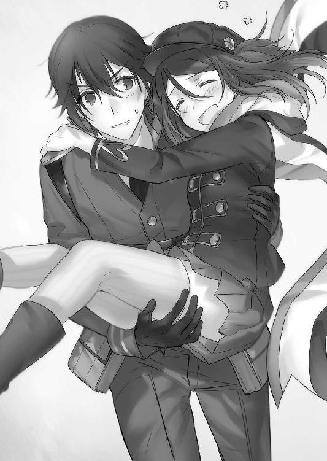
「よくわからないけど、切り抜けたらどうする？ カナ達はどの勢力につく？」
「ちょっと！ 今そんなこと考えてる場合!?」
「マリがゆーな」
カナリアがマリにいちいちツッコミを入れる。
タケルは前を向いたまま彼女の質問に答える。
「仲間を集めた後、一度生徒会長達と合流する。反体制派の隠れ家ってのがあるらしいから、そこへ向かおう」
「そいつら、規模どれくらい？」
「よくわからねぇけど......いろんな組織の反体制派が集まってるらしい。幻想教団とか、倫理委員会とか、異端審問会とかいろいろだ。生徒会長から話を聞いてから、今後俺たちがどうすべきか決めるつもりだ」
「つまりノープラン......まあ、カナは杉波斑鳩にせっしょくできればそれでいい」
そっぽを向いて、カナリアは複雑そうに目を伏せる。斑鳩と話をすべきだと説得して、カナリアは外側の世界についてきた。その願いはなんとしても叶えてやりたい。
だがその前に、一つだけ確認しておかなければならないことがあった。
「お前達、今のうちに言っておきたいことがある」
神妙な声に、二人はタケルを見た。
「これからはきっと、周りは敵だらけになる。やらなくちゃいけないことは山積みだ。そしてその大半が......俺の問題だ」
「「............」」
「キセキを助け出す以上、審問会側との戦闘は避けられないと思う。それはつまり」
一度足を止めて、タケルは言った。
「──世界を敵に回すってことだ」
覚悟を決めた顔で、タケルは続ける。
「お前達が俺を助けてくれるのは嬉しいし、信じてる。でも、もし本当に命を失いそうな場面に出くわしたら......必ず自分を優先してくれ」
「「............」」
「お前達にはお前達の目的があるんだ。それを果たすまでは絶対に死ぬな。卑怯だろうが薄情だろうが、何が何でも生きてくれ」
言い終えて、タケルは走ることに集中した。
カナリアとマリはタケルの顔を見つめつつ、ため息を吐いた。
「カナはタケル助けるなんて言ってない。そのつもりもない。ただよくわからないけど、一つ言えることある」
「言いたいことはわかったわ。タケルにしてはまともな台詞だと思う。でも一つだけ、こっちからもいい？」
タケルが怪訝そうにすると二人はじと目を向けながら、声をそろえて言った。
「「お前もな」」
こればっかりは、まったくもってその通りだった。
＊＊＊
第五研究所の入口は、敷地が開けている。便宜上、抗魔素材の採掘場も兼ねていることから元々あった建物を崩して整地されているのだ。
うさぎは開けた場所でジープの積み荷を降ろしながら、仲間の報告に耳を傾ける。
《南南西の路地......敵を確認。英雄三体、そっちへ向かった》
《南東の旧国道からも来やがった......こっちは五体だ。あと一分ぐらいでそっちでも視認できるはずだ》
「......了解ですわ」
うさぎは偵察に出た騎士団二名からの報告を受けても冷静だった。
ジープに積んでいた大量の弾薬を下ろし、斑鳩の開発した銃にマガジンを装塡する。
今一度銃の表面を見てみると、『Rabbit Fang』という名前が彫られていた。
《うさぎ、もう一度説明するけど......あんたのその銃、私がサポートしないとまともに機能しないから覚えておいてね。今はまだ生きてるけど、一分後に平気でいられるかはわからない......もし銃が使えなくなったら、その時は逃げなさい》
斑鳩が銃を通してうさぎに忠告する。
「了解......ところで、本当に通常弾を抗魔加工弾にして撃ち出せるんですの？」
うさぎが問うと、斑鳩はクスリと笑った。
《撃てるわよ。どんな素材だろうが、賢者の石で別の物質に作り替えることができるの。鉄だろうが鉛だろうが金だろうが、ミスリル弾やＷＣ弾に変換できるわ》
「にわかに信じられませんけど......杉波が言うなら本当なんでしょうね」
《人工魔導遺産だから本当は火薬は必要ないんだけど、魔力切れした場合は火薬でも撃てるように作ってある。ただ、おかげで熱暴走しやすいから注意して》
賢者の石が埋め込まれた人工魔導遺産......聞いているだけで頭が痛くなってくる代物だった。もし審問会にバレようものなら即監獄送りである。
おまけにこの......通常弾の他にケースに収納されていた虹色と灰色に光る弾丸。
うさぎはこの弾丸の説明を聞いた時、ぞっとした。
虹色の方はともかく、灰色の弾丸はできることなら使いたくはなかった。騎士団の二人を離れたビルの屋上に配置させたのは、この弾丸を使用する場合を考慮してのことだった。
《もうすぐそっちに現れるぞ！ 俺達が牽制している隙にやっちまってくれ！》
報告を聞いた途端、緊張が走る。うさぎは小さく息を吸い、止めた。
地面に伏せてバイポットを展開。銃身を水平に構えてスコープをのぞき込む。
大通りの中間。左右の道が合流する地点に、合計八体の英雄が姿を現した。
《敵の装甲素材、わかる？》
「アダマンチウム製ですわね」
《了解。転化素材、ダリウム》
斑鳩の言霊に応じて、銃がかすかに振動する。今まさに、通常の弾薬がアダマンチウムに対して有用なダリウム製へと変異しているのだろう。
まだ撃つ時ではない。三〇〇メートルまで引き寄せ、牽制の直後に一気に沈めるのだ。
（あと五秒）
秒読みを開始したうさぎは、冷静に敵を待ち構える。
（四、三、二、一────今！）
うさぎのカウント終了と同時に、道の両サイドのビル屋上から機関銃の弾丸が英雄に降り注ぐ。敵がホバリングを止めて上へ銃を向けようとした時、うさぎの射撃が開始された。
止まった敵の身体の中央へ照準を合わせて、引き金を絞る。
刹那、落雷のような轟音と共に弾丸が発射された。
弾丸は一直線に英雄一体の右肩へ直撃し、貫通。
狙いはずれたが、うさぎは気にしない。
《悪いわね。まだ射撃の調整済んでないの》
「問題ないですわ」
短く言って、うさぎは八体へ向かって連射した。
八発中、四発が命中。八体の内五体を沈め、一体の足を吹き飛ばした。
（センターより二ミリ下）
レティクルを銃の癖に合わせる。なおかつ風速を読み、弾道を計算する。
（──ここですわ）
敵がこちらへ向けてレールガンを放ってくる。
真上を魔弾が通り過ぎ、背後の壁にぶつかって破裂する。破片が飛び散る中、瓦礫に埋もれそうになりながらも、うさぎは瞼すら閉じずに照準を合わせ続けた。
そして──
「──......ッ！」
息を止め、正確な射撃を行った。放った弾を全て、敵の頭部へ直撃させたのである。
わずかに視線を下げて、うさぎは銃を確認する。跳ね上がりは無いが、後方への反動はすさまじく、肩が外れそうだった。魔力発射による反動がここまでとは少々意外である。
威力は申し分ない。胴体に当てて魔導竜騎兵を一撃で破壊できるライフルはこの銃くらいのものだろう。抗魔加工弾に変換できる性能は狙撃手としては至高の一品だ。
「ちょっとじゃじゃ馬ですがいい銃ですわ」
《あんたにあわせて作ったのよ。当然でしょ》
「でも、いかんせん反動と銃声が大きいですわね......」
これでは周りの敵が集まってきてしまう。案の定、大通りの両サイドの小道から、すぐにまた新たな敵が姿を現した。
計五体。
《敵がまとまっている時は極光弾を使いなさい》
言われた通り、直接弾を装塡して中央の敵に狙いを定めて撃ち放つ。
虹色の弾丸はきらめくような光を帯びながら敵の胸部に着弾。
英雄の一体が仰向けに倒れようとした瞬間、装甲の内側から極光色の魔力が爆発した。他四体にも誘爆して、一撃で三体の英雄を屠ることに成功した。
「さすが二階堂の魔法ですわ」
極光弾。その名の通り、マリの極光魔法を吸魔素材に吸収させて呪符化させたものである。マリがタケルと共に対魔導学園を離れる前に、新兵器開発のために斑鳩が協力させていたとのことだった。
すえ恐ろしいまでの威力を発揮する極光弾が排莢され、さらなる増援を迎え撃つ。騎士団二名がいい仕事をしてくれるため、敵の注意が逸れて初撃を確実に当てることができた。
だが、敵もそう馬鹿ではない。戦闘の音を聞きつけてますます集まってきていた。
敵は騎士団二名の牽制を無視して防護魔法を使用、うさぎに突っ込んでくる機体が三体。
《ガジェットのグレネードランチャーを使いなさい》
斑鳩に言われた通り、うさぎは銃身の下に装着されているグレネードランチャーを装塡。弾はスモークだが、銃の中で賢者の石が構造を作り替え始める。
そして敵との距離が五〇メートル付近になった時、うさぎは両サイドの建物にグレネードを適当にぶち当てた。
途端、きらめく赤褐色の煙が拡散する。
煙に巻かれたものの、英雄は構わずこちらへ突っ込んできた。
うさぎはダリウム弾で追撃。防護魔法を張っていたはずの英雄の身体に、うさぎの弾丸が直撃する。抗魔効果の高い緋緋色金にグレネードの中身を変換し、魔力減退塵として散布させることで敵の防護魔法を無力化させたのである。
うさぎ達は順調に研究所入口を防衛し続けた。
（よし！ この調子なら──！）
なんとか桜花が戻ってくるまで持ちこたえられる。
そう思った時、
《──ドラゴンだ!! うさぎちゃん逃げろォ！》
騎士団の叫び声がインカムから轟き、彼がいたビルが玩具のようになぎ倒された。
一瞬にして仲間の命が奪われ、うさぎは絶句する。
崩れたビルの向こう側から現れたのは、三つ首の巨大な機械竜。
首の数こそ少ないが、その姿は神話に登場するハイドラそのものだった。
怯んでいる暇はない。ハイドラは機械の身体を這いずらせてこちらへ向かってくる。
うさぎは震える手で極光弾を装塡し、残り全てを叩き込んだ。
巨大すぎるその身体には焼け石に水。ハイドラを倒すには圧倒的に弾数が足りない。
《反物質弾を使いなさい！》
「......で、でもっ、味方を巻き込んでしまいますっ！」
敵の近くのビルにはまだ騎士団の一人が残っている。
ここであの弾を使用すれば、間違いなく近隣のビルごと消滅してしまうだろう。
撃つわけにはいかないと心に決めて、うさぎは通常弾で応戦しようとしたが、突然ハイドラの後頭部に爆発が起こった。
ハイドラの注意が背後へ向く。
《うさぎちゃん......撃つんだ》
ハイドラの背後で、ビルから出てきた騎士団の一人が、使い捨てのロケットランチャーの筒を投げ捨てている姿があった。
続けて、彼は敵の目を自分に向けるために機関銃をハイドラめがけて放つ。
《撃ってくれ！ ここでこいつらを止めなければ全て無駄になる！》
弾が切れ、今度はハンドガンで応戦する騎士団の姿に、うさぎは迷いを見せる。
気づけばハイドラだけでなく、新たにやってきた英雄達も騎士団へと急行していた。
《仲間のことは頼んだぞ！》
その言葉を聞いて、うさぎは悲痛な顔を上げた。
素早くバックパックから灰色に輝く銃弾を取り出し、装塡。
トリガーに震える指をかけ、そして、
「......っ、了解！」
涙で滲み、ぶれそうになる照準をハイドラの背中へ合わせ、引き金を絞った。
弾頭はドラゴンブレスが放たれる直前に着弾。
着弾と同時に、うさぎの前方に見える風景が光に飲まれた。
消滅という名の光の濁流。うさぎが衝撃に吹き飛ばされたのはその直後だった。
エルフ復元実験阻止のために、斑鳩がエルフ細胞を用いて使用した魔法、《対消滅》。細胞の一部を保存していた斑鳩が賢者の石によりエルフ化して、反物質の極々微量を弾頭に真空固定させたものだった。
爆撃にさらされたような衝撃で壁に打ちつけられて、うさぎは意識を失いそうになった。
「......ぐ......まだ、眠るわけには......！」
気を振り絞り、銃を杖にしてうさぎは立ち上がる。
爆煙の中で、瓦礫と化した建物を警戒する。取りこぼした敵は無い。斑鳩の《対消滅》の破壊は、たとえどんな装甲素材だろうとかき消すのだ。
──しかし、敵の増援はこれで終わりではなかった。瓦礫の向こうから押し寄せるワイバーン型の機械竜が二匹、冷たい機械の瞳でうさぎを捕捉していた。
「......もう極光弾も反物質弾もありません！ 敵の装甲素材はオリハルコンです！ 変換を願いますわ！」
《............》
「杉波......どうしたのです!?」
《ごめん、うさぎ。どうやら、私はここまでみたい》
斑鳩の緊迫した声に、うさぎの胸の鼓動が跳ね上がった。
《......今、敵が目の前にいて、微笑んでる》
斑鳩は冷静だ。どんな状況でも超然としている。
何もかも悟ったような斑鳩の雰囲気が、うさぎは昔から苦手だった。
《あんたは生き残りなさいよ。せめて草薙にちゃんと好きだって──》
声が途切れ、手に持っていた銃が振動を止めてしまう。
「杉波......？ 杉波！」
呼びかけても声は返ってこない。冷たい銃がそこにあるだけだった。
絶望的な状況に打ちのめされる。
「......っ......負ける......もんですか！」
だが、うさぎはマガジンを装塡し、銃のグリップを握りしめる。
騎士団の二人に託されたのだ、諦めるわけにはいかない。桜花は必ず斑鳩が殺される前に救出してくれるはずだ。自分のすべきことは、入口を死守すること。
弾丸が残っている限り。この銃がある限り。
この身が健在である限り──戦いを放棄してなるものか。
タケルが帰ってくるまでは、絶対に死ぬものか。
「わたくしが、仲間を守るんです！」
うさぎは歯を食いしばり、銃を連射した。
ミスリル加工弾のみでは機械竜に傷をつけることすらできない。そんなことはうさぎもよくわかっている。それでもこの場所を動くことはできない。ドラゴンが口を開き、翼を広げて飛び立つ。上空からうさぎの姿を見下ろしながら、息吹を口の中で輝かせる。
そして──
「草薙諸刃流──八岐大蛇！」
──瑠璃色の影が、ワイバーンを脳天から八等分に斬り裂いた。
「《極光の砲弾》！」
──ブレスを放たんとしていたもう一匹のワイバーンの脇腹を虹色の魔砲弾が抉る。
大きく身体をブレさせて、あらぬ方向へワイバーンがドラゴンブレスを放つ。
「草薙諸刃流──蟷螂坂！」
さらに、上空より飛来した青い髪の影がワイバーンの頭を粉砕する。
竜属性の魔力をまき散らしながら、機械竜は爆発した。一瞬にして二匹のドラゴンが倒されたことに放心してしまう。
自分は、夢でも見ているのだろうか？
うさぎは爆炎と煙の中で、その姿を確かに見た。
「......ま、まさか......噓......？」
地面に銃を置き、うさぎは涙を浮かべながらよろよろと歩き出す。
歩調は次第に早くなり、やがて走り出した。
「──っ......遅い！ 遅いですわ！」
走った先には、彼がいる。生きているのか死んでいるのかもわからず、何の連絡も寄こさずにどこかへ行ってしまった彼がいる。
瑠璃色の刀を鞘に収めて、堂々とうさぎの方へ向かってくるその少年に、うさぎは──
「どうやら間に合ったみたいだな。大丈夫か、うさ──おぉっ!?」
ゆうに五メートル近くの距離をジャンプして、彼の身体に抱きついた。
タケルは咄嗟に魔女狩り化を解除して、しっかりとうさぎを抱きとめた。
「っとと......う、うさぎ？」
胸の中で顔を埋めてくるうさぎの頭を撫でながら、タケルは少し戸惑ってしまう。
うさぎは顔を赤くして、涙を溜めながら愛おしそうにタケルへ頰をすり寄せた。
「......おかえりなさい......くさなぎぃ......」
安堵しきった声で、うさぎはタケルの帰りを祝福する。
困惑しつつも柔らかい笑みを浮かべ、タケルはゆっくりとうさぎの頭を撫でた。
「......ただいま。待たせてごめんな」
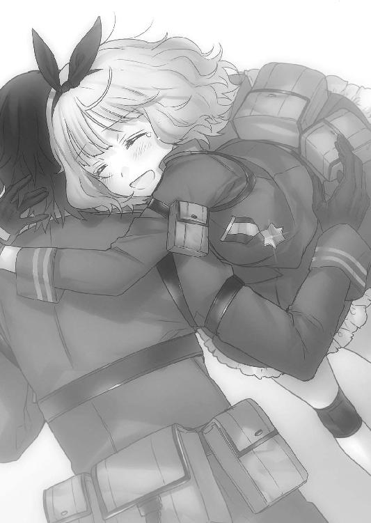
タケルは、自分も涙ぐみそうになるのを必死で堪えていた。
二人が抱き合っていると、横から帽子を被った女がうさぎと同じように抱きついてくる。
「たっだいまー！ タケル～！」
ずっと一緒にいたのに何故か抱きついてきたマリに、タケルはぽかんとした。
「......え」
「......あれ!?」
「いや、なんでお前まで......」
「えー！ ここはおんなじように頭撫でるとこでしょ!?」
さあ！ と、マリが要求してくるので、納得いかないまま仕方なく頭を撫でてやる。
マリは満足そうに笑って、「よろしい！」と無い胸を張った。
タケルは、なんだこいつ、という顔である。
うさぎがタケルから離れて、涙を拭いながらマリを見る。
「二階堂も、よく無事で帰ってきてくれましたわ......本当に」
タケルに続いてマリにも抱きつくうさぎ。マリは少し驚いた様子だったが、すぐに顔を綻ばせてうさぎを抱きしめ返した。
「うんっ、ただいまうさぎちゃん。あたし、約束守ったよっ」
ほっぺたにすりすりしてくるマリを拒絶せずに、うさぎも安らいだように笑った。
和んだ空気で再会を喜んでいる三人の横で、カナリアがじと目を向ける。
「......なんだこれ、タケルハーレム？」
「ひ、人聞きの悪いこと言うんじゃねーよっ。仲間同士で再会を喜んでるだけだっ」
「別になんでもいいけど、こんなことしてる場合と違う」
ぷいっとそっぽを向きながらカナリアが言うと、うさぎが彼女を見て首を傾げた。
「あの......この方は？」
「説明あと。私、とりあえず味方。それだけ覚えてればいい。タケル、急がないと」
カナリアの催促に頷いて、タケルはうさぎの肩に手を置いた。
「状況は生徒会長から聞いてる。杉波と鳳は？」
「......杉波は敵に捕らわれていますわ。鳳は捕虜の救出と結界発生装置を破壊しに、研究所の中へ」
タケルは一瞬目を細めたが、冷静にうさぎの説明に耳を傾けていた。
「ラピス」
タケルが相棒の名を呼ぶと、すぅと浮かび上がるように真横にラピスが姿を現す。
「鳳と杉波の位置を探ってほしい」
「すでに判明しています。第五研究所セントラルタワーの地下に、捕虜複数名と共に杉波様がおられます。鳳様は現在、地下へ侵入したところのようです」
「さすがだな。仕事が早くて助かるぜ」
「もう一つ。後方より敵の増援が迫っています。審問会勢に奇襲を仕掛けていた残りすべてが標的を第五研究所......私達に変えたようです。敵に我々の目的を知られてしまったようですね。大部分を鐵隼人様が片付けたようですが、まだかなりの数が残っています」
ラピスの報告を聞いて、うさぎはうつむいた。
きっと敵が斑鳩から情報を引き出してしまったに違いない。うさぎが不安に押しつぶされそうになっているのに気づいたのか、タケルはぽんとうさぎの頭に手を置いた。
「大丈夫だ。俺が必ず助ける」
「......草薙」
「安心しろ。マリ、カナリア、悪いんだが......」
タケルが呼ぶと、二人はすでに背を向けていた。
「わかってるって。あたしらはここで足止めよね？ ちゃちゃっと行ってあいつら連れて帰ってきなさいよね」
「ん。ここ、死守すればいいんだな？ マリ、足引っ張るなよ」
「へたれエルフがよく言うわよ」
「へ、へたれ!? へたれって言ったか!? なんでへたれ!?」
いがみ合いながら、マリは魔法陣を展開し、カナリアはレーヴァテインを抜き放った。
それを確認してから、タケルは再びうさぎへ向き直る。
「うさぎは二人の援護をしてやってくれ。ここは頼んだぞ」
うさぎは少しだけ名残惜しそうにしたが、下唇を軽く嚙んでタケルの要求に強く頷いた。
「二人をお願いいたしますわ」
「おう。任せとけ」
タケルはそう言って、第五研究所へ身体を向ける。
そして、手を前へ掲げ、目を閉じた。
「征くぜ......ラピス」
「はい。宿主」
息をゆっくりと吐き出して、タケルはその言霊を紡ぐ。
「限りなき願いをもって──」
戦いの狼煙を上げるために。
「──魔女に与える鉄槌を！」
瑠璃色の装甲を纏うその背中を見て、うさぎは自分も再び戦いへ赴くのだった。
＊＊＊
第五研究所の地下施設は、幻想生物の耐久度などを調べるための実験場となっている。
見た目はまるで闘技場のようで、壁のいたるところに爪痕や血の染みができていた。
実験場の中央には、巨大な水晶が置かれている。表面に墨のような黒い文字の羅列が流動しており、魔導の産物であることが一目でわかる。
「～♪」
重低音を響かせる水晶のそばには、鼻歌を歌いながら子供のように足をパタつかせる女性がいた。彼女は椅子に座り、膝の上に古びた絵本を広げて楽しげに読書をしていた。
本のタイトルは『カナリアのおうち』だった。
「......素敵な物語。このカナリアという小鳥は、幸せなまま天国へ行けたのね」
女性は本を閉じ、表紙を愛しそうに撫でる。
「ハッピーエンド大好き......やっぱり人は、笑いながら死にたいものね。あなた達もそう思うでしょ？」
にっこりと微笑みながら、彼女は──ラフメーカーは周りを見た。
周りは一面、臓物と血に充ち満ちていた。まるで獣が食い散らかしたような人間の残骸が転がっている。どれが誰の部品なのかも定かではないが、確かなのは元の人間であった者達はお互いに殺し合い、喰らい合ったということだけだ。
審問官だけでなく、純血の徒もかなりの割合で混じっていた。
ほとんどがラフメーカー、ミムラス・ヴァレンシュタインの部下だった者達だ。
皆一様に歪み一つ無い満面の笑みを浮かべて死んでいた。
「笑って死ねたんだもの......幸せよね？」
慈愛に満ちた声音で語りかけるも、死者は口を開かない。
──ラフメーカーという猟奇殺人者が人を殺すのは、偏に善意からだった。『赤い蝶の虫籠』で肉体も心も破壊された彼女は、一つの教訓を植えつけられたのである。
『どんなに辛くても笑っていなければならない。じゃないと天国へ行けないぞ』
調教師達は子供に言い聞かせるように優しく言って、彼女を痛めつけた。
『どんなに残酷な目にあおうと、笑って死ねた人間だけが神様に誉めてもらえる。笑いながら死ぬことは人間にとってこの世の何よりも幸せなことだ』
そう言って、調教師達は彼女に人を殺させる術を学ばせた。
虫籠の調教師達は彼女の魔力属性と、子供の思考を理解していた。
『輝』属性は、およそ殺しには向かない強化支援魔法を得意としている。
だが、強化魔法も行き過ぎれば人の命を奪うのだ。消える間際の蠟燭のごとく潜在能力を発揮させて自滅させることで、彼女を殺し屋として育て上げたのである。人を殺すという行為をネガティブに捉えぬよう、笑顔というキーワードを用いてポジティブな印象として植えつけ、自分が悪いことをしているという認識を与えぬよう教育してきた。
その結果生まれたのが、虫籠ですらもてあますほどのサイコキラーだった。
依頼が無い限り人を殺してはならないと言い聞かせられてきたが、虫籠という首輪を失った今、彼女の慈善活動を止められる者はいなかった。だから幻想教団は彼女の特異な性能を上手く利用するために記憶を封印し、純血の徒の魔女として育て直したのである。
エリザが戦場に彼女を投下したのは、実のところ厄介払いのようなものだった。
ウェストサイドにとってもラフメーカーはコントロール不能な兵器そのものだ。
人々に苦しみながら笑って死んでもらいたい。苦痛の渦中にある笑顔の死が人にとっての最上の幸福ならば、みんなにそれを与えてあげたい。それだけの純粋な願いのもとに誰彼構わず殺してしまう彼女は、幻想教団にとってホーンテッドよりも厄介な存在だった。
「私もこの戦いが終わったら、あなた達のように逝けると思うわ。絶望を味わいながら笑って逝けたなら......きっと私も天国へ行けるはずだものね？ 辛いことが何一つ無い場所に、行けるはずだものね？」
瞳が涙を流していることに気づいて、ラフメーカーは笑うことに努めた。
「泣いちゃダメ......私に死を与えてくれる存在がようやく現れたのよ......その時に笑っていられたら、きっと私は天国へ行けるんだから」
希望に瞳が輝きを取り戻す。涙は消え失せ、爛々と輝く光が宿っていた。
「......もう少しの辛抱なんだから、ほら......もうすぐ、あの子がやってくるわ」
両手を天井へ向けて広げ、希望を迎え入れるように天を仰ぐ。
死体と血の海の中、救いに向かって手を伸ばしたその直後。
──待ち焦がれていた彼女は、やってきた。
＊＊＊
地下に侵入した桜花は、足下に空洞が広がっているとわかると、牙で床を粉砕した。
桜花の身体は実験場へと躍り出て、隕石のように床に着地した。死体の数々に何が起こったのか察しながらも、桜花は顔を上げて己が敵を捕捉する。
椅子に座りながらニコニコとこちらを見ている、憎き敵。
「待ってたわよ、桜花」
曇り一つない笑顔がそこにある。
桜花は立ち上がり、ゆっくりと彼女へと向かって歩き始めた。
二度目の対峙。憎しみは変わらず心をかき乱していたが、桜花は迷わず尋ねる。
「......捕虜はどこだ」
「いるじゃない。あなたの足下に」
「遺体の数が合わない。どこだ」
ラフメーカーの挑発を受け流し、鋭く睨みつけながら望む情報だけを要求する。
ラフメーカーは桜花の殺意を笑顔で包み込みながら、ゆっくりと椅子から腰を上げた。
「取り繕ってもダメよ。あなたの憎しみは今も私の肌を震わせている。復讐したいのはわかっているわ」
「............」
「でもどうして笑っていないの？ 憎い相手を殺せるというのに、どうして笑顔じゃないの？ 嬉しいんでしょう？ 私に会えて」
「............」
「私ね、この戦いで使い捨てにされる予定なの。だからね？ せっかくだから、あなたに殺されてあげようと思うのよ。だから笑って殺してくれなきゃダメよ？ 憎しみに歪んだ顔のまま殺されてなんかあげないんだから。ほら、笑って？」
両手を広げて歓迎するように、ラフメーカーは桜花のそばまでやってくる。
目の前、息がかかるほどの距離に吐き気を催す微笑みがある。今すぐにでも殺してやりたい。今すぐ八つ裂きにして、死んだ家族以上の苦しみを与えて殺してやりたい。
そうしないのは仲間を救うという目的があることと、一つの違和感のせいだった。
「一つ聞きたい。わからないことがある」
「なぁに？」
「──貴様、本当にラフメーカーか？」
自分の存在を疑われて、ラフメーカーは瞼を何度も開け閉めした。
「自分の仇の顔を忘れたの？」
「いいや。お前は私の家族を殺した憎き仇だ」
「なら、その質問にどういう意味があるの？」
「私が聞いているのは、貴様が私の仇かどうかではない。貴様は本当にあの猟奇殺人者のラフメーカーなのかと聞いている」
ラフメーカーはわけがわからず首を傾げた。
桜花は淡々と続ける。
「私の知っているラフメーカーは狂っていた。ただの狂人だった」
「狂ってなんかいないわよ。私はただ、全ての人々に笑顔のまま死んでほしいだけ。笑顔で死ねれば天国に行けるんだもの。みんなにそれをわかってほしいの」
彼女の人を殺す動機は狂気の沙汰だが、桜花は彼女の一言だけを肯定する。
数多くの凶悪犯や猟奇殺人者と対峙し、屠ってきた経験の上で肯定する。
「そうだ。今の貴様は狂ってなどいない。目的を持った狂人は、自ら死を望んだりはしないのだからな」
一瞬だけ、ラフメーカーの頰が痙攣した。桜花はその一瞬の変化を見逃さなかった。
「人々を笑顔のまま殺すことが目的だと言ったな？ では、何故死を受け入れようとする？ 何故私を挑発し、私に殺されようとする？ まだ苦しみ足搔き、絶望の中でも必死で生きている哀れな子羊は大勢いるぞ。彼らを救わずに、自分が先に死を望むのは狂人としておかしいとは思わないか？」
桜花はラフメーカーの穴を突く。
元々は狂人であったが、何かが変わってしまった彼女の傷を抉る。
桜花は手に持っていた一枚の手紙をラフメーカーの胸に押しつけた。
ラフメーカーは桜花に押されて少し後ずさりながら、手紙を開く。
「仲間が回収したある人物の遺書だ。遺書の内容から察するに、その人物は貴様の記憶を封印し、白紙の状態からまともに教育し直した。そうだろう？」
「............」
「......そして、ラフメーカーという貴様の中の闇を消し去ることができなかったことに絶望し、愛する義理の娘の行く末を見ていられず自殺した」
手紙の文字に目を落とし、硬直するラフメーカーに桜花は追い打ちをかける。
「だが、彼の善意は無駄ではなかった。貴様にまともな価値観や人並みの幸せを与えることには、実のところ成功していたのだからな」
ラフメーカーが顔を上げ、無表情に桜花を見た。
桜花はラフメーカーを睨んだまま、彼女を指さして言い放つ。
「貴様が死を望むのは、ラフメーカーとしての記憶に耐えられないからだ。それはそうだ、狂っていれば話は別だが、普通の人間には到底耐えられる記憶ではない。悲しみ、苦しみ、罪悪感、後悔......そういった感情が、今の貴様にはある。だから死を望む」
「............」
「貴様はもはやあの頃のラフメーカーではない。ミムラス・ヴァレンシュタインという、かつてラフメーカーだったことのある哀れな罪人だ」
桜花は口元に弧を描き、嘲るようにラフメーカーを──ミムラスを見下した。
「狂人ぶるのはもうやめろ。殺してやる気が無くなるぞ」
崖際に追い詰めるような一言に、ミムラスはうつむいて顔に影を落とした。
手に握られた遺書が、くしゃりと音を立てて潰れる。肩は震え、唇もかすかに嗚咽のような声を奏でていた。
されど、残骸といえども彼女がラフメーカーであることに変わりはない。
途端に口角を歪め、高らかに笑った。
「──あははははははははははははははは！ 馬鹿な子......何言ってるの？ 私はラフメーカーよ。殺したくないんだったらお望み通り生きてあげるわ。あなたにも笑顔を与えて天国へ連れて行ってあげる！ あなたの言う通り、それが私の使命だものねぇ！」
後方へ桜花から距離を取り、赤い蝶の羽根を生やした。
桜花が足下に地響きを感じた瞬間、実験場の壁際にあるシャッターが勢いよく開いた。
現れたのは魔導竜騎兵。数にして一〇体。
そしてその全てが禍々しい魔力を身体から溢れさせていた。
オオオオオオオオオオオオオオオオオオオオオオオオオオォ！
背筋を凍らせるような大咆哮は、機械音声と呼ぶにはあまりに有機的だった。装甲の表面は血管のようなものが浮かび上がり、脈動している。人工筋肉は異常に盛り上がり、装甲を内側からひしゃげさせているほどだった。
『輝』属性魔法の強化を受けている証拠だ。
名無しの英雄のようだが、強化を受けているのであれば脅威度は高い。
《強化魔法『進撃の輝き』か......魔法の核を貫通するには外殻を破壊せよ》
牙をむき出しにして、桜花は両腕にパイルバンカーを出現させた。
同じタイミングで、四方から目にも留まらぬ速さで英雄達が襲いかかってきた。
そのスピードは草薙タケルの掃魔刀に匹敵する。
一瞬目を離しただけで、敵は目の前に迫っていた。
《怯むな。今の汝は幻想生物の王、真祖の吸血鬼ぞ》
そう。ヴラドの言う通り、今の桜花は肉体だけでなく脳までもが人間ではない。
ドラゴン同様に吸血鬼が幻想生物の中で王と呼ばれるのは、単純な脅威度ではなく繁殖力の高さも含まれている。
だが、無論使徒と真祖とでは出来が違う。
魔女狩り戦争以前、人類を滅ぼしかけた血を喰らう種族にとって──英雄と呼ばれる程度の存在は、吸血鬼という炎に飛び込む蛾のようなものだった。
飛びかかってきた二体のレールブレードを、桜花は容易く肘の杭で受け止める。
両手が塞がった状態のところへ剣を振り上げた一体が突っ込んでくるが、それを桜花はただの前蹴りで吹き飛ばした。
蹴り飛ばされた英雄の後ろにいた二体も、巻き添えをくらって遠くの壁に激突する。
背後から五体が接近。嗅覚だけでなく五感全てが人間を超越した桜花にとって、敵の攻撃は止まって見える上に、次にどう動くかが手に取るようにわかった。
二体のレールブレードを弾き返し、続けざまに背後の五体へ振り向くと両腕のパイルバンカーを射出する。
──ギャゴッ！ 歪な音を立ててスライドしながら上腕部より放たれた巨大な杭は、二体の英雄の身体を突き破り、粉砕した。
「──はあッ！」
桜花は上腕部から突き出たままの杭を剣のように振るい、残り三体を吹き飛ばす。
《やれやれ、魔法を貫通させるまでもないではないか》
頭の中でヴラドが呆れたような声を出す。
彼の言うとおりだからといって、桜花は気を抜いたりはしない。
今ので確実に破壊できたのは二体のみだ。
「捕虜達は近くにいるはずだ。範囲魔法を使うわけにはいかない」
《さよう。牙にて潰せ》
「そのつもりだ」
《だが注意せよ。血が切れれば吸血鬼化は解除される。もってあと一〇分である》
「ああ──手早く終わらせる！」
ヴラドの忠告を聞き終えるとパイルバンカーを構え、壁に突っ込んだ英雄へと攻撃を開始した。翼を広げ上へ飛び、天井を蹴ってからの急降下。流星のような勢いで腕を振り上げ、《伯爵の牙》を放つ。
英雄も黙ってはいない。
身震いするほど恐ろしい雄叫びを上げながら、瓦礫の中から魔弾を放ってきた。
その威力たるや、ヴラドの牙と同程度。しかし無論、当たればの話である。
「ッ！」
身体をひねり、空中で飛行の軌道を変えて回避。
魔弾とすれ違うと同時に、桜花は牙で二体の敵を粉砕した。
外れた魔弾は天井にぶち当たると爆発し、瓦礫を実験場へ降り注がせる。戦いを長引かせるのがなおさらまずくなった。英雄が暴れればこの場所は地中に埋もれてしまう。
桜花は素早く身体を翻すと、再び空へ舞い上がり、眼下の敵を捕捉する。
残り六体全てが、桜花へレールガンの銃口を向けていた。
（──止めてみせる！）
咄嗟にパイルバンカーを銃形態に戻し、眼下の敵へ物理特化杭のワラキアを連射する。
銃形態であろうと、杭の威力は通常時の五倍に跳ね上がっている。桜花は六体全てのレールガンに攻撃を直撃させ、銃内部にチャージされた魔力を暴発させることに成功した。
爆風が髪を揺らす中、桜花は煙に包まれた実験場に目を凝らす。
桜花が目を見開いた瞬間、六体がジェットを噴かし一斉に煙の中から跳躍してきた。
武器も持たず、機械でできた腕を振り上げて空中での格闘戦を挑んでくる。
桜花はすぐさま銃をパイルバンカーへ換装し、応戦。
最初の一体を牙で屠ったが、背後から襲いかかってきた三体には、
「《血濡れの付与》......！」
魔力を足へと集束させ、魔法を付与させた回し蹴りをお見舞いした。接近戦用魔法であるため範囲は狭いが、桜花の足はレーザーのような切れ味を帯びて英雄三体の身体を真っ二つにした。
（残り二体！）
回し蹴りの勢いで半回転したまま、桜花は残りの敵へ対処しようと翼を広げた。
その時、一体が魔力を噴射させて天井付近まで急上昇。その動きに桜花が釣られている間に、もう一体が真下から足を摑もうと左手を伸ばしてきた。
桜花は踵落としで真下から手を伸ばす敵の頭を粉砕しようと試みたが、狙いがわずかにずれて踵は敵の肩に直撃。身体を切り裂いたものの、仕留めるまでには至らない。
敵は桜花の足を摑み、凄まじい力で桜花を引き寄せ、右腕で彼女の身体をがっしりと羽交い締めにする。桜花と英雄はバランスを失って落下。仰向けの状態で地面へ墜落した。
「くっ......！」
英雄は落下後も決して離そうとせず、もがく桜花の身体を締め上げる。強化された人工筋肉がブチブチとちぎれる音を響かせながら、英雄は笑い声のようなうなり声を上げた。
桜花は天井へ急上昇した英雄の動きを警戒。
天井付近でジェットを噴かしつつ、英雄は巨大な魔法陣を浮かび上がらせていた。
桜花は魔法陣の紋様を見て、奴が何をしようとしているのかを理解する。
保有魔力の全てを体内で濃縮させ、暴発させる魔法。
《散華》
敵は自爆を行い、地上に聳え立つタワーを実験場へ崩落させる気なのだ。
「......やら......せるかあああああああああ！」
桜花は全身の血流を加速させ、青い瞳を真っ赤に染めた。
身体を締めつけていた英雄の装甲に皹が入る。皹は一瞬で広がり、桜花は人工筋肉と金属骨格をもろともに引きちぎった。
腕を粉砕された英雄へ牙を叩きつけ、すぐさま翼を大きく広げて天井へ跳躍。
両腕の機構を解除し、右腕にのみ巨大なパイルバンカーを出現させる。
桜花は、自爆しようとしている敵へ杭を叩きつけた。
「《逆十字磔刑》！」
杭は英雄の身体を貫通。英雄の身体は粉みじんに吹っ飛び、残骸となって地上のラフメーカーのそばへ降り注いだ。
「............」
木の椅子に座り、ラフメーカーは桜花の戦いぶりを微笑みを浮かべながら眺めていた。
英雄の残骸が近くに降り注いでも動じることなく、桜花を視界へ捉え続けている。
真紅の翼を雄々しく広げて、桜花はラフメーカーの前に着地した。
そして、ラフメーカーの額に照準を合わせて銃を構える。
「何をしようと無駄だ。強化魔法程度で、今の私には太刀打ちできない」
桜花の言うことは正しい。強化魔法はどんなに凶悪な性能を持っていようが、所詮は支援でしかない。戦闘には不向きな魔法だ。まして今の桜花は生物としての次元が違う。
量産型の魔導竜騎兵程度では相手にならなかった。
「そうね......あなたは強い。認めるわ」
「............」
「それで？ どうするの？ 私を殺す？」
問われて、桜花は奥歯を嚙み締めつつも目を閉じて心を静めた。
長年の目標だった、仇を殺すということ。
それを放棄してまで、この女を生かしておく意味はあるのかと自問する。
「..................いいや」
桜花は感情を捨て、仲間を救うことと復讐を同時に果たすことのできる手段を選んだ。
「捕虜を解放し、投降しろ。貴様は殺さない。殺せば貴様の勝ちだからな」
「............」
「死にたい奴を殺したところで復讐を果たしたとは言えない。貴様は禁忌区域最奥監獄で、生きたまま果てるがいい」
桜花の決断に、ラフメーカーはくすくすと笑う。
それはまるで、子供が玩具を見て笑っているようだった。
「そ......あくまであなたは自分の気持ちに正直にならないのね。私を殺せば素直に笑えるはずなのに、もったいないことだわ」
ラフメーカーがゆっくりと顔を上げて、鑢で削ったような光の無い瞳を向ける。
「だったら思い出させてあげる、あなたの傷を」
笑顔と呼ぶにはあまりに歪な相貌は、まるでかつてのラフメーカーのようで──桜花は、その奇襲に気づかなかった。
腰部に鋭い痛みが走り、声を失う。呆然としながら肩越しから後ろを見ると、そこには白衣を着た少女が立っていた。虚ろな目をした黒髪の少女。手に持った銀色のナイフを、深々と桜花へ突きたてるその少女は......仲間であるはずの杉波斑鳩だった。
「すぎ......なみ......？」
斑鳩は蒼白の顔を桜花へむける。
そして、
「 笑え 」
あの時と同じように、ラフメーカーは最悪な命令を斑鳩に下した。
斑鳩は引きつった顔のまま、桜花へ笑顔を浮かべる。
ナイフが引き抜かれると、裂傷部から血の代わりに灰がこぼれ落ちた。
全身から力が抜けて、桜花は床に崩れ落ちた。
《霊銀か......！》
ヴラドが忌々しげに唸り声を上げると、ラフメーカーはニコニコと笑った。
「そう、吸血鬼の天敵。あなたの仲間すごいのね。どんな物質も別の物質に転換させられるなんて、夢のような力だわ」
ラフメーカーは椅子から立ち上がり、地面に膝をついた桜花のそばへやってくる。
そして頰を両手で包み込み、背中に赤い蝶の羽根を生やした。
「強化魔法を誤解しているようね。支援向きなのは事実だけれど、強化は突き詰めればどんなことだってできてしまうのよ」
「......が......ぅ」
「音を無くすのも強化。匂いを無くすのも強化。気配だって強化魔法で消せてしまう。そしてもっともっと突き詰めれば......」
桜花から手を離し、今度は斑鳩を後ろから抱きしめて、ラフメーカーは微笑んだ。
「古代魔法《強制執行》......身体を自由に動かすことだってできる」
《強制執行》とは、太古の戦争で強化魔法を発展させたことにより生まれた歴とした支援魔法だった。以前メフィストフェレスが使用しようとした《奴隷の歌》の原型と言われているが、厳密には効果が違う。この魔法は精神の掌握ではなく、肉体の掌握であり、必要とする魔力量は極々微量で済むのだ。
戦場で傷つき、動けなくなった兵士に無理やり戦闘を続行させるという非道な魔法である。過去の『輝』属性保持者の独裁者は、この魔法を使って多くの人間の自由を奪い、国を築いた。《憑依》同様に、禁術の一種として後世に術式が記録されてこなかった魔法だ。
審問会のデータベースにも残っていない。魅了でもなく、憑依でもなく、ただ純粋に他者の肉体へ命令を執行する。自由を奪い、思い通りにできてしまうという凶悪な力。
それをこの女は、絶望と苦痛の中で独自に編み出したのだ。
「今この子は、あなたのことが死んでしまった姉妹に見えているの。脳だって少し強化していじってあげれば、見えているものを別のものに置き換えられる」
「............っ！」
「この魔法はね、心はそのままなの。素敵よね。だって心を解放してあげちゃったら、苦しくないものね？ 笑顔は苦しみの中にあってこそ意味があるものだから」
興奮した様子で斑鳩の絶望的な状況をラフメーカーが語る。
「いす......か......」
灰にまみれたナイフを握り、斑鳩は涙を流しながら失われてしまった姉妹の名を呼ぶ。
彼女には、自分がナイフで刺した相手が桜花ではなく、伊砂に見えているのだ。
仲間に自分と同じ気持ちを味わわせようとする怨敵に、殺意が溢れる。
腰部の傷は普通の人間であったなら即死だ。腎臓が一つ灰になってしまっている。それでも桜花は立ち上がらずにはいられない。目の前の女を、許すわけにはいかないのだ。
ラフメーカーは桜花の形相を見て、瞳を輝かせた。
「いいわその調子。でもまだ終わりじゃないわよ？」
嬉々とした表情で唇を指で撫でた瞬間、桜花の見えている世界が一変した。
今まで見ていた実験場の風景が、錆が剝がれ落ちるように崩壊し、新たな風景に作り替えられていく。何の変哲も無い一軒家。テーブルとソファとテレビのあるリビングに、気づけば桜花は立っていた。
忘れようにも忘れられない風景だった。
地面に転がる二つの死体。血に赤く染まった絨毯。
そして──ラフメーカーに後ろから抱かれている妹の姿があった。
「......どうして......！」
呆然とする桜花の疑問に、ラフメーカーは答える。
「あなたはもう、私の魔法にかかっているのよ」
斑鳩に刺され地面に倒れた後、頰に触れられた時だろう。あの時、ラフメーカーは桜花へ《強制執行》をかけていたのだ。
桜花には今、斑鳩の姿が最愛の妹に見えている。
まるでトラウマの再現だった。全ての始まりの出来事が、再び目の前にある。またも訪れた絶望の瞬間に絶句する桜花へ、ラフメーカーはあの時と全く同じ笑顔を浮かべていた。
「......やめろ......」
ラフメーカーが何を考えているのかを理解して、桜花は震えた声を吐いた。
「......やめてくれ......！」
「ダメよ」
懇願を切り捨てて、ラフメーカーは困ったように笑った。
そして、桜花の銃を持った腕が意思に反して動き出す。
銃口は──妹の姿をした斑鳩へ。
「また同じことをしてあげれば、私を生かしたまま捕らえる気なんてなくなるわよね？」
「............！」
「この子を殺せば、あなたもよく理解できると思うのよ。ラフメーカーが存在し続けることが、どんなに世界にとって悲劇かということが、ね？」
桜花の中で、過去の感覚が蘇る。あの時もそうだった。どんなに嫌だと願っても、聞き入れてもらえない。どんなに心で拒んでも、身体が言うことを聞いてくれない。魔法により下された命令は完遂される。そしてラフメーカーは最後に告げるのだ。
「 笑え 」
心が闇に飲み込まれそうになる。絶望に落ちていく。
また、あれを味わうことになるのか？ 生きる意味を失い、復讐に縋って辛うじて生きてきた。その生き方を変えた一人の少年と、友人と呼べるようになった仲間達がいた。かつて孤独だった自分に家族の温かさを与えてくれた人々がいたように、凍てついた心を溶かしてくれた仲間がいた。
それをまた、自分の手で奪わされるのか？
そんなのは、嫌だ！
「......う......ああぁぁ......！」
桜花は牙をむき出しにして、ラフメーカーの命令に抗った。吸血鬼の力をフル稼働させて、筋肉を硬直させる。
「私は......！ もう二度と......失わない......！」
絶対に笑うものか。絶対に殺すものか。全存在をかけて抗ってみせる。メフィストの時もそうだったではないか。自分の身体は自分のものだ。誰にも渡さない。生きるも死ぬも、殺すも殺さないも、笑うも笑わないも自分が決める。
「......あなたは......そこまでして私に抗うのね」
ラフメーカーは桜花の抵抗に驚いていた。いまだかつて、《強制執行》の命令に逆らえた者はいない。身体を突き動かすのは心ではなく脳である。魂ではなく神経である。
その事実を覆す存在が目の前にいることが、ラフメーカーは信じられなかった。
彼女の瞳には、羨望が宿っていた。こんなにも気高く、純粋な心の強さを持つ人間になれていたのなら、自分の運命も違っていたのではないか？
ラフメーカーの瞳はそう語っていた。彼女は笑顔を消して、目を細めながら自分の手の平へ視線を落とす。
「......もしもあなたに魔力が宿っていて、私の方が後に生まれていたら......私とあなたは逆だったのかしらね」
「......ぐぅぅぅ！」
「認めるわ。あなたの言う通りよ。私は死にたい。記憶を封印されて、白紙の状態から再出発させられた私は......普通の人間に育ったわ。ラフメーカーの自分と新しい自分は別の人格じゃない。封印された記憶が蘇ったところで、ミムラスとして育った私の記憶が消えるわけじゃない。今の私には、普通の人間としての基盤がある」
奥歯から血を流して必死に耐える桜花へ、ラフメーカーは顔を歪めた。
唇は震え、今までの満面の笑みは完全に消え失せていた。
「だからこそ耐えられないのよ。私のしでかしてきたことは、殺人鬼以外のなんでもない。虫籠のせいにしたところでのうのうと生きてなんていけない。瞼を閉じるのが怖いの。いつだってあの地獄のような日々と歪んだ教育が鮮明に蘇るの。いまさら改心？ いまさら懺悔？ できるわけがないじゃない。私だってわけがわからないのよ......！ 人々に笑顔と死を与えてあげることに喜びを感じるのは事実だし天国はあるんだって信じているのも事実なの！ だけど罪深いと感じているのもそんなの間違いだと思っているのも事実なの！ この苦しみがあなたにわかる!? 絶対に矛盾してはいけないことに矛盾している私の気持ちがわかる!? こびりついて離れないのよ！ ラフメーカーとしての記憶と教育が私にまともでいることを許さない！」
ラフメーカーは涙を流しながら狂ったように自分の心情を吐露した。
「あなただってもう一度あの時の再現をしてあげれば、さすがに私を殺さずにはいられない......そうよね？ そうだよね？ そうだと言って、お願いだから......！」
頭を抱えて、ラフメーカーは首を振る。
さぞや混沌とした心境なのだろう。正義の自分と殺人鬼の自分。決して同一の人間であってはならない二つの自分が共存しているなど、地獄以外のなにものでもないだろう。ラフメーカーとしての自分が生きていることを許容できないほどに、ミムラス・ヴァレンシュタインという人間はまともな教育を受け、愛情を注がれて育てられてきたのだろう。
だが桜花はラフメーカーの言葉に耳を貸さない。聞く価値が無いと切り捨てる。
実にくだらない。何を被害者面をしているのだ。普通の人間？ 片腹が痛い。滑稽でたまらない。これほど腹の立つことがあろうものか。虫籠で散々な仕打ちを受け、殺人者として教育を受けてきたのはわかっている。一度心が壊されたのも承知の上だ。でもだからといってはいそうですかと許せるわけがない。
子供ではないのだ。もはや狂ってもいないのだ。
白紙にされて、いちから父親の愛情を注がれて育ったのだ。
ならば何故──この女はラフメーカーを続けている？
理由など見え透いていて笑えてくる。
桜花は苦悶の中で、口角をつり上げた。
いいだろう。笑えと望まれたのだ。笑ってやろうではないか。
「貴様と私が逆だった可能性など皆無だ......！ まともだと......？ ただ、惰弱なだけだろう......！ 懺悔する勇気も無く、死を望むだけの臆病者が！」
身体が言うことを聞かないのに、必死に表情を作ってラフメーカーを罵倒する。
「まともな人間ならば自分のしてきたことに対する償いをするさ......！ だが貴様はどうだ！ 償おうとすることも抗うこともせず、上の命令に従って再び惨殺に手を貸しているではないか！ ラフメーカーとしての記憶と経験に、貴様は負けたのだ！」
「......っっ、うるさい......それ以上は......！」
「結局虫籠から出られないでいる......！ 悪いと思ったのならば自首でもすればよかったのだ！ なのに貴様は、さらなる悪行を重ねて私に裁きを与えられることを望んでいる！ 自ら贖罪するのではなく、この私に裁かれることを望んでいる！ これほどの卑怯者がいるものか！ 貴様はラフメーカーにもなりきれず、ミムラスにもなりきれなかった──クズのような犯罪者だ!!」
虚を突かれたように絶句して、ラフメーカーは後ずさる。
両手で顔を覆い、笑顔でいられない自分の姿を隠す。
そして、
「──笑え......！ 笑え、笑え笑え笑え笑え笑え笑え笑え笑え笑え笑え笑え笑え笑え笑え笑え笑え笑え笑え笑え笑え笑え笑え笑え笑え笑え笑え笑え笑え笑え笑え笑え笑え笑え笑え笑え笑え笑え笑え笑え笑え笑え笑ええええええええええええ！」
指の隙間から白目を剝いた瞳を覗かせながら、ラフメーカーは蝶の羽根を震わせて、白光する巨大な魔法陣を出現させた。
──ブツッ......！
突然、桜花の見ていた光景がブラックアウトした。
視界が完全に闇に落ちた。テレビの電源を落とすみたいに、五感の全てを停止させられた。魂の足搔きですらどうにもできない力でねじ伏せられた。
自分の息づかいすら聞こえない闇の中で、桜花はもがく。
まだ終わるわけにはいかない。まだ墜ちるわけにはいかない。
ダメだ。ダメだダメだダメだダメだ。
まだ守れていない。帰ってくるまで生き残ると皆で誓ったのに。
過去の記憶がフラッシュバックする。
大切な人々の顔が浮かんでは消えていく。
うさぎ、斑鳩、マリ、両親に妹、そして手を差し伸べてくるタケルの姿。
遠ざかって消えていく彼の幻影に手を伸ばして、桜花は闇の中で叫ぶ。声は出ず、身体の自由は利かず、心すら犯されてしまいそうになりながら、彼の名を呼ぶ。
「タケル......！」
感覚は無くとも、目から涙がこぼれ落ちたのがわかった。
会いたい。もう一度、彼の横を歩きたい。
そばにいてほしい。一人にしないでほしい。寂しい。
彼が行ってしまって、目を覚ました時からずっとそうだった。どんなに仲間を守ると気を張ってみせても、胸の中に穴が空いたようで寒くてたまらなかった。彼がいないことがこんなにも寂しいものだとは思わなかった。
「タケ......ル......！」
いつも自分自身にさえ強がってばかりで素直になれないくせに、こんな時ばかり正直だった。情けない。でもどうしようもない。
最後くらい。最後くらいは、彼のそばにいたかった。
だから助けを求めるでもなく、名前を呼ぶことしかできない。
「タケ......ル......！」
そばにいてほしいがために......彼の名を呼ぶ。
「タケル────ッ！」
隣を歩いてくれると約束してくれた少年を求めて、桜花は彼の名を叫んだ。
そして、
「桜花！」
──少年は、その求めに応えた。
その声が響いた瞬間、桜花の五感が復活し、風景が黄昏色の炎に包まれた。
砕け散った痛ましい思い出の中心に、彼が降り立つ。
雄々しく、猛々しく、剣を床の魔法陣に突き立てるようにして降ってきた。
着地の衝撃が頰を撫で、髪をたなびかせる。
一瞬にして何もかもが吹き飛んでいた。いや、何もかもが喰われていた。
ラフメーカーの魔法も、ずっと苦しくて苦しくてたまらなかったトラウマも、瑠璃色の刀身に喰い尽くされていった。
何もかも喰らい尽くされた世界の中心に、瑠璃色の装甲騎士が立っている。
装甲騎士は床に突き刺さった剣を抜くと、ラフメーカーへ切っ先を向け、桜花に言った。
「......すまん、遅れちまった」
その短い一言に、桜花は目の前の光景が夢ではないことをようやく自覚した。
「草薙......か？」
「おう。俺だ。約束したからな、復讐する時はそばにいるって」
「............」
「間に合ってよかった」
タケルは桜花へ笑顔を向ける。
肩から重たいものがスッと消え失せるような気持ちだった。代わりに胸の中に温かいものがこみ上げてくる。こんな安堵の中に今まで自分は身を置いていたのかと思うと、涙が出てくる。緊張続きだった戦場での生活に、彼のもたらす安堵は麻薬のようだった。
頭がしびれて、正常な思考が働かない。いつもそうなのだ。この男は、さんざん待たせておきながら、いざという時にだけ駆けつけてあっけなく仲間を救っていく。
「......ずるいぞ......お前」
頰は赤く染まり、涙でみっともなくなった顔を下に向けて、桜花は呟く。
「人が弱ってる時にだけ、何故そうもタイミング良く現れるのだ......」
恥ずかしくて涙をぬぐいながら、嬉しいくせに心にもない悪態を吐く。
するとタケルは、
「当たり前だろ。お前が弱ってるなら、俺はどんなとこからでも駆けつける」
背中を向けながら、真剣な声でそう言った。もう、桜花から何も言うことは無い。今はただ、彼の背中に全てをゆだねてしまいたかった。
「......お仲間？ あなたも、私を殺しに来てくれたの？」
魔法を喰い尽くされたラフメーカーが斑鳩から手を離し、憔悴した顔でタケルに問うた。
桜花の仇を、タケルは殺意を持って睨みつける。
彼の殺意を感じ取って、ラフメーカーは恍惚したように頰を緩めた。
だがその期待とは裏腹に、タケルは剣の切っ先を引いた。
「何を期待してるのか知らないが、お前を殺すかどうか決めるのは俺じゃねぇ」
ラフメーカーが死を求めていることを悟り、タケルは身を引いて桜花の後ろへ下がった。
桜花は驚きながらも、タケルの顔を見た。
タケルはまっすぐに桜花の視線を受け止めて、小さく頷く。
「お前が決めろ」
「............草薙」
重圧すら感じる言葉に、銃を持つ桜花の手が一瞬震えた。
同時に、ラフメーカーが苛立ち混じりに激昂する。
「やめなさい、その子は私を殺すつもりなんてないの！ あなたも私を殺してくれないなら、二人で殺し合わせてあげる......！ そうすれば勝った方が私を殺してくれるわ！」
片目を手で押さえながら、ラフメーカーは唇を撫でた。
再び魔法陣が出現し、《強制執行》が実行される。
「無駄だ」
タケルの冷たい声に従い、黄昏色の炎が実験場の中に溢れた。
──《神殺しの付与》──
この世のありとあらゆる魔導を無力化し、吸収し尽くす禁断の力。
ラフメーカーの魔法は、発動する前に炎に焼かれてかき消えた。結界発生装置の内部魔力すら吸い尽くし、炎はうなりを上げる。
付与の発動を予見したのか、ヴラドも桜花の吸血鬼化を解除させ、銃身も消失させた。
《くっ......忌々しいミスティルテインめ、使うなら使うと先に言わぬか！》
この炎が天敵であるのはレリックイーターも例外ではない。一月前にあの炎に晒されたヴラドは、魔力をほとんど吸収されてかなりのダメージを負ったのだ。
炎が燃え上がる中、タケルは装甲に包まれた琥珀色の目でラフメーカーを睨んだ。
「一〇秒、今からあんたは魔法が使えない。判決が出るまでそこで大人しくしてろ」
宣告されたラフメーカーは、魂すら燃やされそうな炎に戦慄いていた。
「............」
桜花は足のホルスターから使い慣れた拳銃を引き抜いて、グリップを強く握る。
迷いはあった。このままラフメーカーを生きながらえさせたとして、果たして家族の無念を晴らしたことになるのだろうか？ 奴のせいで死んでいった騎士団や純血の徒、そのほかの犠牲者達の手向けになるのだろうか？ 彼らはこの世でもっとも非道な強奪である死を与えられたのだ。だったら仇に同じ死を与えることこそ、弔いではないのか？
殺さなければ自己満足で終わってしまう。いや、まず奴を殺さなかった場合、自分は満足できるのか？ 晴れ晴れとした気持ちで生きていけるのか？
きっと、そんな未来は来ないだろう。傷は治りかけたとしても、時折夢に見て疼き、仇が生きていることに対して煮え切らない想いを抱くに違いない。
（ならば......いっそのこと......）
桜花は半身を引き、震える手で銃口をラフメーカーへ向けようとした。
その時、抱きしめるようにそっと銃を握る手にタケルの手が重ねられた。
彼は桜花と寄り添うように同じ銃を構えていた。
「きっと正解なんか無い......俺もそうだった。どっちを選んだってきっと苦しい。でも、自分の心に噓は吐くな。他の誰かじゃない、自分本位でいい。桜花、お前はどうしたい？」
「......私は......」
「照準はお前に任せた。でも──」
タケルはまっすぐに敵を見据えたまま、桜花に告げる。
「引き金は、俺が引く」
重ねられた手の温もりに、思わず涙がこぼれた。
タケルは半分背負うという尊い約束を、果たすつもりなのだ。
桜花は彼の胸に少しだけ顔を埋めて、切なそうな笑顔を浮かべた。
そして、引き金にかかったタケルの指に自分の指を重ねる。
「一緒がいい」
「............」
「半分じゃ嫌だ。全部、一緒がいい。これからもずっと......何もかも、一緒に背負いたい」
「............」
「全部......タケルと一緒がいい」
潤んだ桜花の瞳に、タケルは頷く。
そして二人は共に照準を定め──共に、引き金を絞った。
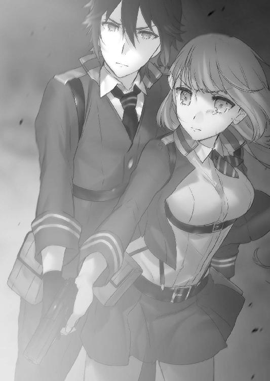
エピローグ
第五研究所の入口を防衛していたマリ、カナリア、うさぎは順調に敵を撃退し続けていたが、分散していた勢力のほとんどが集結したせいで休む間も無かった。
「ったくきりがないわね！ タケルの連絡はまだなの!?」
《さっきから魔力通信来ない。たぶん研究所、抗魔素材で作られてるせい》
《鳳からも連絡が無いですわ......》
「あぁもう！ いくらなんでも数が多すぎよ......！」
《極光の弾幕》を放ちながら悪態を吐くと、カナリアもその意見に同意を示す。
《エグゼの隊長が戦ってるの聞こえてた。すごい勢いで倒してたはず。この英雄の数、一個連隊程度の戦力違う。敵、そこまで竜騎兵やドラゴンの量産できてないはず》
不穏な物言いに舌打ちをしながら、マリは頭を切り換えて戦闘に集中した。
マリが極光輪を展開して空に飛び立ち、地上の敵をまとめて一掃しようとした時だった。
突然、遥か遠方からレーザーのようなものが何本も英雄達に降り注いだ。
「......え？」
《!? マリか!? おいっ、巻き込まれるとこだったぞ！》
マリが呆けていると、無線でカナリアの驚いたような声が届く。
「ち、違う。あたしじゃないよ」
首を横に振って否定すると、突然カナリアが息を吞んだ。
《──っ！ うさぎ！ マリ！ こっちきて隠れろ！》
マリは言われた通り、瓦礫の陰に滑り込むように隠れたカナリアの元へ降り立った。
遅れてうさぎもやってくる。
「どうしたんですの......？」
「何事よ？ 入口守んなくていいわけ？」
二人が訝しげにしていると、カナリアは忌々しげに瓦礫の隙間から空を見上げた。
「嫌な空気......レーヴァテインが泣いてる......」
長い耳を動かしながら不快そうにカナリアが言う。マリも周囲の魔力の波を感じ取ることに集中してみたところ、遠くから何かがこちらへ向かって飛んでくるのを感じた。
「っ......何、この魔力......気持ち悪い......」
感じ取った魔力の波に、マリは吐き気を催して口元を押さえた。
同時に、空を何かが飛んでくる音がする。
カナリアとうさぎが空に目を凝らすと、複数の人型の機影が飛行しているのが見えた。
ドラグーンではない。人間だ。
数は見る見るうちに増えて行く。
同時に、戦闘音がいたるところから響き始めた。
うさぎは銃のスコープをのぞき込んでその姿を拡大する。
「......あれは......レリックイーター？」
それは、鉄色をした装甲を身に纏った人間だった。タケルや桜花、京夜達と同じような魔女狩り化をした姿だ。エグゼの隊員かと思われたが、違う。同じ型の装甲を身に纏う人間が数十人単位で空を飛んでいるのだから、個別のレリックイーターを持つ正規のエグゼではない。
彼らは手持ちの銃を英雄や機械竜達へ撃ち放ち、軽々と屠っていく。
銃の表面に目を凝らすと、そこには《The Malleus Maleficarum Production ModelGuillotine》と彫られていた。
「......量産型のレリックイーター。審問会が作ってるって噂があった。幻想教団でも調査していたけど......完成してたのか」
カナリアが神妙な声で言った。
「量産型って......そんなもの作れるんですの？」
「まともな方法で作ったわけじゃないの、マリ見ればわかる」
カナリアの言う通り、マリは青い顔で頭を手で抱えている。
「何これ......魔力の音が、たくさんの人の悲鳴みたい......こんなの、感じたことないよ」
「きっと作ったの、アルケミストだ。審問会についたの、やっぱり本当だった」
カナリアが忌々しげに歯ぎしりをする。
量産型を身に纏った審問官の内何人かが、マリ達の近くまで飛んできて空中に滞空した。
微かに聞こえる話し声に、カナリアは耳を澄ませた。
「......見つかったか？」
「いや。だが三五試験小隊はこっちへ向かったらしい。このあたりにいるはずだ。探せ」
「最優先で捕縛すべきは草薙タケルでいいんだよな？ 小隊の他の連中は？」
「杉波斑鳩と二階堂マリの捕縛命令も出ている。他はどちらでも構わないそうだ」
「......くそっ、エグゼに入って最初の仕事が反逆者の捕縛かよ。せっかくレリックイーターで出撃したってのに......」
「文句を言うな。仕事にかかれ」
会話を終えて、審問官達が散り散りに飛んでいく。
カナリアは彼らの姿が見えなくなったのを確認して、立ち上がった。
「タケルと合流する──奴ら、私達捕まえる気。早く逃げないと」
想像以上に切迫した状況に、うさぎとマリは不安を抱きつつもカナリアの言うことに従った。
全てが終わった実験場に、桜花は立っている。
「............」
斑鳩は無事だ。結界発生装置も、タケルの《神殺しの付与》で無力化された。
もはやここには何もない。復讐は終わったのだ。
「............」
そう、桜花の復讐は終わった。
桜花はラフメーカーを殺すのではなく、やはり生かすことを選んだ。
ラフメーカーは四肢を撃ち抜かれ、床の上で芋虫のようにもがいている。
桜花はその姿を冷ややかに見下ろしていた。
「......なんでぇ......？ なんで、殺してくれないのよぉ......」
「............」
「もう、いやなの。この世界で私は存在してちゃいけないのに......どうして......！ いい加減に終わらせてよぉ......いつまで私は、こんな思いをし続けなくちゃいけないの？」
涙と血に濡れたその顔は、酷く哀れだ。
彼女が今まで自殺をしなかった理由は、それが逃げであることを理解していたからだろう。悪は悪として、被害者に滅ぼされるべき。裁く権利のある人間に裁かれてこそ、自分の罪は無くなるのだと考えていたのだろう。
桜花はその考え方を認めない。自殺が逃げならば、他人に裁きを求めることもまた逃げだからだ。何より、自分を殺してもらうために、憎しみを得るためだけにこの戦場で犠牲になった者達がいる。
結局この女は、贖罪のために他人を巻き込んで殺したのだ。
決して、まっとうな人間の考え方ではない。
ラフメーカーにもはや笑顔は無く、絶望に暮れたような顔で天井を見つめていた。
そして、不意に歯と歯の間に舌を挟んだ。
動きを予想していた桜花は目を見開き、ラフメーカーの口に指を突っ込んだ。
自殺すら止められて、ラフメーカーは涙を流す。桜花は指を嚙まれた痛みにぴくりとも表情を動かさず、ラフメーカーを見下ろしている。
そして、直接声に出してヴラドへあることを要求した。
「ヴラド、頼みがある」
《言ってみよ》
「もう一度......一瞬でいい。私を吸血鬼化させてほしい」
桜花の要求に、ヴラドは少し黙った。
ヴラドには桜花が何を考えているのかわかってしまったのだ。
《よいのか。そんなことをすれば、汚れた血を自らの身体へ受け入れることになるぞ》
「......いい。そのぐらいは背負うべきだと私は思う。人を呪わば穴二つと言うからな」
《......ふん、笑えぬ。心にもないことを言うでない》
ヴラドに図星を突かれて、桜花は苦笑した。
《復讐とはかくも醜いものだな......だが、この女の末路には丁度いいと、余も思う》
よかろう、と一言つけ加えて、ヴラドは桜花の身体を吸血鬼化させた。
深紅の翼が広げられ、ラフメーカーの身体を覆い隠す。
ラフメーカーの視界に入るのは、深紅の翼の陰になった桜花の青い瞳だけだった。
ラフメーカーが恐怖に悲鳴を上げそうになりながら震えていると、桜花は口を大きく開いた。美しく並んだ歯の中に、ひときわ尖った牙がある。
桜花はその牙を──ラフメーカーの首にあてがい、押し沈めた。
「あ、ぐ......ぅ！」
小さいうめき声が上がる中、桜花は彼女の血を吸い上げる。体内に彼女の血が入る瞬間、ラフメーカーとミムラス、両方の記憶が頭の中を駆け巡った。
「............」
途方もなく辛い記憶だった。心が壊れるような、痛みと悲しみがそこにあった。
だが桜花は、その痛みを甘んじて受け止める。
同じ記憶を味わってみても、桜花の魂は傷つきはしない。
彼女ほど桜花は弱くはない。質こそ違えど、この程度の痛みならばずっと味わってきた。
桜花は吸血に魔法の干渉を織り交ぜ、契約を紡ぐ。
吸血鬼のみが使用できる、主従の契約を。
吸血鬼に血を吸われて生き残った者は、同じ吸血鬼となる。誰もが知っている伝説。真祖と使徒。絶対の主従関係を築く忌むべき契約。吸血鬼が、繁殖力の高さから幻想生物の王と呼ばれる所以だ。
その契約は《強制執行》以上に堅い強制力を持っている。
桜花が牙を離すと、ラフメーカーは人間から吸血鬼へ身体が作り替えられていく痛みに身もだえた。桜花は苦しむラフメーカーを再び見下ろした。
「......貴様は今、私の下僕となった。もはや私に逆らうこともできなければ、自分で生き方や死に方を選ぶこともできない。貴様には、この世全ての命を奪うことができないように誓約を結ばせた。無論、全ての命とは貴様自身も含まれる」
「......!? そんっ......な」
「同時に、貴様が万が一罪を忘れて生きようとするのであれば、何度でもかつての記憶と私の憎しみを思い出すように暗示をかけた。お前はもはや罪から逃れられない」
絶望に暮れるというのは、まさに今のラフメーカーを言うのだろう。
闇に沈んでいくかのように、顔を強ばらせて頰を痙攣させていた。
桜花は冷ややかに彼女の絶望を眺めながら、静かに背を向けた。
吸血鬼化を解き、実験場の出口へ靴音を響かせて去っていく。
「永遠に生きろ......それが私から貴様へ果たす復讐だ」
「.........ぅ、うぁぁあ」
「いつでもどこでも見張っているぞ──ミムラス・ヴァレンシュタイン」
もう桜花は、彼女をラフメーカーとは呼ばなかった。
あそこにいるのはただの残骸だ。罪に潰されながら生きて行くしかない運命を背負わされた哀れな罪人だ。ラフメーカーは死んだ。もうどこにもいない。
桜花は彼女に永遠の苦しみを与えることで、復讐の完結としたのだ。
「............」
背筋を伸ばし、強い歩調で無言で歩く。
背後ではミムラスの絶叫と慟哭が響いていた。子供のように泣き叫び、殺してと懇願している。今まで殺してきた人々に謝り、桜花への謝罪を叫び、そして......助けを乞うように、亡き義父を呼んでいる。
「............」
拳を握り、奥歯を嚙んで、桜花はその声を振り払う。
前を向き、歩いて行く。下を向きそうになる顔を必死に前へ向けて、ひた歩く。
タケルの言う通りだった。殺すも殺さないも、どちらを選んでも辛い。苦しい。
それでも、選ばなければならなかった。どんなに相手が哀れでも、許せなかった。復讐を果たさないという結末は納得ができなかった。
だからこの痛みも、悲痛な叫びも、全て受け止めて──
──全てを背負って、桜花は前へ進むのだった。
実験場の入口で斑鳩を床に横たえさせ、タケルは桜花がやってくるのを待っていた。
結局仇を殺さなかった桜花は、銃を撃った後、あの女と二人きりにしてほしいとタケルに頼んだ。タケルは一緒にいると申し出たが、桜花は首を横に振った。
これから私がすることはとても醜いことだから、と。
『一人で背負うのは......これが最後だから』
優しく笑う桜花に、タケルはそれ以上強くは言えなかった。
胸がざわつき、落ち着かないまま桜花を待つ。
実験場のドアが開く音がしたのは、数分後のことだった。
タケルは顔を上げて桜花へ駆け寄った。
「桜花......」
桜花はうつむいたまま、小さく頷いた。
タケルは桜花の肩に手を置いて、深く息を吐く。
「......終わったんだな、これで......」
よかったな、とは言えなかった。タケルは復讐の虚しさをよく知っている。
どう声をかけたらいいかわからずタケルが口を噤んでいると、突然桜花がくすりと笑った。
「ふふ......桜花桜花と、私がいつ名前で呼んでいいと言ったのだ？」
「......悪い。なんか、切羽詰まると弾みで呼んじまうんだ」
「いや、桜花でいい。これからはそう呼んでくれると嬉しい」
桜花は短く息を吐き、腰に手を当てて姿勢を正した。
「さて、西園寺が入口を守ってくれているのだ。迎えに行かねばなっ」
はきはきとした声で言って、桜花はタケルの横を通り過ぎる。
「草薙は杉波を背負ってくれるか？ 私はお前ほど筋力が無いし、何より杉波はお前に負ぶってもらったほうが嬉しいだろうしな」
人差し指を立てて、桜花はタケルに背を向けてしゃべっていた。
声は明るい。
「そうだ、二階堂マリは無事か？ いや、あの図太い女なら無事だと確信しているのだが、相も変わらず下品なのかという意味で、無事かと問いたいのだが」
饒舌になりながら、桜花はタケルに話しかけ続ける。
タケルは悲しげに目を伏せて、桜花のそばへ寄った。
「ああ、西園寺も杉波も、こっちではよくやってくれていたぞ。実はな、タケルが対魔導学園を離れてからは、私が隊長代理をやっていたのだぞっ。大変なのだな......隊長というものは。審問官だったことはあるが、人の上に立った経験は無かったので実に苦労した。お前の大変さが身に染みてわかっ──」
「──もういい。わかったから」
突然、タケルは桜花の手を引いて、自分の胸に引き寄せた。
桜花は力なくタケルの胸に体重を預け、抱かれるままになる。
「馬鹿だな......お前さっき、ずっと一緒がいいって言ったばっかだろうが」
「............」
「こんな時くらい強がるな......お前は一人にしてくれって言ったけど、俺だってほんとは一緒にいたかったんだ。俺は背負うつもりでここまで来たんだぞ」
「..................」
「だからもう、頼むから我慢なんかすんなよ」
力を入れて抱きしめると、桜花はゆっくりと顔を上げた。
桜花は泣いていた。瞳いっぱいに涙をためて、迷子になった子供のように泣いていた。
今まで見てきたどんな桜花よりも弱々しい姿に、タケルの心は締めつけられる。
これが復讐心という鎧を脱いだ、桜花の本当の姿だった。
「──......ぜんぜん......気分が晴れなかったんだ......復讐、果たしても............何の達成感も、無かったんだ......っ」
嗚咽混じりに、桜花は自分の心の中を吐露した。
「ずっと夢見てきたのに......どうしてこんなに虚しいんだ？ どうしてこんなに胸が空っぽなんだ？ 今までずっとがんばってきたのに......ちゃんと、ちゃんとできたのに......なんでぇ......？」
タケルは顔を悲しみに染めながらも、桜花をきつく抱きしめ続ける。
「なんでこんなに......辛いんだ......タケル......！」
タケルは復讐を否定しない。復讐が虚しいだけとは思わない。
だけど、虚しさが残るのは事実なのだ。
「それはな桜花......お前が仇を討っても、お前の両親や、妹に会えるわけじゃないからだ。家族の無念を晴らしても、お前は生き続けなきゃいけないからだ」
仇を討っても死んだ人は蘇らない。
でも、復讐に意味が無いとは言わせない。復讐を果たしてゼロになることで、人は憎しみにとらわれず前を向いて歩いていけるのだから。
「安心しろ。お前には俺がついてる。お前が嫌だって言うまで、隣を歩き続ける。俺はそのために、お前と約束したんだ」
「......ぅ......ぅぅっ」
「仲間だってみんな一緒だ。お前にはもう家族はいないかもしれねぇけど、俺達がいる」
「......ぅわ......ぁ」
「俺は──お前の復讐を、虚しさだけで終わらせたりは絶対にしねぇから！」
桜花の中で、ダムが崩れた。
今まで涙を流すことはあっても、それは自分を叱咤しながらの涙だった。
今や、我慢などする必要は無い。堰を切ったように、桜花は泣いた。
声を上げ、心を悲しみに染めて、子供のように遠慮無くタケルの胸に顔を押し沈める。
タケルは桜花をひたすらに抱きしめた。
桜花は泣きはらした目でタケルの顔を見上げる。
そして、嗄れた声で一言、
「タケル......お前が隣にいてくれて、本当によかった......」
タケルにとって心から嬉しい言葉を残して、桜花は力尽きたようにその場で眠りに落ちてしまった。
「タケルー！」
マリが呼ぶ声がして、タケルは廊下の向こうへ視線を移す。
結局そのまま動けずに、マリ達がやってくるのを待つ形になってしまった。
カナリアとうさぎを引き連れて、マリは暗い廊下を駆けてくる。
マリとうさぎの顔は最初こそ笑顔だったが、近づくにつれてじと目になっていった。
「「............」」
「お、おう。よかったぜ、中に入ってきてくれて......外には魔力通信が届かないんだもんなぁまいったぜ。怪我無いか？ 大丈夫か？」
「「..................なんだそれは」」
マリとうさぎがじと目でタケルの腕を指さした。
苦笑いを浮かべるタケルの腕には、猫のように縮こまってしまった桜花が抱かれていた。
桜花は、タケルの胸に顔を埋めてスヤスヤと寝息を立てている。
「いやこれは......そのぉ......戦いに疲れて、俺が来たときには眠ってた、の、かなぁ？」
ものすごい歯切れの悪さでそう言うと、マリとうさぎは揃って舌打ちをした。
カナリアだけが、険しい顔で立っている。
「そ、それより早く脱出しないといけないんだろ？ 生徒会長との待ち合わせ場所まで地下道を通らなくちゃいけねぇんだ。マリ、案内頼めるか？ うさぎは先頭に立って敵を警戒してくれ」
「......別にいいけど、あんた帰ったら覚えておきなさいよね」
「同感ですわ。この件に関してはしっかりと言及させていただきますから覚悟しておいてくださいまし」
二人とも、視線と声がマジだった。久々に胃が痛い。
タケルは苦笑いをしつつ、険しい顔で突っ立っているカナリアへ視線を向ける。
カナリアは廊下の端で気を失っている斑鳩を睨んでいた。
「............」
彼女の瞳に渦巻くものは、憎しみだろう。伊砂と自分を置いてアルケミストから脱出した斑鳩を、カナリアが憎んでいるのは間違いない。
けれど、カナリアの心にあるものが憎しみだけではないと、タケルは信じていた。
「......カナリアは、斑鳩を運んでくれるか？」
タケルがそう言うと、カナリアが忌々しげな視線を向けてくる。
「カナにこの女を背負えって......？ 正気かタケル」
「ああ、頼むよ」
真顔で返すと、カナリアは目尻をつり上げてそっぽを向いてしまう。
「話は無事にここから脱出してから聞けばいい。今は逃げるのが最優先だ。他に背負えるのはお前しかいない」
本当のことをそのまま口にすると、カナリアは微かに瞳を揺らした。
「............カナリア」
もう一度名前を呼ぶと、カナリアは眉間に皺を寄せたまま目を閉じた。
そして数秒間を置いて、髪をもしゃもしゃとかきむしった。
「......わかった......やればいいんだろ、やれば」
ドスの利いた声で言いながら、カナリアは無造作に斑鳩を肩に担いだ。さすがエルフと言うべきか、わりと背の高い斑鳩を軽々と持ち上げていた。
ホッとしつつも、タケルはこれからのプランを皆に話す。
「よし......行くぞ。まずは安全を確保する。それから──」
メンバーに指示を下そうとした、その時。
「動くな──草薙タケル」
すくみ上がるような重い声が、タケルの名を呼んだ。
メンバーと共に戦々恐々としながら、声の方へ顔を向ける。
廊下の暗い闇の向こうから、回転式拳銃を持った男が姿を現した。
鐵隼人だ。まるで小隊の行く手を阻むように、こちらへやってくる。
「どこへ行くつもりだ。お前は今指名手配されている。容疑は脱獄と逃走幇助。そして審問会への反逆だ」
法の番人を具現したような台詞と声だった。
タケルの頰を、嫌な汗が伝う。
「......脱獄と逃走幇助は認めます。でも、まだ反逆したつもりはないんですがね」
「知っている。こんな容疑の羅列は詭弁だ。何の意味もないゴミだ」
意外な物言いに、タケルは顔をしかめた。
「だったら何で......俺達の前に立ちはだかるんですか」
「お前の存在が敵や反体制派の手に渡るのは危険だからだ」
「だから俺を捕らえると？ 審問官として、俺を審問会に引き渡すんですか？」
「いいや、違う。俺は審問官として、お前の存在を守るだけだ」
守ると言われて、ますます意外な気持ちになる。
「率直に言う。ミスティルテインを捨てろ。たとえお前とその剣が絆で結ばれていようと、それを利用しようとする者がいる以上、危険なことに変わりはない。審問官として、武装解除を要求する」
隼人の言っていることはどこまでも正しい。
だが、タケルははっきりと答えた。
「お断りします。俺はラピスを捨てるつもりはないし、誰かに利用されるつもりもない」
「............」
「俺は俺の考えで行動する。それだけです」
真剣に言い放つと、隼人は静かに目を閉じた。
「......そうか。ならば力尽くで止めるとしよう」
場に戦慄が走った瞬間、隼人が魔女狩り化を完了する。
タケルも慌てて桜花を床に下ろし、剣を構えて即座に魔女狩り化した。
両者が睨み合い、再び激闘を開始しようとする。
その時、唐突に実験場の入口の扉が開いた。
皆の視線がそちらへ移ると、そこには総勢二〇名の、騎士団の姿があった。
ほぼ全員怪我を負っており、憔悴している様子だった。
「......お前達は」
隼人が問うと、先頭の頭に包帯を巻いた男が敬礼をしてみせた。
「全員、第五防衛線第七中隊所属の者であります......鐵隊長」
二〇人の騎士団はぞろぞろとタケル達の横を通り過ぎると、三五小隊と隼人との間に割って入る。
まるで小隊メンバーを庇うように、騎士団達は隼人の前に立ちはだかった。
「何のつもりだ」
「この子達を、行かせてやってくれませんか。俺達は、この子らに命を救われたんです」
先頭の男が言うと、他の者達も次々と隼人へ言葉を投げかけた。
「この戦場で、ずっと一緒に戦ってきた仲間なんだ」「彼らは俺達の命を何度も助けてくれた」「一緒に同じ釜の飯を食ったんす。見逃してやってください」「ここを通りたいなら、俺達を撃ってからにしてくださいよ」「私を代わりに捕まえてください」「戦友を見捨てたくはないんです」
皆の声は切実なものだった。
「み、みなさん......っ」
うさぎが目に涙を浮かべて皆の背中を見つめている。
タケルはうさぎ達がこの戦場で多くの味方を作っていたことに驚いたが、それを誇らしく思った。雑魚小隊と揶揄されてきた学生生活とは違い、戦場には戦場にしかない絆があったのだ。
ひたすらに頭を下げる騎士団達を前に、隼人は銃を構えたままぴくりとも動かなかった。
十数秒の時が過ぎた頃、ようやく隼人は小さく息を吐いた。
そして、かたく一度だけ目を閉じると、静かに銃口を下げたのだ。
正直、意外な一面の連続にタケルは戸惑った。前に桜花が言っていた、部下想いだという隼人の評価を誤解していたわけではないが、こういったことに関しては自分を曲げない男だと思っていた。
感謝の言葉が飛び交う中、再び隼人は目を開けて、タケルを睨んだ。
「覚えておけ草薙タケル。審問会を離れるということは、世界を敵に回すということだ。この俺も、あるいはお前と戦うことになるかもしれない。それでもお前は、反体制派につくのか？」
「......まだそれはわかりません。ただ俺はもう、審問会にはいられない。妹を助けたいし、仲間をこれ以上理事長に利用されたくないんです」
「............」
「勝てるかどうかが問題じゃない。俺は大切な者のためなら、世界とだって戦いますよ」
自分の覚悟を口にしたタケルは、再び桜花を胸に抱いた。
その姿を見つめていた隼人の表情は、ほんの少しだけ、どこか懐かしそうだった。
あるいは気のせいだったかもしれない。感情を見せない隼人が、こんなにも人間味のある表情を浮かべることは無かった。まるでかつての自分を見ているような......自分もこうあれればよかったのにとでも言うような表情だった。
隼人は黙って踵を返すと、
「──行け。俺がお前達を守れるのは、これが最後だ」
そう述べて、タケル達の元を離れていった。
タケルはその背中に深々と頭を下げた。
そして騎士団達にお礼と別れを告げ、タケル達は地下道へ急いだ。
この先に、何が待っているのかはわからない。
反体制派の実態がどのようなものなのか。幻想教団と審問会との戦争の行く末はどうなるのか。キセキは今、どうなっているのか。
行く先には、いまだ薄闇が蔓延っている。
だが、
「みんな行くぞ！──走れ！」
タケルはもう迷わない。仲間と共に、抗い続けると決めていた。
この道の先に、たとえどんな悲劇が待っていようとも。
＊＊＊
アルケミスト社第一研究所の廊下を、鳳颯月は珍しく強い歩調で歩いていた。
彼の荒々しい靴音から感じられるのは苛立ちではなく、歓喜だった。
彼の真横を息を荒らげながら、杉波朱雀が追いかける。
彼女を横目で見ながら、颯月はニィと笑った。
「ほら、彼、帰ってきたでしょう？ 今回の賭けも私の勝ちですね」
颯月の自慢気な顔に、朱雀は子供のように本気で悔しがって地団駄を踏んだ。
「キー！ 卑怯でございます！ 前回の賭けだってどっちを選んでいても会長の勝ちに変わりはなかったんでございましょうっ？ それに草薙タケルはちゃんと帰ってきましたが、結局取り逃がしているではありませんかっ」
「はっはっは、いいんですよアレで。彼が私の味方だろうと敵だろうと、帰ってきさえすれば必ず私のもとへやってきます。なんてったって最愛の妹がいるんですからね」
快活に笑う颯月をじと目で見ながら、朱雀は口を尖らせた。
「此度の戦も、全てあなたの思惑通りでございますか......面白くないですぅ。あなた様には未来が見えているのですか？」
「............♪」
颯月は意味深な笑みを浮かべ、鼻歌交じりに指先を指揮棒のように振るった。
「ラフメーカーの一件、報告にありましたよ。さすがにアレは想定外だったのでは？ 本当は桜花さんに彼女を殺してほしかったはずです」
「んー？ いいんですよ。もはやあんなものは放置しておいても何の障害にもなりません。エリザベーテはきっと私への嫌がらせで戦場へ彼女を投入したのでしょうが、あの出来損ないの狂人に真実など語れるわけがないのです。真実を語れる者なんて、死んだレッドグレアしかいませんからね」
指先を柔らかく動かして静かに言った颯月の横顔に、朱雀は呆れ顔で首を横に振った。
「恐い人です。義理の娘さん......ラフメーカーを脱獄させ、家族を虐殺させた張本人があなただと知ったら、どんな顔をするのでございましょう？」
颯月は薄目を開けて、三日月のように口角を歪めた。
その笑みを返答と受け取って、朱雀は両手を上げて肩をすくめた。
颯月は歩く。急ぐことなく一歩一歩、足場を踏みしめるようにして歩く。
指揮棒のように振るう指先はしなやかに流線を描き、そして最後に、縦に切り裂くように振り下ろされた。
「さてさて──」
颯月は混沌を渇望するかのように瞳をギラつかせて、目の前の巨大な扉の前に立った。
扉の向こう側は、第一研究所のレベル８ラボ。
ラボの研究対象は──百鬼夜行である。
重い扉が自動で開く。
その向こう側の光景に、颯月はチェシャ猫のような笑みを浮かべた。
「──ここからが本番だ」
了
あとがき
お久しぶりでございます。柳実冬貴です。
七巻、楽しんでいただけたでしょうか？ シリアスな話でしたので、胃もたれしていないか心配です。いつにも増してドンパチやってますが、今回は外側の世界に取り残された小隊メンバーのお話でした。
同時に、『復讐』のお話でもあります。
桜花が五巻の時のタケルと、似て非なる選択を迫られました。正解がどこにもない問題ですね。殺すこと＝復讐、とは限らない。でも殺さなければ、胸の中のどす黒い感情が消えない。そして、きっとそのどちらを選んでも『虚しい』という結果は変わらない。
でも、桜花には『復讐しない』という選択肢はあり得ませんでした。
虚しさを背負うことを選んだ桜花。でも彼女はもう一人ではありません。きっとこれからは、仲間と共に前を向いて歩いていくのでしょう。
あれ？ でもなんか、白髪のおっさんの様子が......といったところで次の巻へ。
さて、ここからおっぱいのお話に移行したいのは山々なのですが、ちょっとご報告がいくつかありまして。
一つ目は、ドラゴンマガジンにて『対魔導学園35試験小隊』の短編連載をやらせていただくことになりました。全編通して殺伐とした本シリーズですが、さすがに胃もたれしてきたというそこのあなた！ 「あとがきで作者がおっぱいおっぱい言ってるけど、この作品言うほどおっぱい出てきてねぇじゃねぇか！」と思っていたあなた！
そんなあなたのためにご用意いたします！ 水着とかイチャイチャとかラブコメとかゆっるぅい小隊の日常とか、そういった胃薬的な癒しを！
お楽しみに！
次に二つ目なのですが、こちらも重大発表です。
恐らく帯にも書かれているとは思いますが、
『対魔導学園35試験小隊』の、
アニメ化企画が進行中です！
エイプリルフールとかじゃないです。マジです。
このあとがきを書く二日前に知らされたばかりですので、僕自身驚いております。本当にありがたいことです。ここまで続けてきてよかったと、心から思えます。
ただまあ、企画進行中の段階なので、「まだ慌てるような時間じゃない」のがほんとのところです。アニメ化に関しましては、落ち着いて続報を待っていただけると幸いです。
でも本当に嬉しい。動いているタケルや桜花が見られる可能性が高くなってきました。
まだ確証は持てませんが、これからもがんばりますので、何卒『対魔導学園35試験小隊』をよろしくお願い致します。
それでは、恒例となりますが謝辞を。
いつも的確な指摘をしてくださった担当Ｓ様。今回もキャラデザが多いにもかかわらず、気合いを入れて描いてくださった切符様。いつもコミック版のアクションシーンを丁寧に描き上げてくださっている華尾先生。様々な面でバックアップしてくださっている富士見書房の皆様。
そして、この本を手にとってくださった読者の皆様へ、最大限の感謝を。
まだまだ続きます。八巻をお楽しみに！
柳実冬貴
対魔導学園35試験小隊
７.逆襲の紅蓮
柳実冬貴
平成26年4月25日 発行
発行者 佐藤 忍
発行所 株式会社ＫＡＤＯＫＡＷＡ
〒102-8177 東京都千代田区富士見2-13-3
03-3238-8745（営業）
http://www.kadokawa.co.jp/
企画・編集 富士見書房
03-3238-8585（編集）
http://fujimishobo.jp
(C)Touki Yanagimi, Kippu 2014
本電子書籍は下記にもとづいて制作しました
富士見ファンタジア文庫『対魔導学園35試験小隊 ７. 逆襲の紅蓮』平成26年4月25日初版発行